Ahrvar's Forgery (Alteration)
Range: 0
Components: V, S, M
Duration: 1 round per level
Casting Time: 1
Area of Effect: The caster
Saving Throw: None
Attraverso questa magia il mago è in grado di alterare la propria calligrafia in modo da renderla perfettamente conforme ad un'altra di cui possiede un campione scritto. Il falso è abbastanza buono da eludere anche un controllo appurato, se esaminato magicamente, però, il testo irradierà una leggera fonte di magia (della scuola alteration). Si noti che il mago deve disporre di un esempio corrispondente al tipo di falsificazione che desidera effettuare, ad esempio necessita di una firma originare per poterla riprodurla esattamente (la firma, infatti, spesso differisce dal normale modo di scrittura), mentre se desidera scrivere un testo più lungo dovrà disporre di almeno un'intera pagina di testo scritto (o comunque abbastanza testo da contenere tutte le lettere che il mago desidera utilizzare nel suo falso). Una volta lanciata la magia, ponendo la mano sul testo contenente la grafia da copiare, la scrittura del mago per l'intera durata dell'incantesimo riprodurrà quella del testo selezionato. Siccome il mago si limita a scrivere normalmente coloro che osservano il mago scrivere riterranno che la grafia sulla pagina sia effettivamente quella del mago (a meno che non siano stati testimoni del lancio dell'incantesimo). Il componente materiale di questa magia è appunto un testo scritto contenete la calligrafia che deve essere emulata, il testo non si consuma al lancio dell'incantesimo (ovviamente il mago dovrà disporre nella durata della magia di supporti come carta, penna ed inchiostro che gli permettano di scrivere il falso).
Alpha's Acid Stream (Conjuration)
Range: 15 yards
Components: V, S, M
Duration: Instantaneous
Casting Time: 3
Area of Effect: One creature
Saving Throw: Negates
Lanciando questo incantesimo il mago richiama ad esistenza un getto di acido verdognolo altamente corrosivo che partendo dalle sue mani si dirige contro la creatura selezionata. Se colpisce il getto provoca 1d4 danni da acido per livello di lancio della magia fino ad un massimo di 6d4 al sesto livello. La vittima designata può provare ad evitare il getto superando un tiro salvezza su riflessi. Il componente materiale di questo incantesimo è una dose di sostanza acida che si consuma al lancio della magia. Comunemente tale acido è venduto in una boccetta di ceramica dal valore di 10 g.p. e dal peso di 1 libbra contenente 5 dosi utili di sostanza dal valore di 5 monete d'oro l'una per un valore totale di 35 monete d'oro.
Alpha's Electric Bolt (Evocation)
Range: 1
yards + 1 yards per level
Components: V, S
Duration: Instantaneous
Casting Time: 1
Area of Effect: One creature
Saving Throw: ½
Con questo incantesimo il mago evoca uno sferoide di energia elettrica che partendo dalle dita estese del mago colpisce un bersaglio da costui selezionato che si trovi entro il raggio dell'incantesimo. La vittima, quindi, subisce 1d4 danni da elettricità, +1 danno per livello di lancio della magia; fino ad un massimo di 1d4+10 danni al decimo livello. Un tiro salvezza contro incantesimi riuscito permette alla vittima di dimezzare i danni subiti. Si noti che un bersaglio che indossi una corazza metallica o che impugni un'arma di metallo o di acciaio di dimensioni large ottiene una penalità di -2 al tiro salvezza. Se questa magia è lanciata in acqua l'effetto si produrrà in una sfera di 6 metri di diametro centrata nel punto dell'impatto, coinvolgendo tutte le creature ivi presenti; in questo caso, però, tutte le vittime otterranno un bonus di +1 al tiro salvezza indipendentemente dagli oggetti da costoro indossati (che non daranno alcun malus).
Alpha's Hunting (Summoning)
Range:
9 metri
Components: V, S, M
Duration: Speciale
Casting Time: 1 round
Area of Effect: Speciale
Saving Throw: None
|
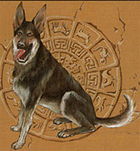 |
Con questa magia di convocazione spazio/temporale il mago fa apparire un cane alla sua presenza. La tipologia di cane convocato cambia a seconda del livello di lancio della magia. Se la magia è lanciata dal 1° al 4° livello di lancio il cane richiamato sarà un Wild Dog [link]. Se la magia è lanciata dal 5° livello di lancio in poi il cane richiamato potrà essere un Wild Dog oppure un War Dog [link]. Quando il mago lancia questa magia instaura uno speciale legame con il cane per cui la sua presenza magia potrà perdurare a tempo indefinito. Quando il mago la lancia l'incantesimo sottrae i punti magia necessari a lanciarlo, orbene, la magia continuerà a perdurare congelando tale ammontare di punti magia al mago fino a che costui non interrompe l'incantesimo impartendo il comando "termina" oppure la magia sia in altro modo dissolta. La magia terminerà parimenti qualora il cane sia ucciso. Solo dopo tale momento i punti magia congelati potranno essere recuperati come ogni altro punto magia speso. Si noti che un mago può mantenere un unico legame di questo tipo alla volta e che mantenere il legame con il cane non è considerato lancio della magia né un'attività stancante che possa impedire al mago di riposare o di dormire. La creatura canina cercherà di aiutare il mago al meglio durante l'incantesimo obbedendo ai suoi comandi (dati tramite le comuni regole per inviare ordine alle creature richiamate) purché siano relativamente semplici e siano contenuti in frasi di massimo cinque parole (senza considerare le congiunzioni). Inoltre, qualora ci si trovi in un terreno adatto con la presenza di sufficienti prede (foresta, aperta campagna, zone selvagge), al cane può darsi uno speciale ordine consistente nel procurare del cibo. Quest'ordine può essere impartito validamente al cane solo una volta al giorno ogni 24 ore (se impartito ulteriormente sarà semplicemente non eseguito). Se quest'ordine viene dato il cane andrà da solo a caccia di selvaggina impiegando 1d3 ore. Al termine di questo periodo il mago dovrà effettuare un tiro percentuale: con un tiro da 91 a 100 il cane svanirà e l'incantesimo terminerà; con un tiro da 01 a 33 per il Wild Dog e da 01 a 25 per il War Dog lo stesso tornerà con selvaggina sufficiente a saziare una creatura di taglia medium per l'intera giornata. Ovviamente si tratterà di carne cruda e non preparata per cui dovrà, nella normalità dei casi essere cucinata prima di poter essere consumata. Il componente materiale di questo incantesimo è la riproduzione di un grosso osso di bovino interamente costruito in argento dal peso di 2 lbs. e dal costo di 50 g.p. che non si consuma al lancio dell'incantesimo. |
Alpha's Sparkle Beam (Evocation)
Range: 0
Components: V, S, M
Duration: Instantaneous
Casting Time: 2
Area of Effect: Cono lungo 9 metri e largo 2 metri all'origine e 7 metri alla
fine
Saving Throw: Special
Con questo incantesimo il mago evoca dal piano dimensionale radiance un cono di luce dorata carico di energia positiva che parte direttamente dalle mani del mago. Tutti coloro si trovano nell'area di effetto della magia devono effettuare un tiro salvezza contro pietrificazione od essere accecati per 1d2 rounds. La forte carica di energia positiva del cono di luce è, però, in grado di provocare seri danni alle creature del piano negativo. Tutte le creature non morte e quelle la cui esistenza di basa sul piano negativo o sul piano dell'ombra che si trovano all'interno del cono subiranno, in luogo dell'effetto di accecamento, 1d4 danni da energia positiva ogni due livelli di lancio dell'incantesimo fino ad un massimo di 4d4 all'8° livello (1d4 dal 1°al 3° livello, 2d4 dal 4° al 5° livello, 3d4 dal 6° al 7° livello, 4d4 dall'8° livello in poi). A queste creature è concesso un tiro salvezza contro incantesimi per dimezzare i danni subiti. Il componente materiale di questo incantesimo è una gemma andalusite (1/10 lb.) di almeno 10 g.p. di valore che si consuma al lancio della magia.
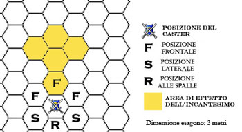
Alpha's Starlight (Evocation, Illusion)
Range: 0
Components: V, S, M
Duration: 1 hour per level
Casting Time: 1 round
Area of Effect: Sfera di 18 m. di raggio
Saving Throw: None
Questa
magia illumina un'area stazionaria di 18 metri di raggio come se fosse una zona
all'aperto illuminata in una notte senza nuvole da un cielo stellato. La luce
dell'area non interferisce in alcun modo con l'infravisione, inoltre vi sono
ampie zone d'ombra. La componente illusoria impedisce di vedere la fonte della
luce, per cui se lanciato di notte all'aperto questo incantesimo (e la relativa
zona illuminata) sarà estremamente difficile da identificarsi. Il
componente materiale di questo incantesimo è un pezzo di velluto nero ed un
piccolo pezzo di vetro smussato (dal valore complessivo di 3 g.p. e dal peso di
1/10 di libbra) che si consumano al lancio della magia.
Analyze Drink (Divination)
Range:
Tocco
Components: V, S
Duration: Instantaneous
Casting Time: 3
Area of Effect: Un liquido
Saving Throw: None
Quando il mago tocca un qualsiasi liquido costui identifica tutti i componenti dello stesso. Sarà nota al mago la composizione del liquido e le esatte proporzioni in cui i vari componenti sono miscelati nel liquido. In questo modo possono anche essere scoperte specifiche ricette oppure se il liquido è stato diluito in acqua ed in che proporzione. Se la magia è lanciata su un liquido velenoso o contenente parte di veleno il mago sebbene riconosca la presenza generica di veleno non sarà in grado di determinarne la natura, gli effetti e la potenza. Se lanciato su liquidi in qualsiasi modo incantati (come ad es. pozioni magiche) il mago non ne comprenderà la natura né la composizione utilizzando questa magia.
Animal (Illusion/Phantasm)
Range: 3
m. per livello
Components: V, S
Duration: 2 rounds per livello
Casting Time: 2
Area of Effect: Un animale ogni 2 livelli
Saving Throw: Special
Attraverso l'uso di questo incantesimo il mago crea l'illusione di uno o più piccoli animali. Deve trattarsi di un animale comune di taglia non superiore a quella small. Il mago può creare un animale illusiorio ogni due livelli (un animale al 1° e 2° livello, due animali al 3° e 4° livello, ecc...). I vari animali creati possono anche differire tra loro. Costoro resteranno nella zona in cui sono stati creati, effettuando solo piccoli movimenti in un'area di 3 metri. L'illusione è esclusivamente visiva essendo priva di elementi illusori olfattivi e sonori.
Association (Divination)
Range:
Tocco
Components: V, S
Duration: Instantaneous
Casting Time: 1 round
Area of Effect: Due superfici
Saving Throw: None
Quando il mago lancia questa magia deve porre in contatto due oggetti materiali. Deve trattarsi di oggetti inanimati, la magia non funzionerà, infatti, su corpi di esseri viventi o parti di essi (anche morti o inanimati). Il mago, quindi, potrà determinare se i due oggetti materiali furono posti in contatto l'uno con l'altro in precedenza. Ad esempio se il mago lancia questa magia su un sacchetto ed una moneta potrà determinare se la moneta ed il sacchetto furono mai stati in contatto. Il mago sarà anche in grado di capire se i due oggetti erano stati connessi in modo tale da comporre un unico oggetto, in quanto in questo caso il risultato della divinazione sarà molto più intenso. Il mago non potrà determinare quando i due oggetti furono posti a contatto. La magia non identificherà in alcun caso contatti avvenuti a più di un anno di distanza, sono parimenti esclusi tutti i contatti posti in essere per utilizzare questa stessa magia.
Askepranduril’s Lesser Contraspell (Abjuration)
Range:
Tocco
Components: V, S, M
Duration: 1 round/level
Casting Time: 1 round
Area of Effect: The Caster
Saving Throw: Special
Autore : Mario Espoletto
Questo
incantesimo crea una barriera magica di colore rosso intorno al mago. La
barriera ha l’effetto di provare a riflettere contro il mago nemico gli
eventuali incantesimi che sono lanciati contro il protetto. Possono essere
riflessi solo incantesimi dei maghi del 1° livello di potere che abbiano il mago
protetto come bersaglio diretto, non si possono quindi riflettere incantesimi
che abbiano un’area d’effetto spaziale anche qualora il mago si trovi dentro
quello spazio (non può quindi essere riflesso lo spell burning hands , mentre
può essere riflesso lo spell magic missile che ha come area d’effetto una o più
creature). Qualora un incantesimo abbia come bersaglio anche altre creature
oltre il mago protetto, comunque lo spell sarà riflesso solo per una parte e
avrà effetto per le restanti (se per esempio un mago lanciasse due magic
missile , dei quali solo uno indirizzato contro il mago protetto solo questo può
essere riflesso mentre l’altro avrà i suoi normali effetti). Non è possibile
provare a riflettere incantesimi che siano lanciati a un livello di esperienza
superiore a quello al quale l’abjurer ha lanciato questo incantesimo. Quando un
mago nemico lancia un incantesimo che si può tentare di respingere dovrà
effettuare un tiro salvezza contro incantesimi, qualora il tiro salvezza avrà
successo significherà che il suo incantesimo sarà riuscito a superare questa
barriera riflettente , un tiro salvezza negativo invece farà si che
l’incantesimo si rivolgerà indietro contro il mago che lo ha lanciato , il quale
dovrà eventualmente effettuare i tiri salvezza necessari per evitarlo. Si badi
che l’incantesimo conserverà la stessa efficacia originaria ( per esempio avendo
uno spell magic missile un raggio di 80 metri, i missili una volta riflessi
potranno riuscire a tornare indietro sul mago che lo ha lanciato solo qualora il
mago protetto si sia trovato entro 40 metri dal suo nemico). Il componente
materiale di questo incantesimo è una molla d’argento finemente lavorata dal
costo minimo di 100 gp. che non si consuma al momento del lancio.
Aura of Lawfulness or Chaos (Divination)
Range: 0
Components: V, S
Duration: 1 round per level
Casting Time: 1 round
Area of Effect: Creature entro 18 metri
Saving Throw: None
Quando il
mago lancia questa magia e si concentra sulle creature presenti entro 18 metri
di distanza dallo stesso è in grado di intravedere i bagliori dell'aura che
queste irradiano in base alla loro vicinanza rispetto alla legge ed al caos. Le
creature legali irradieranno un'aura gialla, quelle neutrali un'aura arancio e
quelle caotiche un'aura rossa. Per poter esaminare l'aura di ogni singola
creatura occorre il mago si concentri sulla stessa un intero round nel corso
della durata della magia. Per tale motivo il mago non è in grado di intravedere
l'aura di creature che non riesce ad identificare o vedere (ad es. creature
nascoste o di cui non conosce la natura animata) ciò anche qualora sia
consapevole della loro presenza. Questa magia, infatti, non può essere
utilizzata in alcun modo come mezzo per identificare o localizzare creature.
Questa magia, infine, funziona solo su esseri viventi non potendo il mago
individuare l'aura di oggetti inanimati (come ad es. quella di oggetti magici
intelligenti).
Autopsy (Necromancy)
Range:
Tocco
Components: V, S, M
Duration: Special
Casting Time: 1 Turn
Area of Effect: Un cadavere
Saving Throw: None
Quando il mago lancia questa magia può determinare l'esatta causa della morte di un cadavere. Per poter lanciare questo incantesimo il mago deve poter toccare un cadavere o un frammento di un cadavere per tutta la durata del lancio della magia. La magia funziona solo su corpi, o pezzi degli stessi, che siano morti da un periodo massimo che dipende dal livello di lancio dell'incantesimo come specificato nella seguente tabella. Inoltre, a determinati livelli di lancio il mago potrà determinare le azioni poste in essere dalla vittima in un periodo precedente alla morte che aumenta con l'aumentare del livello di lancio. Il componente materiale è rappresentato da una polvere di argento ed ossa umane che il mago sparge sul cadavere e che si consuma al lancio dell'incantesimo; ogni dose di tale polvere ha un costo di 2 g.p. e pesa 1/10 di libbra. Quando il mago lancia quest'incantesimo deve consumare una dose di polvere per ogni livello di lancio della magia.
| Livello di lancio | Tempo massimo trascorso dalla morte | Periodo di vita precedente alla morte rivelato |
| 1° - 5° | 10 giorni | nessuno |
| 6° - 8° | 1 mese | 1 round |
| 9° - 11° | 1 anno | 10 rounds |
| 12° - 14° | 10 anni | 30 rounds |
| 15° - 17° | 100 anni | 1 ora |
| 18° + | illimitato | 1 ora |
Avoid Fear (Charm)
Range:
Tocco
Components: V, S
Duration: Special
Casting Time: 1 round
Area of Effect: 1 creatura
Saving Throw: None
Quando il mago lancia questo incantesimo toccando una creatura, costui incita la sua mente a reagire contro ogni forma di paura sia magica che normale. Per tale motivo, se chi ha ricevuto tale magia, essendo stato costretto ad effettuare un tiro salvezza contro paura, lo abbia fallito, costui potrà ripetere una volta tale tiro (sarà la vittima della paura a poter scegliere se ripetere o meno il tiro salvezza). In ogni caso, la magia terminerà immediatamente nei seguenti casi: qualora siano decorse 24 ore dal lancio della magia; qualora chi ha ricevuto questa magia si addormenti (oppure, se elfo, vada in stasi); qualora chi ha ricevuto questa magia abbia ripetuto per la prima volta un tiro salvezza contro paura precedentemente fallito esaurendo così il potere dell'incantesimo.
Awaken (Evocation)
Range: 0
Components: V, S
Duration: Instantaneous
Casting Time: 1
Area of Effect: Sfera di 21 metri di diametro
Saving Throw: None
Quando il
mago lancia questa magia piccole scosse elettriche colpiscono un numero di
creature fino ad un massimo che sia pari al livello di lancio della magia
selezionate dal mago entro l'area d'effetto della stessa. Le scosse non
producono nessun danno ma svegliano le creature colpite, saranno svegliate anche
le creature soggette a sonno magico prodotto da incantesimi di massimo primo
livello di potere. Le creature soggette alla magie si desteranno più rapidamente
e subiranno le penalità dovute al sonno come se fossero già sveglie da due
rounds. Per cui se normalmente una creatura che si sveglia subisce al primo
round -4 ai tiri per colpire, -12 % ai tiri salvezza e 40% di possibilità di
fallire la concentrazione per il lancio della magia; al secondo round -3 ai tiri
per colpire, -9 % ai tiri salvezza e 30% di possibilità di fallire la
concentrazione per il lancio della magia; al terzo round -2 ai tiri per colpire,
-6 % ai tiri salvezza e 20% di possibilità di fallire la concentrazione per il
lancio della magia; ed al quarto round -1 ai tiri per colpire, -3 % ai tiri
salvezza e 10% di possibilità di fallire la concentrazione per il lancio della
magia; un creatura svegliatasi con l'uso di questo incantesimo si considererà
nel round successivo la lancio come se fosse già sveglia al terzo round di
attività (penalità di -2, di -6 % e del 20%). Se la magia avrà effetto su
creature già sveglie queste saranno considerate, a partire dal round successivo,
sveglia già da ulteriori due rounds.
Azalldam's Fabricated Bridge (Conjuration)
Range: 0
Components: V, S, M
Duration: 2 rounds per livello
Casting Time: 1 round
Area of Effect: Ponte largo 3 m., lungo 9 m. + 3 m. / 3 livelli
Saving Throw: None
Quando il mago utilizza questo incantesimo richiama ad esistenza un piccolo ponte di legno. Il ponte è largo 3 metri e lungo al massimo 9 metri + 3 metri per ogni due livelli di lancio oltre il primo (9 metri al 1° e 2° livello, 12 metri dal 3° al 5° livello, 15 metri dal 6° al 8° livello, ecc...). Entrambe le estremità del ponte devono poggiare, per almeno un metro per parte, su una stabile superficie solida. Le basi di appoggio, inoltre, devono trovarsi, più o meno, alla medesima altezza essendo possibile posizionare il ponte solo con una leggera inclinazione. Il ponte apparirà subito davanti al mago che lancia la magia. Il ponte così richiamato ad esistenza potrà sopportare un peso pari a 100 libbre + 100 libbre per livello di lancio, fino ad un massimo di 1000 libbre, ed ospitare creature di dimensione massima Large. Qualora il ponte sia sottoposto ad un peso maggiore, oppure se per qualsiasi motivo il ponte perde una base di appoggio o comunque qualora il ponte cada lo stesso svanirà immediatamente anche prima della fine della durata della magia. Il componente materiale di questo incantesimo è un piccolo ponte di legno in miniatura che non si consuma al lancio della magia dal peso di 0,2 libbre e dal costo di 3 monete d'oro.
Barrier of Force (Abjuration)
Range:
Tocco
Components: V, S
Duration: 1 hour
Casting Time: 3
Area of Effect: Una creatura
Saving Throw: None
Primo di una serie di barriere magiche difensive (Improved Barrier of Force al 2° livello di potere e Supreme Barrier of Force al 3° livello di potere) questo spell crea intorno alla creatura selezionata una barriera di forza invisibile. La barriera non interferisce in nessun modo con le azioni ed i movimenti della creatura difesa, al contrario la difende contro gli attacchi fisici, provenienti da ogni direzione, dandole una classe armatura pari ad AC 3. Eventuali altri bonus, sia magici che non (ad es. quelli dovuti alla destrezza), non si cumuleranno in alcun caso alla barriera con il risultato che qualora una creatura abbia di base una classe armatura migliore di AC 3 questo spell non migliorerà in alcun modo la sua classe armatura.
Bleeding Ray (Necromancy)
Range: 9
metri
Components: V, S, M
Duration: Instantaneous
Casting Time: 2
Area of Effect: One creature
Saving Throw: Negates
|
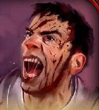 |
Questa magia fa partire dalle mani del mago un raggio rosso sangue che colpendo la vittima fa apparire sul suo corpo tagli profondi e sanguinanti. Questa magia, infatti, può essere lanciata unicamente su creature il cui fisico è composto di carne (non ad esempio su costruiti, elementali, scheletri ecc...). La vittima può evitare di subire gli effetti di questo incantesimo superando un tiro salvezza su energia vitale. Se il tiro salvezza è fallito la vittima subirà 1d3 danni da lacerazione ogni due livelli di lancio della magia (1d3 al primo e secondo livello, 2d3 al terzo e quarto livello, e così via...) fino ad un massimo di 5d3 danni al 9° livello di lancio. Inoltre, per il dolore subito, la vittima risulterà impedita (hindered) per tutto il resto del round in corso (le creature immuni al dolore e quelle che, possedendo la competenza pain tollerance, riescono in una prova nella stessa non subiranno gli effetti secondari dell'incantesimo. Il componente materiale di questo incantesimo è uno spillone di ferro dal costo di 1 moneta d'oro e dal peso di 1/2 libbra che si consuma al lancio della magia. |
Blinding Touch (Necromancy)
Range:
Tocco
Components: V, S
Duration: 2 round + 1 round per 3 livelli
Casting Time: 3
Area of Effect: One creature
Saving Throw: Negates
Il tocco del negromante atrofizza temporaneamente gli organi visivi della vittima la quale, qualora fallisce un tiro salvezza su magia, risulterà accecata per la durata dell'incantesimo (2 round dal 1° al 2° livello, 3 round dal 3° al 5° livello, 4 round dal 6° al 8° livello e così via) fino ad un massimo di 5 round al 9° livello di lancio. Si noti che questa magia non funziona su creature che non dispongono di normali organi visivi (occhi) come ad esempio costruiti, elementali, non-morti ecc... .
Bronze Ball (Evocation)
Range: 9 yards
+ 3 yards per level
Components: V, S
Duration: Instantaneous
Casting Time: 2
Area of Effect: One creature
Saving Throw: None
Questa magia evoca una sfera di bronzo piena dal diametro di 60 cm. che partendo da 1 metro davanti al mago vola e colpisce l’avversario selezionato ad incredibile velocità per poi svanire nel nulla. La sfera produce 1d10 danni da impatto + 1 danno ogni 2 livelli di lancio della magia (1d10 + 1 al 1° e 2° livello, 1d10 + 2 al 3° e 4° livello, ecc…). Questa magia è in grado di fare danni alle strutture e alle costruzioni.
Burning Hands (Alteration)
Range: 0
Components: V, S
Duration: Istantaneous
Casting Time: 2
Area of Effect: area di 3 m. * 9 m.
davanti al mago
Saving Throw: 1/2
Quando il mago lancia questa magia evoca dal piano dimensionale interno del fuoco una fiamma che poi altera utilizzando la formula magica della scuola di alterazione in modo tale da farla divampare violentemente ed investire le tre posizioni frontali che gli sono davanti. Tutte le creature che occupano le posizioni frontali dinanzi al mago saranno quindi investite dalle fiamme e subiranno 1d3 danni da fuoco magico +2 danni per ogni livello di lancio della magia dal 1° al 5° livello di lancio +1 danno supplementare per ogni livello di lancio della magia dal 6° al 10° livello di lancio (per fare alcuni esempi la magia produrrà 1d3+2 danni al 1° livello di lancio, 1d3+10 danni al 5° livello di lancio, 1d3+11 danni al 6° livello di lancio ed un massimo di 1d3+15 danni al 10° livello di lancio). Le vittime coinvolte dall'incantesimo potranno superare un tiro salvezza contro riflessi per dimezzare i danni subiti.
Burning Steel (Enchantment)
Range:
Tocco
Components: V, S
Duration: 1 round per level
Casting Time: 3
Area of Effect: One steel weapon
Saving Throw: None
Questa magia rende incandescente la lama di un’arma, utilizzabile in corpo a corpo, che sia costruita in acciaio (non funziona su armi di metalli dolci o di legno). L'incandescenza non procura alcun fastidio al possessore e non danneggia la lama. Durante l'effetto dell'incantesimo, però, ogni volta che chi utilizza quest'arma in combattimento colpisce una creatura la stessa subirà 2 danni supplementari da calore. Occorre notare che, durante l'effetto dell'incantamento, la lama non emana fiamme e non è in grado di incendiare oggetti. Si noti, inoltre, che si tratta di danni da comune calore non considerabili di per sé danni magici. L'effetto dura 1 round per livello di lancio a partire da quello immediatamente successivo al lancio dell'incantesimo.
Campfire (Alteration)
Range: 10
yards
Components: V, S
Duration: Instantaneous
Casting Time: 2
Area of Effect:
One target or item
Saving Throw: Special
Questa magia provoca la combustione automatica di piccoli oggetti di per sé infiammabili (come vestiti, legno, olio, ecc...). Il mago punta il dito contro l'oggetto che desidera fare bruciare e pronuncia la formula del fuoco. Se la magia è lanciata contro oggetti che non sono indossati da nessuno, questi prendono immediatamente fuoco (un oggetto così incendiato dovrà effettuare un tiro salvezza contro fuoco alla fine di ogni round per evitare di essere distrutto). Questa magia, quindi, risulta particolarmente utile per accendere rapidamente fuochi da campo, braci, pire ecc... Questa magia non può essere lanciata su oggetti magici ed oggetti di per sé non direttamente infiammabili (come i metalli). Inoltre, se è lanciata su un oggetto infiammabile indossato da una creatura o che si trova su una creatura (come nel caso di olio sparso sul corpo di un essere) nonché su parti infiammabili della creatura stessa (come capelli, pelliccia, ecc...) costei ha diritto ad un tiro salvezza su magia. Se il tiro salvezza riesce la magia non avrà avuto effetto. Se il tiro salvezza fallisce la creatura od i suoi oggetti stessa avrà preso fuoco e la stessa subirà 1d2 danni alla fine di ogni round fino a che il fuoco non si spegne. Per spegnere il fuoco da una persona o da un oggetto occorre impiegare un'azione complessa in un singolo round. Si noti, però, che alcuni materiali estremamente infiammabili (ad es. olio silveriano) una volta incendiati risulteranno quasi impossibili da spegnersi.
Cat Spirit (Alteration)
Range:
Tocco
Components: V, S, M
Duration: 1 hour
Casting Time: 1 round
Area of Effect:
Creature touched
Saving Throw: None
Quando il mago lancia questo incantesimo su una creatura la stessa acquisisce alcune peculiarità fisiche proprie dei felini. In particolare, chi è sotto gli effetti di questo incantesimo ottiene un bonus del +25% alle abilità move silently ed hide in shadow; inoltre, la creatura acquisisce la capacità di cadere riducendo i danni come i felini. In base a tale ultima capacità la vittima non subirà danni per i primi 3 metri di caduta e dimezzerà i danni subiti da 6 a 18 metri di caduta (se quindi una creatura sotto effetto di questo incantesimo cadrà da 9 metri di altezza subirà 1/2 per difetto dei 3d6 di danni che avrebbe normalmente subito). Se la creatura cade da altezze superiori ai 18 metri la stessa non otterrà vantaggi da questa magia subendo interamente i danni da caduta previsti. Si noti che l'alterazione fisica subita dalla creatura non si manifesta esternamente con modifiche corporali della stessa. Il componente materiale di questo incantesimo è un ciuffo di peli di una razza rara di gatto dal peso di 1/10 di libbra e dal costo di 1 moneta d'oro che si consuma al lancio dell'incantesimo.
Chill the Blood (Alteration)
Range: 21 metri
Components: V,S
Duration: 1 round per level (max 7 rounds)
Casting Time: 2
Area of Effect: One creature
Saving Throw: Negates
Attraverso questo incantesimo il mago raffredda il sangue di una creatura con l'effetto di intorpidirla per tutta la durata dell'incantesimo. La vittima ha diritto ad un tiro salvezza su magia per evitare gli effetti della magia. Se la creatura fallisce il tiro salvezza la stessa proverà un'innaturale sensazione di freddo all'interno del proprio corpo e sarà presa da un generale senso di torpore subendo una penalità di +2 a tutte le iniziative e di -1 ai tiri per colpire (avrà inoltre il 10% di possibilità di fallire nel lancio degli incantesimi con componenti somatici). Creature non morte, costruiti, creature originarie di diversi piani dimensionali, creature vegetali e comunque tutte le creature in qualsiasi modo prive di sangue sono immuni agli effetti di questa magia. Parimenti immuni agli effetti di questo incantesimo sono tutte le creature immuni ai danni da freddo. Le creature che hanno una qualsiasi resistenza ai danni da freddo, invece, ottengono un bonus di +4 al tiro salvezza contro questo incantesimo.
Chill Touch (Necromancy)
Range: Tocco
Components: V, S
Duration: 1 round per level (max 7 rounds)
Casting Time: 4
Area of Effect: The Caster
Saving Throw: Speciale
A partire dal round successivo al lancio di questo incantesimo, per la durata di 1 round per livello di lancio della magia fino ad un massimo di 7 round, la mano del mago viene circondata da un alone bluastro di pericolosa energia negativa. Qualora il mago nel corso della durata della magia colpisca intenzionalmente (effettuando un regolare tiro per colpire) una creatura il cui corpo si basa sull'energia positiva la stessa subirà la perdita di 4 punti ferita per l'assorbimento della sua energia vitale da parte del campo di energia negativa e dovrà superare un tiro salvezza su energia vitale. Le azioni di attacco con questa magia si considereranno effettuate ad un fattore iniziativa pari a +4. Se il tiro salvezza fallisce la vittima sarà debilitata e subirà una penalità di -1 ai tiri per colpire effettuati in corpo a corpo e di -1 ai danni su tutti gli attacchi effettuati in corpo a corpo o con armi da lancio. Tale penalità permarrà per 24 ore, fino a che perdura questa penalità la vittima non potrà subire nuovamente, cumulandoli, gli effetti secondari prodotti dalla magia (subirà regolarmente, però, la perdita di punti ferita). Se il tiro salvezza riesce la vittima non subirà questo effetto secondario dell'incantesimo ma dovrà superare un nuovo tiro salvezza qualora sia colpita nuovamente dalla mano del mago. Le creature il cui fisico non si basa sull'energia positiva (si pensi ai costruiti) sono totalmente immuni a tutti gli effetti di questa magia. Questa magia, invece, ha un effetto particolare sulle creature non morte. Qualora il mago colpisce con la sua mano un non morto, infatti, costui dovrà superare immediatamente un tiro salvezza su energia vitale. Se il tiro salvezza riesce il non morto non subirà alcun effetto dalla magia e sarà immune agli effetti del medesimo incantesimo (non, quindi, se il mago lancia nuovamente l'incantesimo e colpisce di nuovo il non morto). Se il tiro salvezza fallisce il non morto sarà costretto a restare tremante ed immobile al suo posto senza poter compiere alcuna azione per 5 interi round. Il non morto, però, non subirà alcuna penalità alla propria classe armatura ed ai propri tiri salvezza in quanto potrà continuare a difendersi passivamente. Qualora, prima dell'effetto, il non morto subirà un qualsiasi attacco diretto (od altra forma di azione ostile direttamente lesiva e dannosa) gli effetti dell'incantesimo termineranno alla fine del round in corso. In tale ultimo caso, dunque, il non morto sarà libero di agire a partire dal round successivo a quello in cui è stata attaccato. In ogni caso un non morto può subire solo una volta gli effetti paralizzanti di questo incantesimo ogni 24 ore. Non morti di dadi vita/livelli pari o superiori a 7 sono immuni agli effetti di questo incantesimo.
Circle of Disturbing (Abjuration)
Range: 0
Components: V, S
Duration: 1 round per level
Casting Time: 3
Area of Effect:
Sfera di 9 metri di raggio
Saving Throw: None
Questa magia crea, all’interno di una sfera di 10 metri raggio centrata sul caster e che si muove con lui, dei flussi di energia magnetica dai riflessi rossastri che disturbano i movimenti di tutti coloro si trovano al suo interno (tranne del mago che ha lanciato questa magia). Tutte le creature all’interno della sfera subiranno una penalità di +3 all’iniziativa per tutta la durata dell’incantesimo. La magia comunque non impedirà alle creature dentro il circolo di concentrarsi per lanciare le magie (ma la penalità di +3 si applicherà al casting time).
Coloration (Alteration)
Range:
Tocco
Components: V, S, M
Duration: 1 day per level
Casting Time: 1
round
Area of Effect: 1 metro quadro per livello
Saving Throw: Negates
Questo incantesimo permette al mago di colorare magicamente la superficie di un qualsiasi oggetto (può trattarsi di un oggetto di qualsiasi tipo come anche di un'arma e di una corazza, ecc...) od una superficie. In ogni caso la dimensione della superficie colorata non deve superare 1 metro quadro per livello di lancio della magia. Il mago può selezionare una qualsiasi tonalità di colore ivi compreso le tonalità fosforescenti che sebbene non in grado di illuminare risultano ben visibili di notte. Se l'oggetto è impugnato od indossato da una creatura la stessa ha diritto ad un tiro salvezza contro incantesimi per resistere all'effetto. Il componente materiale di questa magia è una manciata di sabbia colorata dal peso di 1/10 libbra e dal costo di 3 g.p. che si consuma al lancio dell'incantesimo.
Combat Mind (Divination)
Range: Tocco
Components: V, S
Duration: Speciale
Casting Time: 1 round
Area of Effect: Una creatura
Saving Throw: None
Quando il mago lancia questa magia, la mente del beneficiario diviene particolarmente incline al combattimento. Costui, infatti, riceve immediatamente un ammontare di punti combattimento supplementari pari a 4 + 1 per livello di lancio dell'incantesimo, fino ad un massimo di 12 punti combattimento all'8° livello di lancio. Questi punti combattimento saranno i primi ad essere sottratti ed, una volta utilizzati, non potranno essere recuperati attraverso il riposo né attraverso altre tecniche naturali o magiche. In ogni caso, trascorse 24 ore dal momento del lancio della magia la stessa terminerà e il beneficiario perderà i punti non ancora utilizzati. Questo incantesimo può essere regolarmente dissolto magicamente. Deve osservarsi, infine, che una creatura può ricevere validamente uno solo di questi incantesimi ogni 24 ore (anche in caso di preventivo esaurimento dei punti combattimento o di anticipata dissoluzione magica).
Comprehend Languages (Alteration)
Range:
Tocco
Components: V, S, M
Duration: 5 rounds per level
Casting Time: 1 round
Area
of Effect: Una creatura od una scritta
Saving Throw: Special
Quando il mago lancia questo incantesimo deve toccare una creatura di cui non conosce la lingua od oggetto contenente una scritta che non riesce a comprendere in quanto scritta in una lingua da lui non conosciuta. Dopo aver toccato una creatura che sia in grado di parlare, il mago comprenderà ciò che la stessa dirà per l'intera durata dell'incantesimo. Si noti, però, che la creatura continuerà a parlare nella sua lingua e che il mago non sarà in grado di risponderle se non utilizzando una lingua da quest'ultimo conosciuta, ciò in quanto la magia si limita a tradurre nella mente del mago le parole pronunciate dalla creatura non donando, al contempo, al mago alcuna capacità linguistica supplementare. Alla creatura è concesso un tiro salvezza per evitare gli effetti dell'incantesimo. Se, invece, la magia è lanciata su una qualsiasi scritta in una lingua che il mago non conosce, costui comprenderà il suo significato senza però divenire al contempo in grado di scrivere in tale lingua. La magia non permette al mago di tradurre scritte in magico e di decodificare scritte in codice ma semplicemente di tradurre in modo comprensibile le scritte nel loro significato letterale. Questo incantesimo, inoltre, non rileva al mago scritte nascoste e non immediatamente visibili dal mago (si pensi a scritte con inchiostro non visibile o con illusioni). Quando è lanciato su una qualsiasi scritta che il mago tocca, lo stesso sarà in grado di tradurre fino a 10 parole per livello di lancio dell'incantesimo (nel computo dovranno rientrare anche gli articoli e le congiunzioni) inoltre occorre che tutte le parole siano scritte nel medesimo oggetto che il mago ha toccato al lancio della magia (ad esempio una pergamena, un libro, un portale). Il componente materiale di questo incantesimo è una manciata di sale mista a fuliggine (dal costo di 1 g.p. e dal peso di 1/10 di libbra) che si consuma al lancio della magia.
Condense Water (Alteration)
Range: 15
metri
Components: V, S, M
Duration: Permanent
Casting Time: 1 hour
Area
of Effect: Special
Saving Throw: None
Questa magia può essere lanciata esclusivamente all'aperto. Quando il mago lancia questo incantesimo è in grado di condensare acqua dall'aria circostante all'interno della giara che costituisce lo speciale componente material di questo incantesimo. Si noti che si tratterà di comune acqua dolce e potabile che, sebbene ottenuta mediante un processo magico, non può in nessun caso considerarsi magica. Per lanciare questa magia il mago dovrà posizione la giara all'aperto ed effettuare il lento rituale dalla durata di un'ora. Al termine di questo periodo si sarà condensata nella giara 1 litro di acqua. Si noti che se per qualsiasi motivo il mago viene interrotto prima dello scadere dell'ora di casting time la magia fallirà e l'acqua fino ad allora condensata evaporerà istantaneamente. Il componente materiale di questo incantesimo è una piccola giara di bronzo con incise rune di alterazione dalla capacità di un litro, dal costo di 15 g.p. e dal peso di 2 libbre che non si consuma al lancio dell'incantesimo.
Confuse Self (Charm)
Range: 0 Components: V, S Duration: 1d8 rounds + 1 round per level Casting Time: 2 Area of Effect: The caster Saving Throw: None
This low level curse developed by the wizard Merlin, causes the caster to be confused to the point of being incapacitated. This prevents the caster from doing anything that requires conscious thought during the duration of the spell, but also prevents enemies from gaining any useful information from the caster. Also, there is a 50% chance that the caster is rendered unconscious for 2d8 rounds, following the spells completion. This spell can only be removed by a remove curse followed by dispel magic.
Conjure Clothes (Conjuration)
Range: Tocco
Components: V, S
Duration: 1 day
Casting Time: 1 round
Area of Effect: Speciale
Saving Throw: None
Quando il mago lancia questo incantesimo toccando una qualsiasi creatura
(compreso se stesso) di taglia massima Large, alcuni vestiti (puliti e
perfettamente piegati), della taglia esatta indossata dalla creatura toccata,
compaiono nell'altra mano del mago. Si tratta di vestiti di tessuto comprensivi
di veste, sottoveste e biancheria, stivali di cuoio o sandali, cinta, cappello o
cappuccio. Non saranno presenti, quindi, cappotti, mantelli, ed altri indumenti
di tipo diverso da quelli indicati precedentemente. A seconda del livello di
lancio il mago potrà selezionare vestiti di diversa qualità:
- dal 1° al 4° livello di lancio, vestiti comuni (vesti in tessuti comuni,
canapa e cotone, senza molti colori, utilizzati da soldati, contadini, piccoli
commercianti. Valore di circa 5 g.p. con tasche per 2 libbre).
- dal 5° all'8° livello di lancio, vestiti eleganti (vesti in tessuti pregiati,
seta e velluti, colorati e ricamati, utilizzati da ufficiali, ricchi
commercianti, funzionari. Valore di circa 25 g.p. con tasche per 3,5
libbre).
- dal 9° livello di lancio in poi, vestiti nobiliari (vesti in tessuti rari,
colorati, ricamati e riccamente adornati, utilizzati da nobili, classe molto
agiata, generali, ministri. Valore di circa 100 g.p. con tasche per 3,5
libbre).
Nonostante il mago non abbia controllo troppo preciso sullo stile di vesti che
appariranno costui può dare, nel corso del lancio della magia, delle indicazioni
di massima quali la colorazione prevalente e la tipologia di fattura (semplice,
pomposa, rifinita, ecc...). Trascorso un intero giorno dal lancio della magia le
vesti si sgretoleranno definitivamente in polvere. Per ovvie ragioni, questo
incantesimo è molto ricercato dalle spie, dai ladri e da coloro desiderano
mantenere nascosta la loro identità.
Conjure Drink (Conjuration)
Range: Tocco
Components: V, S, M
Duration: Speciale
Casting Time: 1 round
Area of Effect: Un boccale di metallo
Saving Throw: None
Quando il mago lancia questo incantesimo il boccale di metallo (componente materiale necessario) si riempie della bevanda scelta dal mago in base al livello di lancio della magia. In particolare, il mago potrà scegliere al 1° livello acqua di pozzo, al 2° livello acqua di sorgente, al 3° livello birra fresca, al 4° livello birra aromatizzata al luppolo, al 5° livello vino rosso ed al 6° livello vino aromatizzato (ovviamente il mago potrà sempre selezionare un prodotto inferiore al livello di lancio utilizzato). Si noti che la bevanda deve essere consumata subito e non può essere travasata. Se, infatti, viene travasata o resta nel boccale per più di un turno la stessa evaporerà svanendo nel nulla. La quantità di bevanda prodotta dalla magia nel boccale è appena in grado di soddisfare la sete giornaliera di una creatura di taglia medium. Il componente materiale di questo incantesimo è un grosso boccale di metallo impreziosito con incisioni runiche dal valore di almeno 25 monete d'oro e dal peso di 0,5 libbre che non si consuma al lancio della magia.
Conjure Eldron Tunic (Conjuration)
Range: 0
Components: V, S, M
Duration: 1 giorno per livello
Casting Time: 1 round
Area of Effect: Una veste magica
Saving Throw: None
Attraverso l'uso di questo incantesimo il mago richiama ad esistenza una tunica di Eldron (peso 2 lb., 10 punti corazza) che a seconda del livello di lancio della magia può risultare incantata con un incantamento minore della tipologia Cloth of Resistance. Una normale tunica costruita con il famoso tessuto elfico denominato Eldron, misto di seta e tela di ragno, dona a chi la indossa una classe armatura pari ad AC 9. Se la magia è lanciata dal 5° livello di lancio in poi, la tunica risulterà incantata con l'incantamento minore Cloth of Resistance che le dona maggiore resistenza. Per questo motivo, ai fini della determinazione del danno di un colpo critico il personaggio che indossa una tunica così incantata si considererà indossare una corazza. Inoltre, una tunica incantata con questo incantamento minore disporrà di 5 punti corazza supplementari (ottenendo, quindi, un totale di 15 punti corazza) e di un tiro salvezza pari a 11 per evitarne la perdita in caso di danneggiamento. Questa tunica si considera costruita per una creatura della stessa razza del mago. Il mago che lancia la magia non necessiterà, a differenza delle altre creature, di effettuare alcun tiro di fit in per verificare se può indossarla in quanto la stessa sarà sempre della sua misura. Il componente materiale di di questa magia è un pezzo di Eldron dal valore di 3 monete d'oro e dal peso di 1/10 di libbra se la magia è lanciata per ottenere una tunica non incantata. Qualora la magia è lanciata per ottenere una tunica incantata sul tessuto dovrà essere ricamata una runa magica della scuola Conjuration d'argento (valore totale pari a 12 monete d'oro supplementari). In entrambi i casi il componente si consuma al momento del lancio della magia.
Conjure Fundamental (Summoning)
Range: 30 metri
Components: V, S, M
Duration: 30 round
Casting Time: 2 round
Area of Effect: Special
Saving Throw: None
Con questo incantesimo il mago è capace di convocare alla sua presenza una creatura appartenente ad uno dei quarto piani elementali (Aria, Fuoco, Acqua, Terra) della tipologia Fundamental (link). Si tratta di una convocazione di tipo reale. Attraverso l'uso delle formule magiche di questo incantesimo il mago potrà provare a tenere sotto controllo la creatura richiamata. Si noti, però, che il mago può tenere contemporaneamente sotto controllo, attraverso l'uso di incantesimi di questo gruppo, un unico elementale indipendentemente dalla sua tipologia e dalla potenza della magia utilizzata. Per poter comandare l'elementale il mago dovrà restare in costante concentrazione. Alla fine di ogni round di controllo il mago ha comunque 1 possibilità su 1d20 di perdere la concentrazione. Se per qualsiasi motivo, il mago perde la concentrazione, l’elementale sarà libero dal controllo e, mosso da un odio irrefrenabile, attaccherà il mago che lo ha convocato appena possibile. Alla fine di ogni round di controllo, dopo aver determinato se il mago lo ha mantenuto, costui può decidere di liberarsi dall'elementale rimandandolo nel suo piano di esistenza originario. Quando il mago perde il controllo dell'elementale, costui può comunque provare a rimandarlo nel suo piano di esistenza con un'azione complessa avente fattore iniziativa pari a +2 effettuabile a partire dal round successivo a quello in cui ha perso il controllo che richiede il mantenimento della concentrazione e l'utilizzo di componenti verbali e somatici. In questo caso il mago avrà una possibilità di successo pari al 15% + il 3% per livello di esperienza raggiunto del mago. Se il tiro fallisce il mago non potrà più provare a liberarsi del medesimo elementale che proverà ad attaccarlo per il resto della durata dell'incantesimo. Alla fine della durata della magia o quando l'elementale muore lo stesso svanirà tornando immediatamente nel suo piano di esistenza. Qualora la creatura di cui si è perso il controllo non sia fisicamente in grado di attaccare il mago la stessa resterà ferma per il resto della durata dell'incantesimo limitandosi a difendersi ed attaccare eventuali aggressori. L’elementale dovrà restare comunque ad una distanza massima di 30 metri dal mago o questi ne perderà comunque e definitivamente il controllo. Il componente materiale di questo incantesimo è diverso a seconda del tipo di elementale convocato. Per convocare un elementale dell'aria sarà necessario utilizzare una gemma ametrino dal valore di 10 monete d'oro e dal peso di 1/10 di libbra; per convocare un elementale dell'acqua sarà necessario utilizzare una gemma acquamarina dal valore di 10 monete d'oro e dal peso di 1/10 di libbra; per convocare un elementale della terra sarà necessario utilizzare una gemma calcedonia dal valore di 10 monete d'oro e dal peso di 1/10 di libbra; per convocare un elementale del fuoco sarà necessario utilizzare una gemma andalusite dal valore di 10 monete d'oro e dal peso di 1/10 di libbra. In ogni caso, la gemma utilizzata si consumerà al lancio della magia.
Conjure Spell Components (Conjuration)
Range: 0
Components: V, S
Duration: 1 turno
Casting Time: 1 round
Area of Effect: Speciale
Saving Throw: None
Con questo incantesimo di convocazione spazio/temporale il mago richiama nelle sue mani un componente materiale. Deve trattarsi necessariamente di un componente materiale che il mago utilizza per un qualsiasi altro suo incantesimo che abbia regolarmente ripassato. Inoltre, il componente materiale richiamato deve rientrare, in termini di peso e valore (inteso come valore medio di mercato), all'interno dei limiti previsti dal livello di lancio di questa magia come espressi nella seguente tabella. Componenti aventi peso o valore superiore non potranno essere richiamati.
| Livello di lancio | Peso Massimo | Valore Massimo |
| 1°- 3° | 0,1 libbre | 1 moneta d'oro |
| 4°- 6° | 0,2 libbre | 3 monete d'oro |
| 7°-9° | 0,5 libbre | 5 monete d'oro |
| 10°+ | 1 libbra | 10 monete d'oro |
Se i suddetti limiti sono rispettati, un singolo componente del tipo richiesto apparirà nelle mani del mago. Si tratta di un componente dotato sicuramente di aura magica adeguata al lancio della magia. Una volta comparso nelle mani del mago il componente dovrà necessariamente essere utilizzato entro un turno a partire dal round in cui questa magia è stata lanciata in quanto, trascorso questo periodo, il componente material richiamato ad esistenza svanirà comunque in uno sbuffo di polvere.
Cramps (Charm)
Range: 30
metri
Components: V, S
Duration: 3 rounds + 1 round per level
Casting Time: 1
Area of Effect: One creature
Saving Throw: Negates
Quando il mago lancia questo incantesimo stimola una determinata parte del sistema nervoso della vittima, in particolare i ricettori del dolore, in modo tale da provocarle fortissimi crampi addominali. Per tale motivo, qualora la vittima non superi un tiro salvezza contro incantesimi mentali, la stessa subirà dolori addominali tali da risultare incapacitata (incapacitated) per l'intera durata della magia (3 rounds + 1 round per livello di lancio fino ad un massimo di 15 rounds al 12° livello di esperienza). Si tenga presente che chi è incapacitato può continuare a muoversi ed a compiere le sue azioni ma le sue capacità di azione sono ridotte. Per questo motivo riceve una penalità di -2 a tutti i suoi tiri ed il 20% di non riuscire a concentrarsi nel lancio delle magie, inoltre può muoversi solo alla metà del suo fattore movimento. Se costretto ad effettuare un tiro (ad es. un tiro salvezza) costui riceve una penalità di -2 (-10% ai tiri salvezza) su tutti i tiri contro effetti che sarebbero stati più facili da evitare qualora costui fosse stato in grado di muoversi normalmente. Infine, gli avversari che attaccano una creatura incapacitata ricevono un bonus di +2 al loro tiro per colpire. Si noti, infine, che questa magia non svolge alcun effetto su creature prive di un sistema digerente animale (come ad esempio i non morti, i costruiti, nonché tutte le piante e le creature di origine vegetale come lo Shambling Mound) o che abbiano un metabolismo diverso da quello delle creature del primo piano materiale (si considerino immuni, ad esempio, gli elementali, i demoni e le altre creature planari).
Crier's Boon (Alteration)
Range: 0 Components: V, S, M Duration: 1 turn per level Casting Time: 1 Area of Effect: Creature touched Saving Throw: None
This simple spell grants the recipient the ability to effortlessly speak in a loud clear voice for the duration. Persons as far away as 200 feet can hear the recipient of crier's boon over a normal crowd as if they were standing next to him. Exceptionally noisy areas can reduce the distance the recipient's voice will travel, as determined by the DM. Crier's boon has been used for countless years by town criers and nobility alike to address large numbers of persons. Many times, this spell is used in conjunction with power word, attention (q.v.) to great effect. To cast this spell, the wizard is required to eat a spoon of honey .
Darklight's Conjured Clothes (Conjuration)
Range: 0 Components: V, S Duration: Special Casting Time: 1 Area of Effect: The caster Saving Throw: None
Created during the dark one's social days, it was designed to relieve a budget strained by money spent on fashion changes. This spell instantly conjures some clothes which the wizard will immediately wear . However, from 1st to 3rd level the clothes are of low price, for higher levels they will be fine . The wizard can’t choose the type or the color of this clothes but they will be of the right size ( and for the right sex ! ) . The clothes are also mystically cleansed and freshened with each transformation. The clothes will maintain their altered state while in the possession of the wizard or until dispelled. Each new spell cast will dispell the old clothes .
Darklight's Mystic Shield (Abjuration)
Range: 0
Components: V, S
Duration: 3 rounds + 2 rounds per level
Casting Time: 2
Area of Effect: The caster
Saving Throw: None
Questo incantesimo può essere utilizzato per bloccare attacchi magici indirizzati contro il mago. Quando, infatti, il mago lancia questo incantesimo un disco viola pulsante di energia magia appare vicino al mago. Il disco, quindi, si interporrà tra il mago e gli attacchi magici diretti contro di lui. Si noti che il disco è completamente inefficace contro magie che abbiano effetti ad area in quanto non copre che una porzione del corpo del mago. Lo scudo, invece, bloccherà gli attacchi magici che abbiano come bersaglio diretto il mago assorbendo fino a 5 punti di danni magici + 5 ogni due livelli di lancio oltre il primo (5 punti al primo ed al secondo livello di lancio, 10 punti al terzo ed al quarto livello di lancio, 15 punti al quinto ed al sesto livello di lancio, e cos' via). Lo scudo si interporrà ogni volta che il mago sia colpito da missili, raggi, saette, sfere ed altri effetti magici similari. In queste occasioni il mago potrà effettuare una prova di intelligenza (la prova va ripetuta per ogni singolo attacco, se ad es. il mago viene attaccato con tre magic missile dovrà effettuare una prova per ognuno di essi anche se questi risultino lanciati con una singola magia), se la prova ha successo lo scudo si sarà posizionato dinanzi all'attacco assorbendo la relativa energia magica (il danno eventualmente eccedente colpirà regolarmente il mago). Qualora il mago deve effettuare nel medesimo round più di una di queste prove di intelligenza costui riceverà una penalità cumulativa di -1 a tutte le prove successive alla prima. Se il mago ha diritto ad un tiro salvezza per evitare l'attacco magico o ridurre il danno questo dovrà essere effettuato prima dell'intervento dello scudo. Si badi che lo scudo assorbe unicamente attacchi di pura energia magica provenienti da incantesimi diretti contro di lui, risultando del tutto inefficace contro i danni fisici anche se provocati da armi magiche (ad es. una freccia incantata con una qualsiasi magia non sarà bloccata né risulterà ridotto il suo effetto magico) o che siano effetto di incantesimi (come per le magie della scuola conjuration).
Davenet's (Enchantment/Charm)
Range: Special Components: V, S, M Duration: Permanent , On set 2d4 days Casting Time: 1 hour Area of Effect: One person Saving Throw: Special
The spellcaster may affect one individual of the opposite sexual orientation to become enamoured with the spellcaster and willingly subject to all of his or her commands. That the victim has been seduced (magically or otherwise) will be readily apparent to those who make a successful Wisdom check. In order to cast the spell, the spellcaster must extract a personal item of the victim's, and then cast the spell onto the item in solitude. When the item is given back to the victim and recognized, the spell is complete. The material component is not consumed, of course. The victim is allowed a special Intelligence check: the roll is modified by adding the victim's Wisdom and subtracting the spellcaster's Charisma (Comeliness if that statistic is used). The spell is effective until dispelled. For all purpose not write here this spell is considered like a charm ( detect charm will reveal it ! ) . To become effective the spell must be on the victim for 2d4 days and only after that period the victim have to do the saving throw . While under the enchantment, the victim will take as gospel everything the spellcaster says, and will strive to protect and defend the spellcaster at all times. If the spell is broken by another magic or by the will of the enchanter, however, the victim will remember everything and know that magic was involved. It’s strange but this spell can be used only to a person at time , this person must be of the same race , of the opposite sex , whit a right age difference and it cannot be cast on a person that did a successful saving throw against the same spell casted by the same mage before .
Defensive Burst (Alteration, Evocation)
Range: 0 Components: V, S, M Duration: 24 hours Casting Time: 1 round Area of Effect: One creature Saving Throw: ½
This spell, when cast brings into being a protection field one foot distant from the caster's body. When detonated, the spell produces a burst of flame around the caster's body, doing 1d4+1 points of flame damage for every two levels of the caster (cf. magic missile). The flame does not affect the caster, his items, or any creatures immune to fire. The spell is set off when something attempts to cover up, engulf, grapple, or other wise engage the caster in unarmed combat (eg., green slime falling on the caster). The spell is not set off by weapon attacks, be they melee or ranged, nor is it set off by other spells (although it can, of course, be dispelled or end up in an anti magic shell or the like). All damage from the fire burst is resolved before the grappling attack is made, and the target gets a saving throw for half damage. The material component is a pinch of sulphur.
Decompose Corpse (Necromancy)
Range:
Tocco
Components: V, S, M
Duration: Istantanea
Casting Time: 4
Area of Effect: 1
corpse
Saving Throw: Special
Con questa magia il necromante causa l’immediata decomposizione di un qualsiasi cadavere e contestualmente maledice le sue carni, il cadavere così decomposto non potrà quindi più essere riportato in vita a meno che non sia utilizzata una magia resurrection e non può essere animato come non morto. Se la magia è utilizzata, inoltre, su uno zombie ed esclusivamente su questo tipo di non morto, lo stesso dovrà effettuare un tiro salvezza contro morte magica o decomporsi e perdere la linfa vitale. Un verme preso da una tomba e trattato alchemicamente che il mago schiaccia nelle sue mani prima di toccare il cadavere (costo di 10 vermi: 3 g.p. e peso 1/10 di libbra).
Deforest (Necromancy)
Range: 0 Components: V, S Duration: Permanent Casting Time: 1 round Area of Effect: Special Saving Throw: Special
This spell causes all normal, stationary plants in an area to turn to grass. The affected area's topography remains unaltered, and many stones still need to be removed before crops can be planted. Deforest can affect a region of up to 100 square feet or a 5 foot per level radius area. Thus, a 1st level wizard can clear a circle ten feet across, and so on. The dimensions of the area can be altered to make elongated rectangles, so that straight paths and roadways can also be cleared by this method. Any plant whose roots are inside the area of effect are also considered inside, so a well placed casting could actually clear several large trees instead of one or two. The spell, if used in radius format, centres on the caster, and if in square or rectangular format, begins directly in front of the caster and clears an area as wide as desired (up to the limits) for as far as it can go in a straight line. Mobile plant like monsters, such as shambling mounds, are unaffected by the spell. However, plant like monsters which have a root system, such as the snapper saw or tri flower frond, must save versus spell or receive 1d4 points of damage per level of the caster. For every 8 points the plant loses, it also permanently loses one Hit Die. If the plant is killed by the spell, it is also turned to grass. If not, it remains and may heal damage up to its new Hit Die total.
Destroy Barrier (Alteration)
Range: 120 yards Components: V, S Duration: Permanent Casting Time: 1 Area of Effect: One creature Saving Throw: Negates
This spell breaks a protection from evil , good chaos or law spell , unless the victim saves versus death magic at -1. If used against an area protection (protection from … , 10 foot radius), it must be cast against the person who cast the spell. Any protection spell broken is totally destroyed.
Detect Poisoning (Divination, Necromancy)
Range: 0 Components: V, S Duration: 1 turn Casting Time: 1 round Area of Effect: Special Saving Throw: None
With this spell, the wizard can determine if a corpse has been poisoned. One corpse can be checked each round. The wizard can determine the means by which the poison was administered and the place at which it entered the body, and he has a 5% chance per level of being able to identify exactly the poison.
Range: 0
Components: V, S
Duration: 1 round
Casting Time: 1 round
Area of Effect: The Caster
Saving Throw: None
Chi lancia questo incantesimo riesce a percepire la luminosità delle aure magiche presenti entro 30 metri di distanza dallo stesso. Per poter percepire la luminosità dell'aura, però, il mago deve poter vedere, anche se parzialmente, l'oggetto o la zona in cui l'aura è in effetto. Un mago non potrà vedere, ad es. l'aura di un oggetto magico che si trova all'interno di uno zaino o sepolto da macerie. In base all'intensità dell'aura, inoltre, il mago potrà determinare la potenza dell'incantamento. Il mago avrà, inoltre, il 5% per livello di lancio di determinare anche la scuola di magia dell'incantamento (fino ad una percentuale massima del 50% al 10° livello di lancio). Se si tratta di effetti magici dovuti ad incantesimi, quindi, il mago potrà determinare il livello di potere della magia di cui analizza gli effetti. Se, invece, si tratta di oggetti magici costui potrà determinarne la potenza dell'incantamento come indicata nella seguente scala:
|
POTENZA DELL'INCANTAMENTO |
PUNTI ESPERIENZA |
| Least Minor Enchantment | 75 punti esperienza |
| Lesser Minor Enchantment | 100 punti esperienza |
| Minor Enchantment | 150 punti esperienza |
| Superior Minor Enchantment | 250 punti esperienza |
| Greater Minor Enchantment | 375 punti esperienza |
| Lesser Enchantment | 500 punti esperienza |
| Superior Enchantment | 1000 punti esperienza |
| Greater Enchantment | 1500 punti esperienza |
Detect Secret Passages (Divination)
Range: 0
Components: V, S
Duration: Istantanea
Casting Time: 1 round
Area of Effect: The Caster
Saving Throw: None
Con questa magia il divinatore può venire a conoscenza dell'eventuale presenza di passaggi segreti nelle sue immediate vicinanze. In particolare, quando lancia la magia il divinatore avrà una possibilità pari al 50% + 2% per livello di lancio di individuare eventuali passaggi segreti presenti entro 30 metri di distanza dallo stesso. Il divinatore deve effettuare un unico tiro indipendentemente dal numero di passaggi presenti nei dintorni. Se il tiro è effettuato con successo il divinatore vedrà risplendere per un breve istante la parte di muro o parete nella quale è presente il passaggio segreto. Per poterli individuare, quindi, occorre che i passaggi siano astrattamente in vista del divinatore (costui non potrà ad esempio individuare un passaggio nascosto dietro una tenda, che si trovi dietro un angolo, oppure in una zona non illuminata). Si noti che il divinatore non dovrà sapere l'esito del tiro, per cui il tiro di questo incantesimo dovrà essere effettuato in segreto (per i soli occhi del Dungeon Master). Qualora desideri maggiore certezza, però, il divinatore potrà ripetere anche più volte l'incantesimo nella medesima zona. Deve osservarsi, infine, che il divinatore individuerà la presenza dei passaggi ma non capirà tramite l'utilizzo di questo incantesimo il metodo di apertura o di utilizzo degli stessi (si illuminerà ai suoi occhi, infatti, il solo passaggio non gli eventuali oggetti o meccanismi atti ad azionarlo).
Detho's Delirium (Necromancy)
Range: 0 Components: V, S, M Duration: 1 round + 1 round per level Casting Time: 2 Area of Effect: Creature touched Saving Throw: Negates
The caster of this spell touches a being who is drugged, drunken, sleeping, or unconscious, while speaking the mystic words and ringing a small silver or brass bell. The touched creature receives a saving throw against spells at -2; if the saving throw is failed, the creature will begin to speak (a creature feigning drunkenness or unconsciousness will never be affected by the spell). The affected being speaks at random, in all languages known to it, and on random topics, rambling. It cannot hear questions and cannot be forced by mental or magical control to give specific answers - any attempt to use such control is 96% likely to awaken the creature. While the creature speaks, there is a 22% chance per round (not cumulative) that it will reveal names, true names, passwords, words of activation, codes, directions, and other useful information. Note that the speaker will rarely identify such fragments of speech for what they truly are, and hearers must speculate themselves on meanings. Dreams, rumours, jokes and fairy tales may be mumbled by a speaking creature, not merely factual information. The spell will be broken before its expiry if the affected creature is awakened.
Dog Call (Summoning)
Range: 21 metri
Components: V, S, M
Duration: 6 rounds +
1 round ogni 2 livelli
Casting Time: 1
round
Area of Effect:
Special
Saving Throw: None
|
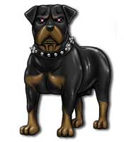 |
Questo incantesimo permette al Summoner di chiamare al suo comando un cane. Le caratteristiche del cane richiamato potranno variare a seconda del livello di lancio della magia. Se la magia è lanciata dal 1° al 4° livello di lancio il cane richiamato sarà un Wild Dog [link]. Se la magia è lanciata dal 5° livello di lancio in poi il cane richiamato potrà essere un Wild Dog oppure un War Dog [link]. In entrambi i casi il cane si limiterà a combattere per il mago attaccando qualunque bersaglio il mago desideri per tutta la durata della magia che è pari a 6 rounds + 1 round ogni 2 livelli (7 rounds al 1° e 2° livello, 8 rounds al 3° e al 4°, ecc...) o fino alla sua morte. Il componente materiale è un osso di bovino con incise piccole rune della scuola summoning dal valore di 3 g.p. e dal peso di 1/2 libbra per richiamare un Wild Dog, mentre per richiamare un War Dog dovrà essere usato un osso di bovino con incise piccole rune della scuola summoning riempite d'argento fuso dal valore di 6 g.p. e dal peso di 1/2 libbra. In entrambi i casi l'osso si consuma al lancio dell'incantesimo. |
Eldron's Secret Writing (Enchantment)
Range: 0 Components: V, S Duration: Special Casting Time: 1 Area of Effect: One piece of paper Saving Throw: None
Eldron's secret writing allows the wizard to enchant a piece of paper with two key words. The wizard then writes a message on the paper and evokes the first key word, rendering the papers contents illegible even to the writer. The paper remains in this condition until the second key word is spoken, either by the caster or the paper's designated recipient. A comprehend languages will not reveal the nature of the paper. Dispel magic removes the second key word permanently and prevent decryption forever.
Electric Blades (Enchantment)
Range:
Tocco
Components: V, S
Duration: Speciale
Casting Time: 1 round
Area of Effect: Due Armi di Metallo
Saving Throw: None
Quando il mago lancia questo incantesimo deve toccare due armi di acciaio o di metallo dolce utilizzabili in corpo a corpo. In questo modo il mago caricherà tali armi di un potenziale elettrico. Tale potenziale si scaricherà sulla prima vittima che sarà colpita, nel corso del medesimo round, da entrambe le armi. In particolare, appena la vittima sarà colpita dalla seconda arma caricata con questo incantesimo questa sarà investita (al fattore d'iniziativa d'attacco della seconda arma) da una forte scarica elettrica che provocherà 1d6 danni da elettricità magica. Inoltre la vittima dovrà superare un tiro salvezza contro pietrificazione senza alcun modificatore per evitare di restare stordita (stunned) per la restante parte del round. Una volta che le armi hanno scaricato la scossa elettrica l'incantamento svanirà da entrambe. In ogni caso l'incantamento svanirà dopo che sia trascorsa un'ora dal lancio dell'incantesimo.
Electric Field (Enchantment)
Range: Tocco Components: V,S,M Duration: 2 days per level Casting Time: 1 round Area of Effect: 1 item Saving Throw: ½
Questo incantesimo incanta un qualsiasi oggetto in modo tale da renderlo capace di contenere una forte scarica elettrica. Qualora durante l’effetto dell’incantesimo una creatura diversa dal mago tocchi intenzionalmente l’oggetto riceverà una scarica elettrica subendo 2-12 danni più 1 danno per livello del mago dimezzabili con un tiro salvezza effettuato con successo. L’oggetto elettrificato non può pesare più di 10 libbre per livello del mago. Una volta scaricato l’incantesimo perderà ogni effetto. Il componente materiale di questo incantesimo è una gemma di 50 g.p. che si consuma al lancio della magia.
Electric Shield (Enchantment)
Range: Tocco Components: V,S Duration: 1 day Casting Time: 1 round Area of Effect: 1 shield Saving Throw: ½
Questo incantesimo incanta un qualsiasi scudo in modo tale da renderlo capace di contenere una forte scarica elettrica. Qualora durante un combattimento lo scudo viene colpito oppure il possessore effettua con successo un attacco con lo scudo la vittima subirà una forte scarica elettrica subendo 1-8 danni più 1 danno per livello del mago dimezzabili con un tiro salvezza effettuato con successo. Una volta scaricato l’incantesimo sarà terminato e comunque si scaricherà dopo 24 ore dal lancio della magia.
Enchanted Snake (Enchantment)
Range:
Tocco
Components: V,S,M
Duration: 2 rounds + 1 round per level
Casting Time: 3
Area of Effect: 1 snake
Saving Throw: None
Questo incantesimo incanta un serpente di metallo già costruito in modo da renderlo animato così da difendere il mago in battaglia. Il serpente sarà comandato come un una creatura richiamata con una magia della scuola summoning e potrà rispondere solo ai seguenti comandi: attacca, difendi e fermati. Il serpente è fatto di bronzo, lungo 150 cm. ed è costruito in modo tale da essere abbastanza snodato da poter essere arrotolato. Il costo del serpente è di 150 g.p. e pesa 15 libbre. A partire dal round successivo a quello di lancio dell'incantesimo il serpente attaccherà come un mostro da 3 dadi vita di taglia medium (thac0 18 ed iniziativa + 3) avrà 15 punti ferita e con il morso provocherà 1-6 danni. In tale periodo il serpente potrà considerarsi a tutti gli effetti un costruito potendo, però, ridiventare immediatamente un oggetto inanimato qualora sia lanciato sullo stesso con successo una magia di dispel magic. Se ridotto a zero punti ferita si romperà e sarà inutilizzabile per il futuro, se invece sarà solo danneggiato potrà essere riparato al costo di 5 g.p. per punto ferita ed 1 giorno di lavoro presso una qualsiasi fabbro.
Enlarge (Alteration)
Range: 3
metri per livello (max. 30 metri)
Components: V,S,M
Duration: 6 rounds + 1 round/3 livelli
Casting Time: 2
Area of Effect: Una creatura
Saving Throw: None
Questo
incantesimo altera la muscolatura di una creatura potenziandola
significativamente. Deve trattarsi di una creatura umanoide di taglia massima
medium. I muscoli della creatura si ingrosseranno e gonfieranno
permettendo alla creatura di sferrare colpi dalla forza superiore al normale.
Per tutta la durata della magia (6 rounds dal 1° al 2° livello, 7 rounds dal 3°
al 5° livello, 8 rounds dal 6° all'8° livello e così via...), quindi, tutti i danni degli attacchi effettuati
dalla creatura saranno incrementati del 10% per livello di lancio
dell'incantesimo (applicando un arrotondamento comune: per difetto da 0.1 a 0.5;
per eccesso da 0.6 a 0.9) fino ad un massimo del 100% al 10° livello di lancio.
In particolare, saranno potenziati solo gli attacchi ai quali normalmente è
possibile applicare il bonus dovuto alla forza del personaggio (per tale motivo
non saranno incrementati i danni effettuati con le armi da tiro, ad eccezione di
quelli effettuati con archi tarati sulla forza). Si noti, però, che sarà
incrementato solo il danno base prodotto dall'attacco (ivi compreso il bonus
insito nel dado dell'arma) mentre non saranno potenziati gli altri bonus
applicati allo stesso (non si amplificherà, dunque, il danno supplementare
prodotto per la forza, per la fattura dell'arma, per la specializzazione, per
l'incantamento delle armi ed in generale per l'effetto di qualsiasi magia). Per
fare un semplice esempio, se questo incantesimo è lanciato al 6° livello su un
guerriero con 17 di forza (+1 ai danni), maestro nell'uso della spada bastarda
ad una mano (+2 ai danni), che impugna una spada bastarda (1d8+1 danni base) di
fattura superba (+1 ai danni) i danni prodotti saranno così determinati (160%
del danno base + bonus):
Se il guerriero tira 1 sul 1d8+1, avrà effettuato 2 danni base * 160% = 3 (3.2)
+ 4 per i bonus = 7 danni in luogo dei 6 normalmente prodotti.
Se il guerriero tira 2 sul 1d8+1, avrà effettuato 3 danni base * 160% = 5 (4.8)
+ 4 per i bonus = 9 danni in luogo dei 7 normalmente prodotti.
Se il guerriero tira 7 sul 1d8+1, avrà effettuato 8 danni base * 160% = 13
(12.8) + 4 per i bonus = 17 danni in luogo dei 12 normalmente prodotti.
Il componente materiale di questo incantesimo è una manciata di polvere di ferro
che si consuma al lancio della magia (10 dosi di tale polvere pesano 1 libbra e
costano 2 monete d'oro).
Expeditious Retreat (Alteration)
Range: 0
Components: V, S
Duration: 3 rounds + 1 round per level
Casting Time: 1
Area of Effect: The Caster
Saving Throw: None
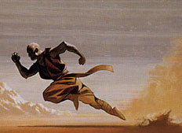 |
Quando il mago lancia questa magia le sue gambe divengono incredibilmente scattanti e pronte alla corsa. Per tutta la durata della magia, quando il mago effettua un movimento superiore ad un mezzo movimento, il suo comune fattore movimento è raddoppiato (se il suo fattore movimento originario era di 8 esagoni questo diviene di 16 esagoni) fino ad un movimento massimo pari a 20 esagoni. Correndo a questa incredibile velocità, inoltre, il mago potrà, effettuando una rincorsa di almeno 12 metri, saltare orizzontalmente fosse od altri ostacoli lunghi fino a 6 metri. In ogni singolo round di durata della magia, dunque, il mago potrò decidere di effettuare qualsiasi azione restando sul posto o spostandosi di un comune mezzo movimento senza quindi attivare l'incredibile accelerazione che dona l'incantesimo. Qualora, invece, il mago decida di effettuare uno spostamento superiore ad un mezzo movimento la magia si attiverà automaticamente permettendogli di spostarsi fino al doppio delle sue capacità ma il suo corpo sarà così accelerato da impedirgli ogni altra diversa azione nel medesimo round. In altre parole, per attivare l'accelerazione magica il mago dovrà impiegare l'intero round a correre senza poter effettuare altre azioni. Si noti che il mago non potrà ulteriormente incrementare la sua velocità di corsa con altri metodi, siano questi normali (si pensi all'utilizzo della competenza Sprint o Running) che di natura magica. |
Extinguish Jet (Evocation)
Range: 15
metri
Components: V, S
Duration: Istantanea
Casting Time: 3
Area of Effect: 1
small fire or creature
Saving Throw: Special
Con questa magia l’evocatore produce un piccolo getto d’acqua che è in grado di spegnere immediatamente un piccolo fuoco (un fuoco da campo, una torcia accesa e così via). In nessun caso potrà spegnere fuoco alimentato e mantenuto attivo dalla magia (altra cosa è, però, la fiamma sviluppatesi dopo che ci sia stato un fuoco magico la quale al termine della magia che l'ha creata può essere spenta con questo incantesimo). Se l’oggetto infuocato è in possesso di una creatura la stessa potrà evitare l’effetto superando un tiro salvezza contro incantesimi. Il getto d’acqua può ferire le creature che siano composte di sola fiamma (si pensi ad un elementale del fuoco), queste subiranno 2-8 danni dimezzabili superando un tiro salvezza contro incantesimi.
Familiar Death Crow (Necromancy)
Range:
Tocco
Components: V, S, M
Duration: Permanente
Casting Time: 1 giorno
Area of Effect: Un corvo morto
Saving Throw: None
Attraverso un piccolo rituale necromantico il mago anima un corvo che ha precedentemente ucciso con un coltellino rituale. Da quel momento il corvo diviene un famiglio oscuro del necromante che dona vari poteri. Il corvo risponde ai comandi del mago anche se è dotato di una propria intelligenza e lo servirà fedelmente. Il corvo è uno speciale non-morto che ha le seguenti statistiche: AC 6 DV 2 Thac0 19 Attacco 1 becco Danni 1d4, Attacco speciale: se colpisce con 18-20 acceca per 1d4 rounds la vittima (sempre che disponga di organi visivi funzionanti), Int. Semi 4, Size S, Mv. 6, 12 fl. AL LE Xp 60, difese speciali tipiche dei non morti. Può considerarsi avere un punteggio di forza pari a 5. Il mago stabilisce un legame speciale con questo corvo non-morto. Il quale non può allontanarsi in nessun caso a più di 1km. dal mago ed in ogni caso deve poter vedere il mago almeno una volta la giorno. Il mago comunica telepaticamente con il corvo entro la distanza massima di 1 km. e per dare ordini utilizzerà un round. Qualora una di queste condizioni non è rispettata il corvo perirà con tutte le conseguenze previste in questo caso. Quando il corvo si trova entro 10 metri dal mago costui potrà utilizzare alcuni poteri: 1) Il mago può letteralmente succhiare energia negativa dal corvo, durante il lancio di un suo incantesimo. Riceverà un punto magia per ogni due punti ferita sottratti al corvo, che potrà utilizzare nel lancio delle sue magie. Si noti, però che dovrà sempre utilizzare almeno il 50% dei punti propri nel lancio dell’incantesimo. 2) Una volta al giorno, durante un round, il corvo può maledire la vittima di un incantesimo lanciato dal suo padrone, fissandola con occhio secco e gracchiando. La vittima subirà quindi una penalità di –2 al tiro salvezza contro la magia che il mago ha lanciato. Si noti che in questo stesso round il corvo non potrà effettuare alcuna altra azione o movimento. 3) Il mago può utilizzare il corvo come catalizzatore di un proprio incantesimo a tocco. Il corvo deve trovarsi però ad una distanza massima dal mago pari a 100 metri. In questo caso il mago lancerà la magia regolarmente ed il corvo effettuerà l’attacco. Il casting time della magia però si sommerà all’iniziativa dell’attacco del corvo, quindi il mago resterà concentrato fino a che l’attacco del corvo non andrà a segno e l’attacco del corvo sarà posticipato al valore delle iniziative cumulate. Si noti che in un round di combattimento potrà essere usato solo uno dei su menzionati poteri. Qualora il corvo muoia in qualsiasi modo tranne attraverso il rituale successivamente spiegato si spezzerà traumaticamente il legame fra il padrone ed il suo famiglio. A partire dalla fine del round in cui il corvo è morto il mago subirà un’emorragia interna perdendo un punto ferita al round per cinque rounds. Inoltre dovrà superare un tiro salvezza contro raggio della morte oppure 1d3 di questi punti ferita saranno persi permanentemente. Il necromante può decidere di uccidere in modo sicuro il suo famiglio, dovrà effettuare un rituale della durata di un giorno al termine del quale ucciderà il corvo con il pugnale rituale. Per la lunghezza e la complessità delle formule magiche utilizzate, questo incantesimo occupa 2 pagine supplementari sul libro di magia del mago, inoltre lo stesso non può essere validamente scritto su una pergamena dei maghi. I componenti materiali di questa magia sono uno speciale pugnale rituale con lama d’avorio dal peso di 2 libbre e dal costo di 200 g.p. che può essere riutilizzato e candele nere rituali dal valore di 50 g.p. che si consumano ad ogni rituale (sia di creazione che di uccisione del famiglio).
Fascination (Enchantment/Charm)
Range: 10
metri
Components: V, S, M
Duration: 5 rounds per level
Casting Time: 2
Area of Effect: One
person
Saving Throw: Negates
Questa magia può essere lanciata esclusivamente su creature che possono definirsi persone. Il termine persona indica ogni bipede umano, semi-umano o umanoide di taglia media od inferiore ad esclusione delle creature originarie di altri piani dimensionali (si pensi ai demoni ed alle altre creature planari). Quando il mago lancia questa magia su una persona la stessa deve superare un tiro salvezza contro incantesimi mentali. Se il tiro salvezza fallisce la creatura interromperà ogni sua ulteriore azione nel round in corso ed a partire dal round successivo, inizierà a seguire, totalmente affascinata, chi ha lanciato questa magia nel tentativo di raggiungerla (in corpo a corpo). La vittima cercherà di muoversi del suo normale fattore movimento senza poter effettuare alcuna altra azione ed effettuando il percorso più breve verso il mago tenendo presente che la vittima, in ogni caso, aggirerà ostacoli pericolosi (si noti che il rischio di subire attacchi da creature presenti sul percorso non costituisce di per sé un ostacolo da aggirare per la vittima). Tale comportamento perdurerà fino alla fine dell'incantesimo o fino al verificarsi di un atto interruttivo. La magia è interrotta alla fine del round nel quale si verifica uno dei seguenti casi: 1) La vittima raggiunge chi ha lanciato questo incantesimo; 2) La vittima subisce un attacco, un danno od una altra qualsiasi azione ostile da chiunque proveniente; 3) Il mago che ha lanciato questa magia sparisce per un intero round dalla vista della vittima; 4) Il mago che ha lanciato questa magia e la vittima si trovano alla fine di uno qualsiasi dei round di durata a 24 o più metri di distanza; 5) La vittima si trova in condizioni di non essere in grado di avvicinarsi al mago, anche per un solo round, in modo assoluto (si pensi alla presenza di una barriera di forza, o ad una magia in grado di bloccare la vittima) o senza subire danni alla propria persona (si pensi al superamento di un campo di rovi o di un muro infuocato), parimenti se la creatura si rende conto di subire un grave rischio di subire danni alla sua persona nell'attraversamento del percorso che lo separa dal mago. Il componente materiale di questo incantesimo è un frammento di magnetite dal peso di 1/10 di libbra e dal costo di 5 g.p. che si consuma al lancio della magia.
Feather Fall (Alteration)
Range: 30
metri
Components: V
Duration: Speciale
Casting Time: 1
Area of Effect:
One creature
Saving Throw: None
Quando questo incantesimo viene lanciato su una creatura lo stesso si attiverà immediatamente appena la stessa effettui un qualsiasi tipo di caduta libera nel vuoto. Quando questa circostanza si verifica la magia rallenterà notevolmente la caduta facendo scendere la creatura ad una velocità di 9 metri al round, una velocità tale per cui quando la vittima toccherà il suolo la stessa non subirà alcun danno da caduta (impatto). Si noti che il peso e la massa della creatura resteranno invariate durante l'effetto di questa magia. Una volta attivatasi la magia terminerà solo quando la creatura toccherà il suolo od un'altra superficie solida in grado di sorreggerla. Si noti che forme di propulsione magica attive come ad esempio l'incantesimo Fly o Levitate impediranno alla magia di attivarsi. Qualora la magia non si attivi la stessa terminerà ugualmente una volta che sia trascorsa un'ora dal momento di lancio della stessa.
Fellstar's Flame Finger (Alteration)
Range: 9
metri
Components: V, S
Duration: Instantaneous
Casting Time: 2
Area of Effect:
One creature
Saving Throw: ½
Quando il mago lancia questa magia evoca dal piano dimensionale interno del fuoco una fiamma che poi altera utilizzando la formula magica della scuola di alterazione in modo tale da farla divampare violentemente ed investire una creatura dallo stesso selezionata che si trovi ad una distanza massima di 9 metri. La creatura coinvolta sarà quindi investita dalla fiammatta e subirà 1d10 danni da fuoco magico +1 danno per ogni livello di lancio della magia fino ad un massimo di 1d10+10 danni al 10° livello di lancio. La vittima dell'incantesimo potrà superare un tiro salvezza contro incantesimi per dimezzare i danni subiti.
Fire Spheres (Evocation Fire)
Range: 12
metri + 3 metri per livello oltre il 1° (max. 30 m. al 7°)
Components: V, S
Duration: Instantaneous
Casting Time: 3
Area of
Effect: One or more creature
Saving Throw: ½
Quando questa magia viene lanciata l’evocatore fa partire 1 piccola sfera di fuoco e fiamme + 1 sfera supplementare ogni 3 livelli di lancio oltre il primo (1 al 1° livello, 2 al 4° livello, 3 al 7° livello, ecc…) fino ad un massimo di 5 sfere al 13° livello di lancio. Le sfere possono essere indirizzate contro qualsiasi bersaglio in un arco di 180° davanti il mago che si trovino entro il raggio della magia. Ogni sfera provoca 1d6 + 3 danni da fuoco, che possono essere dimezzati con un tiro salvezza contro incantesimi modificato dalla destrezza, per ogni sfera occorre un diverso tiro salvezza.
Flash (Evocation)
Range: 12 yards Components: V Duration: 3 rounds Casting Time: 1 Area of Effect: One creature Saving Throw: Negates
Victim failing his saving throw is blinded for the next round due to a flash of light that appears in their eyes. All to hit rolls for the next two rounds are made at -2 due to spots in their eyes.
Flicker (Illusion/Phantasm)
Range: 60 yards + 10 yards per level Components: V, M Duration: Instantaneous Casting Time: 1 Area of Effect: One creature or object Saving Throw: Special
When this spell is cast, the target creature or object undergoes a momentary flickering or blurring. This flickering is not automatically noticed by observers and all creatures viewing the target must make a saving throw versus spell. Those who make the saving throw fail to notice the flicker and are unaffected by the spell. Those who fail, however, must immediately make an illusion disbelief roll with a +4 modifier. Those passing this second saving throw think that the target is probably illusionary and will react accordingly. For example, those seeing a rolling boulder flicker might not move out of the way, suffering full damage, or may ignore the illusionary thief circling them for a backstab. While the flicker itself lasts for but a moment, the belief that the target is an illusion persists, until it behaves in a way that is evidentially non illusory, such as supporting weight or causing damage. This instantly reveals the true nature of the target, but any damage done in this manner cannot be saved against. The target of the flicker must be a creature or object which could fit in a 30 foot cube. Thus a castle or a great wyrm dragon could not be flickered while a small tower or an ogre could be affected. Any one target, up to the area of effect restrictions, including (but not limited to) bonfires, pits, monsters, and walls can be affected. The spell cannot be used to affect purely magical effects such as a wall of force or spells with an instantaneous duration, such as fireball. It does work on real objects or creatures summoned or created by magic, however. Individuals that know or suspect that an illusionist is present, or have recently encountered illusion magic, suffer a -2 penalty to their initial saving throw versus the flicker. The material component for this spell is a small lump of candle wax.
Fools (Alteration)
Range: 0 Components: S Duration: Special Casting Time: 1 Area of Effect: Special Saving Throw: None
A wizard can cast fools prior to casting any other spell in a given round; it costs the caster a +1 to initiative. When the spell's power is called upon, it makes the next spell cast by the wizard appear to be another spell. An example: a wizard casts fools followed by domination in a court of law. Since other wizards are watching, he makes domination look like comprehend languages. Only spell tell, or other dedicated divinatory methods (detect lie) can detect the use of the fools spell.
Force Bolt (Evocation)
Range: 3 yards +
3 yards per level
Components: V, S
Duration: Instantaneous
Casting
Time: 1
Area of Effect: One creature or object
Saving Throw: None
Questa magia crea una sfera di aria compressa che, ad altissima velocità, parte dalle mani del mago e vola verso il bersaglio desiderato colpendolo. Se usata per attaccare una creatura questa magia provoca alla stessa 1d6 danni da botta. Questa magia, inoltre, può essere utilizzata contro oggetti fisici, essendo in grado di provocare danni strutturali ad oggetti che non siano interamente di ferro o di pietra dura. Se usata contro una porta (che non sia interamente costruita in ferro o pietra), il mago può decidere se provocare alla stessa danni strutturali oppure se provare a sfondarla con la forza della botta (in questo caso si consideri che la sfera effettuerà un tentativo di sfondare porte come se avesse forza 18/00, ossia avendo possibilità da 1 a 16 su 1d20 di sfondare porte comuni e da 1 a 6 su 1d20 di sfondare porte sbarrate o chiuse magicamente).
Freeze (Alteration)
Range: 30 feet Components: V, S Duration: Instantaneous Casting Time: 1 Area of Effect: 8 cubic feet per level (2´2´2 feet cube) Saving Throw: None
This
spell instantly freezes a quantity of water in any shape the wizard desires. If
a living creature has any part of it inside the area of effect, it can make a
saving throw versus paralysation (with a +4 bonus) to escape, or be stuck in the
ice. The ice is non magical and can be affected normally.
Friendspeak
(Alteration)
Range: 10 feet Components: V Duration: 1 round Casting Time: 1 Area of Effect: One creature Saving Throw: None
This spell allows the caster to speak with one person at a time completely understandable by subvocalizing (whispering under your breath) the message. Who she is talking to can be changed, as long as all of the talking takes place within the one minute time limit. I recommend that DMs actually time the message to one minute. This will eliminate hassles about whether or not there is enough time or not to say something (like "the solution is...").
Frost Touch (Evocation)
Range: Tocco
Components: V, S
Duration: 1 round per livello (max. 9 round)
Casting
Time: 3
Area of Effect: The caster
Saving Throw: 1/2
Quando il mago lancia
questo incantesimo la sua mano viene circondata da un gelido alone di colore
bluastro. Qualora, nel corso della durata della magia, il mago tocca con la mano
una qualsiasi creatura quest'ultima sarà pervasa da freddo proveniente dal piano
materiale dei ghiacci e subirà 1d6 danni da freddo magico + 1 danno
supplementare per livello di lancio della magia fino ad un massimo di 1d6+9
danni al 9° livello di lancio. La vittima ha diritto a superare un tiro salvezza
su magia per dimezzare il danno subito. Le azioni di attacco con questa magia si
considereranno effettuate ad un fattore iniziativa pari a +3. La magia terminerà non appena il mago avrà
colpito la prima creatura o sarà decorso il suo termine di durata.
Geyser
(Evocation Water)
Range: 3 metri per livello Components: V, S Duration: Special Casting Time: 4 Area of Effect: One creature Saving Throw: Special
Quando il mago lancia questa magia da sotto le gambe della vittima parte un getto geyser di acqua bollente ad altissima pressione verso l’alto. La vittima subisce 2d4 danni da calore (creature immuni al calore dell’acqua bollente non subiscono questi danni come i non morti e i costruiti) e se non supera un tiro salvezza contro incantesimi viene spinta in aria ad un’altezza pari a 3 metri ogni 4 livelli di lancio della magia (3 metri al 1° livello, 6 metri al 4° livello, 9 metri all’8° livello, ecc…) fino ad un massimo di 12 metri al 12° livello di lancio. La creatura raggiungerà la massima altezza del geyser alla fine del round di lancio della magia e il geyser sparirà all’inizio del round successivo nel quale la vittima cadrà al suolo provocandosi 1-6 danni da impatto per ogni 3 metri di caduta e risulterà knockdown. Questa magia può essere lanciata anche su creature Huge o Gargantuan ma in questi casi non sarà in grado di trasportarle in aria. Se la vittima durante l’ascesa incontra un soffitto o una superficie solida sbatterà sulla stessa (arrestandosi a quell’altezza dalla quale poi cadrà) e subirà 1d8 danni da impatto ulteriori.
Gem Access (Divination)
Range: Tocco
Components: V, S
Duration: 8 ore
Casting Time: 1 round
Area of
Effect: Gemma del Sapere
Saving Throw: None
|
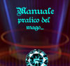 |
Questo incantesimo è utilizzato dagli utenti di magia per accedere al contenuto scritto in una Gemma del Sapere (oggetto magico minore) attraverso la magia Gem Write (3° livello di potere, scuola Enchantment [link]). Quando il mago lancia questo incantesimo costui, infatti, potrà accedere alle informazioni scritte in una Gemma del Sapere per tutto il tempo che ritiene necessario fino ad un massimo di 8 ore. In particolare, quando questa magia è lanciata su una Gemma del Sapere contenente informazioni scritte le stesse compariranno con una sorta di proiezione olografica luminosa fluttuando nell'aria sopra la stessa. Ovviamente le scritte compariranno nella lingua utilizzata al momento in cui le stesse sono state inserite nella gemma (se, quindi, sono state inserite formule magiche le stesse dovranno essere decifrate utilizzando un incantesimo di Read Magic). Il mago potrà scorrere le pagine scritte nella gemma semplicemente toccandola ed inviando il relativo impulso mentale. Per tutta la durata dell'incantesimo, dunque, il mago potrà liberamente avere accesso alle informazioni scritte contenute nella gemma senza necessità di utilizzare nuovamente la magia. Parimenti, utilizzando lo stesso metodo, il mago potrà far sparire le immagini proiettate o farle riapparire a piacimento. Creature diverse dal mago potranno leggere le frasi che appaiono proiettate dall'incantesimo ma non potranno farle sparire né farle scorrere cambiando le pagine scritte nella gemma. |
Gemstone of Explosion (Enchantment)
Range: Tocco
Components: V, S, M
Duration: Speciale
Casting Time: 1 round
Area of
Effect: One gem
Saving Throw: 1/2
Questa magia è di tradizione gnomica Svirfneblin. Questo incantesimo può essere lanciato solo su una qualsiasi gemma di tipo citrino (valore base a carato pari a 5 g.p.). Quando il mago lancia questa magia costui riesce a catalizzare l'aura magica di tipo esplosivo della gemma. La gemma esploderà, dunque, alla fine del round successivo a quello di lancio distruggendosi. L'esplosione coinvolge un'area sferica di 9 metri di diametro che viene investita dalle fiamme. Tutti coloro si trovano all'interno dell'area dell'esplosione subiscono 1d6 danni da fuoco magico + 1 danno ulteriore ogni 5 g.p. di valore della gemma fino ad un massimo di 1d6+10 danni per una gemma di valore pari o superiore a 50 g.p.. Le vittime potranno superare un tiro salvezza su riflessi per dimezzare il danno subito. Il componente materiale è rappresentato dalla gemma che deve essere incantata.
Gizmo's Sticky (Alteration)
Range: 0 Components: V, S Duration: 1 turn + 1 round per level Casting Time: 1 round Area of Effect: The caster Saving Throw: None
This spell makes the caster's hands very sticky, like being dunked in honey and let dry. This stickiness will add a +10% to climbing percentages and a +15% to pick pockets skills (this is added to thieves only, it does not convey the ability to pick pockets). The spell can be activated and deactivated through out the duration of the spell. Uses for this spell include picking up powders, palming small objects, and better grips on weapons.
Globe of Water (Evocation)
Range: 5 metri per livello Components: V, S Duration: Istantanea Casting Time: 3 Area of Effect: 1 creatura Saving Throw: Special
Con questa magia l’evocatore produce una sfera d’acqua di ½ metro di diametro che colpirà ad elevata velocità la creatura avversaria nel raggio d’effetto. La vittima subirà 1-4 danni da impatto, inoltre se la vittima è di dimensioni Large o minori dovrà anche superare un tiro salvezza contro paralisi per non cadere a terra (knockdown).
Globes of Fire (Evocation)
Range: 6 metri + 3 metri
per livello oltre il primo (max. 30 metri al 9°)
Components: V, S
Duration: Instantaneous
Casting Time: 2
Area of
Effect: One or more creatures
Saving Throw: Negates
Dalle mani del mago parte un globo fiammeggiante ogni due livelli di lancio (1 globo al 1° e 2° livello, 2 globi al 3° e 4° livello, ecc…) fino ad un massimo di 5 globi al 9° livello di lancio. Questi globi infuocati possono essere diritte contro qualsiasi bersaglio si trovi nell’arco di vista frontale del mago. Ogni creatura potrà effettuare un tiro salvezza su riflessi per ogni singola sfera al fine di evitarla. Ogni sfera che non sarà stata evitata provocherà alla vittima 1d6+1 danni da fuoco magico.
Glow (Alteration)
Range: 2 feet per level Components: V, S, M Duration: 1 hour per level Casting Time: 5 Area of Effect: One creature Saving Throw: Negates
This spell causes the object or person affected to emit an eerie glow. The color ranges from blue to green. It cannot be dispelled but it can be negated by a darkness spell. The saving throw is made at +1 per level (or Hit Die) of the victim, but at a -1 per level of the wizard. The glow is not bright enough to read by, but is easy to spot in the dark. The material components of this spell are some fireflies.
Grease (Conjuration)
Range: 12 metri
Components: V, S, M
Duration: 3 rounds + 1 round per livello (max. 10 rounds)
Casting Time: 2
Area of
Effect: Special
Saving Throw: Special
|
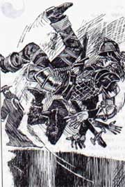 |
Attraverso questo incantesimo il mago richiama ad esistenza una spessa patina di
grasso, olio ed altre sostanze scivolose. Questa magia può essere lanciata in
due diverse modalità: |
Guilda's Treacherous Tripwire (Enchant.)
Range: 0 Components: V, S, M Duration: 3 rounds + 1 round per level Casting Time: 1 Area of Effect: Tripwire touched Saving Throw: Negates
One wire (up to 10 feet long) can be stretched across a hall, or such. The wire becomes camouflaged - undetectable without find traps. The first creature to attempt to pass must save versus rod, staff or wand (adding its Dexterity defensive adjustment) or be caught when the wire springs free. The wire will twine tightly about the ankles of its victim, tripping him. It must then be tediously untangled (or sawed loose) which takes at least 30 seconds under ideal conditions. If hacked loose in combat, it will take 1 round, and the victim will take 1d4 points of damage unless an enchanted blade is used (which will cut without effort). Note that the wire is required, but not consumed. The material component is a small spring.
Hallucinatory Steps (Illusion/Phantasm)
Range: 10 feet Components: S Duration: 2d6 rounds + 1 round per level Casting Time: 1 turn Area of Effect: One creature Saving Throw: Negates
This spell, when cast, will cause the affected person to keep thinking there is a just one more step (or stair) in front of them, you know, like when you go up 10 flights and start forgetting you have got to a landing and take that extra step. It reduces movement rate by 5% and is extremely annoying. This effect happens, even when the affected person is walking on flat ground.
Harbald's Fire Arrow (Enchantment)
Range: 0 Components: S, M Duration: 1 hour per level Casting Time: 1 Area of Effect: One arrow Saving Throw: None
When cast on an arrow, this spell enables that arrow to ignite itself as soon as it's in free flight (shot, thrown, fallen, etc.). As soon as nothing is in touch with the arrow any more, it will spring to fire and act like a normal burning arrow. The arrow radiates light in a 30 foot radius, just like a torch does. But when it hits a target, it delivers damage as an arrow, +1 due to the fire. After the arrow ignite, it will burn for 10 rounds, setting fire to all combustible materials which come into contact with the arrow, unless the fire is extinguished. After the arrow is used, it is completely burned up. If it was extinguished, it will disappear. If the arrow wasn't used, it will become an ordinary arrow after the spell's duration expires. The fire is not magical and the arrow does not count as a +1 weapon when fighting against creatures that can only be hit with a +1 or better weapon. The material components for this spell are the arrow and a bit of sulphur to be applied to the arrow.
Heat Mist (Evocation Smoke)
Range: 21
metri
Components: V, S, M
Duration: 3 rounds + 1 round ogni 2 livelli oltre il primo
Casting Time: 4
Area of Effect:
5 sfere da 3 metri di diametro + una sfera per livello
Saving Throw: None
Quando il mago lancia questo incantesimo una nube di fumo ardente si espande nell'area d'effetto. L'area dall'incantesimo corrisponde ad un numero di sfere (esagoni) di 3 metri di diametro corrispondenti al livello di lancio della magia più cinque. Il mago può disporre queste aree a piacimento purché siano disposte senza soluzione di continuità tra di loro e siano tutte allo stesso livello di altezza dal suolo (non potendosi disporre una sull'altra). Tutte le creature che si trovano, alla fine di ogni round di durata della magia, all'interno dell'area d'effetto subiranno 3 danni da calore ustionandosi per il prolungato contatto con il fumo rovente. Un vento forte od effetti magici assimilabili fanno terminare immediatamente l'incantesimo. Il componente materiale di questo incantesimi sono sali da bagno dal peso di 1/5 di libbra e dal costo di 5 g.p. che si consumano al lancio della magia.
Hesitate (Charm)
Range: 30
metri
Components: V
Duration: 3 rounds + 1 round per level
Casting Time: 2
Area of Effect: One creature
Saving Throw: Negates
Quando il mago lancia questo incantesimo su una creatura avversaria la stessa dovrà superare un tiro salvezza contro incantesimi mentali. Se il tiro salvezza fallisce, a partire dal round successivo e per tutta la sua durata (3 rounds + 1 round per livello di lancio della magia fino ad un massimo di 10 rounds al 7° livello di lancio) la vittima esiterà a prendere le proprie decisioni e dovrà addizionare un malus di 1d6 al proprio tiro sull'iniziativa (il tiro relativo alla penalità deve essere ripetuto ogni round ed effettuato dopo la dichiarazione delle intenzioni). Le creature sotto effetto della magia velocità (haste) o di effetti magici equivalenti sono immuni agli effetti di questo incantesimo.
History (Divination)
Range: 0 Components: V, S, M Duration: Instantaneous Casting Time: 1 turn Area of Effect: One object or place touched (up to 1000 square feet) Saving Throw: None
This spell allows the wizard to "tune in" to the psychic impressions left on an object or small area. This power gives the wizard the ability to divine hidden purposes, prior owners, secret compartments, and powerful alignment bends. The spell will not identify a magic item per se, but would for instance tell the wizard that the ordinary looking golden ring he holds is in fact the signet ring of a long deceased noble house. Further, use of the history spell doubles the chance that the value of an antique or relic will be correctly guessed. This spell is usually used on non magical plunder, books, and items sold at auctions (to verify claims made about their antiquity). Although the casting time is long, it is unobtrusive, and only a single touch is required to make the spell work. The material component for this spell is a page from an encyclopedia.
Holding Sight (Charm)
Range: 0
Components: V, S
Duration: 3 rounds + 1 round/2 livelli
Casting Time: 1 round
Area of
Effect: The Caster
Saving Throw: Special
Quando il mago lancia questo incantesimo su se stesso i propri occhi acquisiscono un potere magico ipnotico. Per tale motivo, a partire dal round successivo a quello di lancio e per tutta la durata della magia (3 rounds al primo livello di lancio, 4 rounds al 2° ed al 3° livello di lancio, 5 rounds al 4° e 5° livello di lancio, e così via) il mago potrà indirizzare il proprio sguardo su una singola creatura che si trovi entro 9 metri di distanza dallo stesso e che abbia al massimo 6 dadi vita/livelli (indipendentemente dagli eventuali bonus di costituzione dalla stessa posseduti). Quest'azione si considera un'azione complessa che si svolge ad un fattore iniziativa pari a +1 e può essere effettuata anche dopo un mezzo movimento non essendo necessario il mantenimento della concentrazione. Quando ciò accade, la vittima deve superare un tiro salvezza contro incantesimi mentali o terminare immediatamente ogni azione che stava compiendo nel round in corso. La vittima, però, non subirà alcuna penalità alla propria classe armatura ed ai propri tiri salvezza in quanto costei potrà continuare a difendersi passivamente. Il round successivo, la vittima sarà libera di agire ed il mago potrà nuovamente provare ad utilizzare il potere dello sguardo sulla stessa (che avrà diritto ad un nuovo tiro salvezza) o su una diversa creatura. Si noti che, affinché questo incantesimo abbia effetto, occorre che il mago incroci il proprio sguardo con quello della vittima, per tale motivo, lo sguardo non avrà alcun effetto su creature cieche, accecate oppure prive di organi visivi.
Holy Symbol Enchanter (Enchantment)
Range:
Tocco
Components: V, S, M
Duration: Speciale
Casting Time: 1 ora
Area of
Effect: Un simbolo sacro
Saving Throw: None
Questa magia incanta un simbolo sacro di un chierico in modo tale da contenere una magia clericale. Una volta che il simbolo sacro è stato incantato, un qualsiasi chierico, della stessa divinità del simbolo, potrà lanciare su questo un proprio incantesimo di primo livello di potere (utilizzando i necessari componenti materiali). Da questo momento in poi, esclusivamente costui potrà utilizzare il simbolo sacro per produrre l’effetto della magia desiderata (dovrà lanciare la magia attraverso il simbolo senza dover, però, utilizzare i componenti materiali che ha già usato in precedenza a meno che siano componenti materiali che non si consumano, in tal caso costui dovrà poterli utilizzare al momento del lancio dell'incantesimo). Una volta scaricato l'incantesimo il simbolo ritornerà normale e potrà essere nuovamente incantato. Prima che l'incantesimo sia stata utilizzato il medesimo chierico non può lanciare altri incantesimi sullo stesso o su un diverso simbolo sacro che sia stato incantato con questa magia. Il componente materiale è una manciata di polvere di argento purissima dal valore di 15 g.p. che si consuma al momento del lancio dell'incantesimo. Si noti ogni moneta d'oro di valore di questa polvere ha un peso pari a 0.005 libbre.
Holy Symbol Improver (Enchantment)
Range:
Tocco
Components: V, S, M
Duration: Speciale
Casting Time: 1 round
Area of
Effect: Un simbolo sacro
Saving Throw: None
Questa magia incanta un simbolo sacro di un chierico in modo tale da potenziare la sua capacità di scacciare o di controllare i non morti. Una volta che il simbolo sacro è stato incantato, il chierico che lo utilizzerà in un qualsiasi tentativo di scacciare o di dominare i non morti riceverà costantemente un bonus di +1 al potenziale intrinseco dello scaccio. La magia terminerà al raggiungimento del successivo flusso di energia della divinità il cui simbolo sacro è stato incantato. Il componente materiale è una manciata di polvere di argento purissima dal valore di 5 g.p. che si consuma al momento del lancio dell'incantesimo. Si noti ogni moneta d'oro di valore di questa polvere ha un peso pari a 0.005 libbre.
Human Torch (Abjuration)
Range: 0
Components: V, S, M
Duration: 2 rounds + 1 round per lvl.
Casting Time: 4
Area of Effect: The caster
Saving Throw: None
Quando il mago lancia questo incantesimo intorno al suo corpo divampa un vortice infuocato che lo circonda completamente. Le fiamme non danneggiano il mago ed il suo equipaggiamento né lo infastidiscono in alcun modo. Alla fine di ogni round di durata dell'incantesimo, però, tutti coloro si trovano in una qualsiasi posizione in corpo a corpo (melee) con il mago subiranno 1d6 danni da fuoco magico. Si noti, inoltre, che le formule magiche della scuola abjuration tengono sotto completo controllo le fiamme per cui le stesse non potranno in alcun modo appiccare il fuoco intorno al mago. Se, per qualsiasi motivo, il corpo del mago finisce immerso nell'acqua o in altro modo totalmente bagnato la magia terminerà immediatamente. Il componente materiale di questo incantesimo è una torcia accesa che il mago utilizza come per darsi fuoco.
Ice Crack (Alteration)
Range: 30 feet Components: V, S, M Duration: Permanent Casting Time: 1 Area of Effect: One cubic yard of ice per level Saving Throw: None
This spell causes a volume of ice to crack and chip away. This spell starts at the point closest to the caster, and chips one cubic yard every half round. Note that the pieces remaining can be rather sharp. The wizard can also use this spell to loosen densely packed snow into powdery snow. The spell will affect one five foot cube of snow per level, each cube taking half a round to loosen. If used against an ice based creature (para elemental), it will do 1d3+1 points of damage per level of the caster, save for half (duration instantaneous). Note that a non solid snow based creature would take only 1 point of damage per level, save for half. Cold related creatures (white puddings, white dragons, etc.) take no damage from this spell. The material component is a hand sized ice pick, which must have a metal head, which is unharmed by the casting of this spell.
Ice Shards (Conjuration)
Range: 18 metri
Components: V, S
Duration: Istantanea
Casting Time: 3
Area of Effect: Una creatura
Saving Throw: Speciale
|
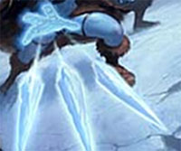 |
Quando il mago lancia questo incantesimo costui evoca ad esistenza schegge di ghiaccio appuntite che scaglierà conto un avversario selezionato. In particolare, il mago evoca ad esistenza una scheggia al primo livello di esperienza più una scheggia ulteriore due livelli di esperienza oltre al primo (1 scheggia al 1° ed al 2° livello di lancio, 2 schegge al 3° ed al 4° livello di lancio, e così via...) fino ad un massimo di 5 schegge a partire dal 9° livello di lancio. Tutte le schegge, dunque, voleranno contro l'avversario selezionato il quale potrà cercare di evitarle superando un tiro salvezza su riflessi. Ogni scheggia richiederà un autonomo tiro salvezza per essere evitata. Ad ogni tiro salvezza fallito la vittima sarà colpita da una scheggia di ghiaccio subendo 1d3 comuni danni da punta ed 1 danno da freddo non magico. Si consideri che non essendo le schegge di natura magica le stesse saranno considerate a tutti gli effetti alla stregua di comuni proiettili (ad esempio, quindi, le stesse saranno fermate dalle abilità o dalle magie che conferiscono immunità ai comuni proiettili). |
Identify (Divination)
Range:
Tocco
Components: V, S, M
Duration: Istantanea
Casting Time: 8 hours
Area of Effect: Un oggetto magico
Saving Throw: None
Attraverso questo incantesimo il divinatore sottopone ad identificazione un oggetto magico al fine di scoprirne le caratteristiche ed i poteri. Si tratta di un lento processo magico, il mago impiega delle ore a purificare l'oggetto ed ad isolare l'aura magica che lo stesso irradia. Il procedimento dura 8 ore e qualora, per qualsiasi motivo, il mago sia costretto ad interrompere il lancio della magia dovrà ripetere il lancio dello stesso un altro giorno. Per lanciare questa magia il mago catalizza tutte la sua energia stancandosi così tanto da non essere in grado di lanciare altri incantesimi nel resto della giornata (ciò avviene anche qualora il mago interrompa il lancio della magia subito dopo averla iniziata). Al termine del lancio della magia il mago avrà una possibilità di identificare l'oggetto magico pari al 10% per livello di lancio dell'incantesimo fino ad una possibilità massima del 90%, se però l'incantesimo è lanciato per identificare un oggetto incantato solo con un minor enchantment il mago otterrà un bonus del +5% alla prova (si tenga presente che un risultato da 96 a 100 % darà sempre luogo ad un fallimento critico). Se questo tiro ha successo il mago avrà identificato l'oggetto magico con successo comprendendone poteri e funzioni. Qualora l'oggetto magico disponga di cariche, l'identificazione non renderà noto l'esatto numero di cariche possedute dall'oggetto ma l'ammontare massimo di cariche possibili ed il potere residuo incanalato nell'oggetto come previsto dal seguente schema: potente (80% o più delle cariche residue); forte (dal 60 al 79% delle cariche residue); moderato (dal 40 al 59% delle cariche residue); debole (dal 10 al 39% delle cariche residue); scarico (meno del 10% delle cariche residue). Questo incantesimo non funziona sugli artefatti. Il componente materiale di questo incantesimo è polvere di opale naturale dal valore di almeno 100 g.p., se però l'incantesimo è lanciato per identificare un oggetto incantato solo con un minor enchantment il componente materiale sarà polvere di opale naturale dal valore di almeno 25 g.p. (25 g.p. di questa polvere hanno un peso pari ad 1/10 di libbra.
Imbue with Touch (Enchantment)
Range:
Tocco
Components: V, S, M
Duration: Speciale
Casting Time: 1 round
Area of
Effect: Un'arma da corpo a corpo
Saving Throw: None
Questo incantesimo permette di infondere energia magica in una qualsiasi arma da corpo a corpo che non sia magica né in altro modo incantata. In particolare, la magia permetterà di caricare l'arma con il potenziale magico di un qualsiasi incantesimo a tocco sia conosciuto dal mago che ha lanciato questa magia e sia in grado di produrre effetti sulle creature (sono esclusi quindi tutti gli incantesimi che hanno effetto sugli oggetti) dei primi tre livelli di potere che abbia, altresì, un casting time massimo pari ad un round. Dopo aver lanciato questo incantesimo sull’arma, il mago potrà, quindi, caricare la stessa con un incantesimo rispondente ai suddetti requisiti lanciandolo a sua volta sull'arma nel corso del round immediatamente successivo (utilizzando i componenti materiali richiesti). Una volta caricata l’arma conserverà per tempo indefinito la sua carica magica fino a che colui che la utilizza in combattimento deciderà di attivare l’incantesimo. In particolare, quando chi impugna l'arma colpisce in corpo a corpo una qualsiasi creatura (è necessario riuscire in un tiro per colpire) costui potrà attivare l'incantesimo caricato sull'arma (si considera una free action ad attivazione mentale). La vittima dell'attacco, quindi subirà gli effetti dell'incantesimo caricato sull'arma come se fosse stato lanciato da chi l'ha usata. La magia caricata si considererà lanciata ad un livello di lancio pari al livello di esperienza del mago che l'ha caricata fino ad un massimo del 5° livello di lancio. Una volta attivata la magia svanirà immediatamente, ciò anche qualora l'incantesimo caricato sull'arma abbia una durata superiore all'istantanea. Il componente materiale è composto da una manciata polvere d’argento purissima, dal valore di 10 g.p. e dal peso di 0,1 libbra, per fa contenere magie di 1° livello di potere, dal valore di 30 g.p. e dal peso di 0,1 libbra, per fa contenere magie di 2° livello di potere, polvere di platino purissimo, dal valore di 80 g.p. e dal peso di 0,1 libbra, per far contenere incantesimi di 3° livello di potere.
Improved Clean (Alteration)
Range: 0 Components: V, S, M Duration: Instantaneous Casting Time: 4 Area of Effect: Creature touched Saving Throw: Negates
When cast, the recipient is immediately relieved of any dirt or filth from the body and clothes. The skin is softened as if washed by the finest soap and spiced perfumes. The hair is set back to a current fashionable style as envisioned by the wizard. These effects normally last until nature takes its toll upon the recipient. This spell also has a 5% chance per level, applicable once, of cleaning the recipient of any non magical skin disease or parasites. The material components are a small piece of soap and a fairly freshly plucked rose or similar flower.
Improved Sight (Alteration)
Range:
Tocco
Components: V, S, M
Duration: Speciale
Casting Time: 1 round
Area of
Effect: Creature touched
Saving Throw: None
Questo incantesimo permette di rendere la vista di chi lo riceve più acuta. Per tale motivo tutte le prove di osservare effettuate da chi è sotto l'effetto di questa magia ricevono un bonus di +1 al tiro, inoltre la magia permette di annullare un -1 di penalità al tiro per colpire ed un 10% di penalità al lancio degli incantesimi dovuto ad una visibilità non ottimale (ad es. qualora tali penalità siano dovute alla scarsa illuminazione, alla presenza di ostacoli visivi quali una zona di foresta, di nebbia o di fumo, a problemi di vista di chi la riceve). Si noti, però, che questa magia migliora solo la visibilità non permettendo di vedere in zone o condizioni in cui non sarebbe normalmente possibile vedere (ad es. al buio od oltre quattro zone di penalità di foresta). Questo incantesimo può essere lanciato con due diversi componenti materiali, se viene lanciato utilizzando un cerchio di vetro trasparente dal peso di 1/10 di libbra e dal costo di 1 g.p. la magia durerà 2 rounds + 1 round per livello di lancio. Se, invece, la magia viene lanciata utilizzando un quarzo rosa dal peso di 1/10 di libbra e dal valore minimo di 10 g.p. la magia avrà una durata pari ad 1 ora per livello di lancio.
Inaudibility (Illusion/Phantasm)
Range: 0 Components: S, M Duration: 1 turn per level Casting Time: 2 Area of Effect: Creature touched Saving Throw: Negates
By means of this spell, all sounds made by the recipient become inaudible - breathing, talking, walking, and the like. Items on the wizard's person are likewise silenced, but thrown or dropped items may make noise once released. While under the effect of this spell, the affected creature cannot cast any spells with a verbal component. An unwilling victim receives a saving throw against this spell. Unlike a silence spell, inaudibility masks only the sounds made by the recipient or items in his possession, so it provides no defense against sound based attacks such as harpy singing, a horn of blasting, etc. The spell remains in effect until it is magically dispelled, until the wizard or the recipient cancels it, or until its duration has passed; it is not dispelled by the recipient attacking another creature. The spell can only be cancelled by the recipient if the wizard has stated so when the spell was cast. The material component for this spell is a small wad of cotton.
Indaral’s Fluids Identification (Divination)
Range:
Tocco
Components: S, M
Duration: Istantanea
Casting Time: 1 hour
Area of Effect:
1 magical liquid
Saving Throw: None
Questa magia permette al divinatore di identificare con precisione il tipo di magia con cui è stato incantato un liquido magico. Possono essere sottoposti a tale magia le pozioni, i filtri , gli oli e gli altri liquidi magici. Il mago ha una possibilità pari al 10 % per livello di lancio della magia (fino al massimo del 90%) di riuscire ad identificare i precisi effetti del fluido magico, la durata di questi effetti e le eventuali controindicazioni ed effetti indesiderati. Se la pozione magica è un veleno (magico) si comprenderanno anche con precisione i danni che il veleno provocherà qualora utilizzato. La magia non darà alcuna risposta (sebbene sia stata effettivamente lanciata con conseguente dispendio di componenti) se utilizzata su liquidi non magici (anche se si tratta di veleni ecc…), inoltre non aiuterà in alcun modo a conoscere gli ingredienti e la composizione del liquido magico. Il componente materiale di questo incantesimo è una quantità di reagenti speciali di laboratorio per un valore minimo di 20 g.p. (peso 0,2 libbre) che si consumano al momento del lancio.
Ingold's Instant Insanity (Enchantment/Charm)
Range: 0 Components: V, S Duration: 1 round per level Casting Time: 5 Area of Effect: The caster Saving Throw: None
When cast, this spell causes the caster to go completely insane for one round per level. During this time, the caster is incapable of doing anything but babble, giggle, and play with his toes. But also during this time, the caster is completely immune to any spell, power, or force that attempts to mess with his mind: ESP, Charm spells, mind control, unspeakable elder horrors saying "Boo!", and the like have no effect on the character. Afterwards, the character is once again completely normal, but has no recollection of what happened during the period of insanity.
Ink Cloud (Alteration)
Range: 30 yards Components: V, S, M Duration: 2d4 rounds Casting Time: 1 Area of Effect: 20 foot radius Saving Throw: None
Upon casting this spell, the wizard creates an ink cloud in the water, similar to that which an octopus releases. The cloud covers a 20 foot circular area, either at the casters position or at any location within spell range. The ink cloud remains stationary for the duration of the spell, unless cast in moving water (such as a river), where it dissipates in one round. The cloud will block all vision, including infravision. When the spell expires, the ink cloud vanishes. The material component of this spell is the eye of an octopus.
Insolence (Illusion/Phantasm)
Range: 2 yards Components: V, S, M Duration: 1 round per level Casting Time: 1 Area of Effect: One creature Saving Throw: Negates
This spell causes its victim to sound and appear crude, insulting and arrogant, in all that is said or done, to all observers. The victim, however, will not be aware that anything is amiss. While the general meaning of whatever is said will be the same, the illusion causes observers to see and hear a twisted version in which the speaker is so insolent that all reactions are checked at -50%. Additionally, such speech might not be tolerated at all in some situations (for example, automatic dismissal from a king's court, or perhaps even worse...). Even if the target makes his saving throw, the spell will not be noticed (unless the somatic and verbal components of the wizard are seen and recognised). If an observer has reason to believe that something is amiss, he gains a saving throw if an attempt is made to disbelieve. Such a saving throw is made at +4 if the fact that it is an illusion has been communicated. If these saving throws are failed, it still appears real. The material component is a bit of dung or spittle, which is wrapped in the wizard's hand. The hand is then subtly waived at the creature to be affected. The verbal component is a low guttural sound made in the throat.
Jamye's Melodramatic Music (Conj., Ench./Charm)
Range: 10 yards + 10 yards per level Components: V, S, M Duration: 4 rounds + 1 round per level Casting Time: 1 Area of Effect: One intelligent creature Saving Throw: Negates
The spell causes the music to be played whenever the victim performs certain actions; such as entering a room, charging into battle, or making an announcement. The type of music is determined by the wizard. The material components for this spell are a miniature golden horn, mustache wax, a short length of rope, and a lace handkerchief.
Katrine's Kitty Cat (Alteration)
Range: 0 Components: V, S Duration: 1 day Casting Time: 1 round Area of Effect: The caster Saving Throw: None
Quando il mago lancia questo incantesimo si trasforma alla fine del round di lancio in un gatto domestico per un intero giorno, o meno qualora sia dissipato con una magia di dispel magic. Il colore del pelo del gatto sarà simili a quello dei capelli del mago. Il gatto avrà le seguenti caratteristiche: AC 5, DV come i livelli del mago, Thac0 naturale del mago, PF del mago, Attacchi 1 graffiata e 1 morso, Danni 1-2/1, Movimento 9, Size T. Abilità speciali: Muoversi silenziosamente 70%, impone –3 alla sorpresa se attacca senza essere udito, ha sensi acuti ed è sorpreso solo con 1 e 2, è dotato di una visione notturna che gli permette di combattere di notte. Scalare le pareti al 70%. In caso di pericolo può scattare e correre a fattore movimento 18 mantenendo questa velocità per 1d10+1 rounds, potrà effettuare un’altra corsa solo dopo un’ora. Con una rincorsa può saltare e balzare in avanti per 5 metri o in altezza di 2 metri. Attacco speciale: Se colpisce con il graffio può attaccare anche con quello posteriori (un altro attacco simultaneo ad 1d2 danni). Si noti che solo il corpo del mago si trasforma mentre tutti i suoi indumenti ed oggetti indossati restano immutati (cadendo quindi eventualmente a terra). Quando si trasforma il mago mantiene tutte le sue capacità mentali e può anche parlare ma con difficoltà e miagolando. Potrà, quindi, lanciare incantesimi dai soli componenti verbali con una possibilità di fallire pari al 50%
Katrine's Blinding Beauty (Illusion/Phantasm)
Range: 0 Components: V Duration: 1 hour per level Casting Time: 1 round Area of Effect: The caster Saving Throw: None
This spell is a minor illusion affecting small details of appearance, for a better overall image. In game effects, it increases the caster's beauty and, to a small extent, her charm as well. Smiles seem to be lit up, eyes twinkle just a little more, the face seems to have a little more definition, etc. The bonus is normally +2 to Charisma, or +1 to Charisma and +1 to Comeliness if that attribute is used. If the caster has a non weapon proficiency in a visual art (sculpture, painting, etc.), then it is a +3 Charisma in the former case, or +1 Charisma, +2 Comeliness in the latter.
Katrine's Falcon (Alteration)
Range: 0 Components: V, S Duration: 1 day Casting Time: 1 round Area of Effect: The caster Saving Throw: None
Quando il mago lancia questo incantesimo si trasforma alla fine del round di lancio in un falco (falcon) per un intero giorno, o meno qualora sia dissipato con una magia di dispel magic. Il falco avrà le seguenti caratteristiche: AC 5, DV come i livelli del mago, Thac0 naturale del mago, PF del mago, Attacchi 2 artigli ed 1 becco, Danni 1/1/1, Movimento 1, volando 36, Size T. Si noti che solo il corpo del mago si trasforma mentre tutti i suoi indumenti ed oggetti indossati restano immutati (cadendo quindi eventualmente a terra). Quando si trasforma il mago mantiene tutte le sue capacità mentali e può anche parlare ma con difficoltà e stridendo. Potrà, quindi, lanciare incantesimi dai soli componenti verbali con una possibilità di fallire pari al 50%.
Katrine's March (Alteration)
Range:
Tocco
Components: V, S, M
Duration: 1 hour/level
Casting Time: 1 round
Area of Effect:
1 creature
Saving Throw: None
Questa magia fu ideata da Katrine per effettuare lunghe marce senza affaticarsi. La creatura toccata dal mago potrà, per la durata della magia, muoversi del suo normale fattore movimento nonostante risulti ingombrata. Questa magia funziona solo qualora la creatura beneficiaria sia ingombrata al punto tale da vedere normalmente ridurre il suo movimento della metà. Se la creatura ha un ingombro maggiore, la magia non svolge alcun effetto (nonostante continui a perdurare fino al termine della sua durata). Si noti che questa magia non elimina le penalità al combattimento dovute all'ingombro né permette al personaggio di trasportare senza difficoltà oggetti particolarmente ingombranti aiutando il personaggio esclusivamente nel marciare. Siccome, per la durata dell'incantesimo, il personaggio cammina sotto la spinta propulsiva della magia si consideri che lo stesso, nonostante cammini, si trovi in una situazione di comune riposo (come se fosse seduto). Ovviamente questa magia non elimina il naturale bisogno di dormire del personaggio (pari ad 8 ore giornaliere). Il componente materiale di questo incantesimo è uno stivale in argento in miniatura dal peso di 1/2 di libbra e dal costo di 15 monete d'oro che non si consuma al lancio della magia.
Katrine's Pleasure Touch (Charm, Illusion)
Range: 0 Components: V, S Duration: 1 hour Casting Time: 1 Area of Effect: The caster Saving Throw: None
This spell stimulates the pleasure centres of any one person that the caster is in contact with. It is a combination of an illusion of mild pleasure, and an enhancement of pre existing pleasure. It lasts for one hour, but is only active while she is in contact with the person. The illusory pleasure is not very intense, simply a thrill along the appropriate sense, but the enhancement depends on the strength of the initial pleasure. For example, the taste of chocolate, smell of old books in a library, brush of skin on skin, sound of a symphony, or even looking at a sunset. In casting it, the wizard forms a simple pattern with her fingers while muttering arcane words. The spell's target must be willing for the spell to function.
Kazago's Lock Pick (Alteration)
Range: 0 Components: S, M Duration: 1 day Casting Time: 1 round Area of Effect: The caster Saving Throw: None
This spell allows the wizard to pick locks . The wizard's pick pockets chance becomes his open locks chance, and the wizard ability is 5 % per level . This spell is different from both the 2nd level knock spell and the unlock cantrip in that it can possibly affect much more than one lock, and that its effects are far less certain. It is especially useful on fact finding missions where the bard is worried about coming across many locked doors along the way. The wizard follow all the rules of the thief when open the lock ( time , critical fail …) The material components for this spell are a set of thieves' picks and tools, which are not consumed in the casting.
Kiss of Wounding (Conjuration/Summoning)
Range: 0 Components: S Duration: Instantaneous Casting Time: 1 Area of Effect: Creature touched Saving Throw: ½
When a wizard casts this spell, he must kiss the intended victim and the victim must be able to receive a kiss (cannot be in combat). This kiss causes the victim to suffer 1d3 hit points of damage, plus 3 points for each level of experience of the spellcaster, to a maximum of 1d3+20 points.
Know Class (Divination)
Range: 0 Components: V, S Duration: 1 round per level Casting Time: 1 round Area of Effect: One creature or object per round Saving Throw: Negates
This spell enables the caster to know the profession (or class, if there is no real profession) of a creature or object (this applies to magic items that are class specific). Concentration for more than one round will reveal whether the target has more than one class. The caster sees an aura as follows:
Color Class Red Fighter Green Ranger Brown Druid Blue Paladin Silver Wizard* Yellow Priest Grey Monk Black Thief Orange Bard Violet ** * Specialists appear as any other. ** This appears if the target is in an official position of authority (not just party leadership or such).
Every round of concentration, the DM should roll randomly which color appears, if more than one is viable. The same color may appear more than once before all possible colors have been noticed.
Kobold Servant (Summoning)
Range: 3 metri
Components: V, S, M
Duration: 1 hour
Casting Time: 1 round
Area of Effect:
1 creature
Saving Throw:
Special
Questa magia è stata inventata dal Circolo dei Summoner per consentire ai maghi di ottenere un servo che li aiuti nei vari adempimenti che devono effettuare. Quando il mago lancia questa magia di richiamo spazio/temporale, infatti, costui richiama ad esistenza un servo kobold pronto a servirlo. Se, per qualsiasi motivo, il coboldo si troverà alla fine di un qualsiasi round ad una distanza superiore a 30 metri dal mago lo stesso svanirà e la magia fallirà definitivamente. Il kobold avrà le seguenti caratteristiche: AC 7 , DV ½, Iniziativa +3, Move 6, Size Small, Intelligenza (8). Il coboldo si considererà avere un punteggio di forza pari a 6. Il kobold non potrà comunicare con il mago ma si limiterà ad eseguirne gli ordini alla lettera potendo effettuare unicamente attività di tipo manuale non eccessivamente complesse. Il coboldo però non effettuerà alcuna azione di combattimento nonostante il mago impartisca a costui un tale ordine, questi ordini saranno semplicemente ignorati. Un qualsiasi ordine chiaramente suicida per il coboldo avrà l'effetto di farlo svanire facendo terminare la magia definitivamente (ciò che rileverà e la consapevolezza per il coboldo della probabile mortalità dell'ordine). Il componente materiale è una moneta d'oro che simboleggia la paga dell'umanoide e si consuma al lancio della magia.
Korel's Last Word (Alteration)
Range: 10 feet per level Components: V, S Duration: 1 round per level Casting Time: 1 Area of Effect: 5 cm. radius sphere Saving Throw: Negates
Korel the necromancer created this spell as a way to deal with insults in taverns. Being Suloise, dressed in black, and not at all personable tended to draw the hecklers. Unfortunately, there was little for him to do short of killing the person, which would be too much of a nuisance. Thus he made this spell, which is essentially a "silence, 5 cm. radius" spell. Typical use is to cast it on someone's tongue, rendering all articulated speech impossible (spellcasting too), although deep throat moans might still be possible. The victim can still hear, though, a necessity in getting in your last word. The sphere is mobile with the object it was cast upon. The somatic component is a wave of dismissal in the subject's direction, and the verbal component is some phrase like "be quiet", "shut up", or some more colorful version. A successful saving throw against spells completely negates the effect, but the victim will not know that a spell was even cast, due to the innocuous nature of the components. This was specifically designed to prevent secondary insults regarding the failure of the spell ("Hah! Your feeble magics cannot touch me!"). Magic using thieves can also use this spell by casting it on a lock to cover up lock picking noises, while still keeping an ear out for guards' footsteps. Creaking hinges are another good use. It's also a good way to shut up the stupid Intelligence 8 dwarven battlerager in the party, although this may result in a two handed battle axe between the eyes.
Last Image (Divination, Necromancy)
Range: 0 Components: V, S Duration: Instantaneous Casting Time: 1 round Area of Effect: One corpse Saving Throw: None
When the wizard casts this spell, he sees whatever the recipient corpse saw at the very instant of death, with the intent of learning the identity of the murderer, or at least the location of death. If the recipient was killed by a gaze attack, the wizard suffers this attack as well, but with a +4 bonus to his saving throw.
Lesser Confusion (Charm)
Range: 15
metri
Components: V, S
Duration: 1 round + 1 round per livello
Casting Time: 1 round
Area of Effect:
One creature
Saving Throw: Negates
Quando il
mago lancia questo incantesimo la vittima dovrà superare un tiro salvezza su
mente. Se la vittima fallisce il tiro salvezza la stessa sarà
confusa e, a partire dal round successivo, dovrà effettuare, per l'intera durata
dell'incantesimo, un tiro di 1d6 per determinare le proprie azioni. Si consulti
la seguente tabella per determinare all'inizio del round (nella fase delle
intenzioni) l'azione della vittima:
1-2) La vittima potrà agire normalmente.
3-4) La vittima attaccherà la creatura a costei più vicina (se vi sono creature
equidistanti, verificare a sorte quella attaccata).
5-6) La vittima resterà ferma sul posto senza compiere alcuna azione (non subirà
però penalità alla propria classe armatura).
Il tiro per determinare l'azione della vittima dovrà essere ripetuto ogni
singolo round. Si noti che qualora si verifichi il risultato di attacco alla
creatura più vicina (3-4) la vittima effettuerà i suoi attacchi comuni più
lesivi (scegliendo ad es. l'arma che possa provocare più danni) senza però
effettuare attacchi o poteri speciali, senza lanciare incantesimi e senza
utilizzare punti combattimento.
Lessser Fire Blast (Evocation Fire)
Range: 0
Components: V, S
Duration: Istantanea
Casting Time: 2
Area of Effect:
Speciale
Saving Throw: Speciale
Quando il mago lancia questo incantesimo un'esplosione particolarmente dirompente di fuoco si verifica intorno allo stesso in esclusivamente in direzione esterna. Tutte le creature presenti in qualsiasi posizione adiacente (in corpo a corpo) a quella occupata dal mago saranno investite dall'esplosione subendo 3 danni da fuoco + 1 danno ogni due livelli di lancio (3 danni al 1° livello, 4 danni al 2° e 3° livello, 5 danni al 4° e 5° livello, e così via) fino ad un massimo di 7 danni all'8° livello di lancio. Si noti che le creature che per la loro size occupano più di una casella subiranno comunque una volta sola tale danno. Oltre a subire tali danni le vittime di questa magia dovranno superare un tiro salvezza contro raggio della morte per non cadere a terra knockdown. Le creature di taglia Large e quelle che poggiano su quattro o più zampe ottengono un bonus di +2 al tiro salvezza. Le creature di taglia Huge o superiore nonché le creature striscianti non subiscono il secondo effetto della magia.
Lesser Humanoid Servant (Charm)
Range: 30
metri
Components: V, S, M
Duration: Special
Casting Time: 5
Area of Effect: One
humanoid
Saving Throw: Negates
Questo incantesimo permette al mago di controllare una creatura vivente umanoide (non funziona sulle creature umane e sui semi-umani) che abbia massimo 1 dado vita (indipendentemente dai bonus ai punti ferita della stessa) e che non abbia intrapreso gli studi in nessuna classe di personaggio. Umanoidi con intelligenza pari o superiore a genius (17 o maggiore) non possono essere sottoposti a questo incantesimo, mentre quelli con intelligenza Exceptional (15 - 16) otterranno un bonus di + 3 al tiro salvezza, quelle con intelligenza High (13 - 14) otterranno un bonus di + 2 al tiro salvezza, quelle con intelligenza Very (11 - 12) otterranno un bonus di + 1 al tiro salvezza. Una volta sottoposta allo charm la creatura si considererà un servo fedele del mago, e ubbidirà a tutti i suoi comandi ma occorrerà che sia capace di comunicare con il servo in una lingua comune ai due. La durata di questa magia è permanente ma terminerà immediatamente qualora il mago dia alla creatura un comando suicida o contrario alla sua natura, il mago inoltre può terminare a piacere la magia (azione che richiede un round e che richiede che la creatura percepisca l’ordine di scioglimento del mago). Il mago può provare a sottoporre a questa magia una creatura una sola volta indipendentemente dal risultato ottenuto. Questo incantesimo non può essere lanciato su umanoidi evocati con magie della scuola summon o già sottoposti a una magia della scuola charm. Il mago può mantenere simultaneamente sotto servitù un'unica creatura umanoide per ogni versione della magia Humanoid Servant conosciuta. Il componente materiale di questa magia è un ciondolo da ipnosi di argento dal valore di 50 g.p. che si consuma al momento del lancio.
Lesser Invisible Object (Illusion/Phantasm)
Range: 1 yard Components: V, S Duration: 1 turn per level Casting Time: 1 Area of Effect: One object not larger than 3 cube feet per level Saving Throw: None
This spell causes an object to vanish from sight, much like the 2nd level wizard spell invisibility (which affects only creatures). The spell lasts only 2 rounds per level of the wizard or until the wizard wills it to end. For example, a quiver of arrows or a bow could be made invisible and carried, and when desired, a moment's thought could make them appear. Note that not even the wizard can see the invisible object, so if he is to use it most effectively, it may be necessary to make it visible.
Lesser Sectorial Magical Armour
(Enchantment)
Range: Tocco
Components: V, S, M
Duration: 1 day
Casting Time: 1 turn
Area of Effect: Any Armor
Saving Throw: None
Questo
incantesimo permette di incantare una qualsiasi corazza (ad esclusione delle
vesti magiche) come se fosse stata
incantata con un incantamento
settoriale + 1 della scuola Enchantment. In particolare al momento del lancio il
mago dovrà selezionare la singola categoria di creature mostruose contro la
quale l'incantamento sarà applicato.
Le armature incantate con un incantamento settoriale + 1
della scuola Enchantment
forniscono a chi le usa i seguenti vantaggi:
* Questa corazza proteggerà un punto di classe armatura supplementare contro gli
attacchi provenienti da creature appartenenti alla categoria specificata.
* Questo incantamento è abbastanza potente da permettere alla corazza di
ricevere un tiro salvezza contro rottura senza l'applicazione di alcun bonus per
evitare i danni subiti ai punti corazza.
A differenza degli incantamenti generali della scuola Enchantment, questa
tipologia di incantamenti non ridurranno il peso della corazza.
In seguito sono elencate le categorie più comuni utilizzate nella creazione di
incantamenti settoriali.
Non Morti (sono comprese tutte le creature non morte e quelle la cui
essenza si basa comunque sull'energia negativa).
Animali (sono compresi sia gli animali comuni che le versioni giganti
degli stessi).
Costruiti (sono compresi tutte le forme di costruiti, golem, automi ed
altri esseri meccanici).
Demoni (rientrano tutte le forme di creature demoniache extraplanari).
Draghi (rientrano tutte le specie di draghi, dragonet, drakes e
draconici).
Elementali (rientrano tutte le forme di elementali compresi gli
Elemental-Kin ed i Fundamental).
Elfi (sono comprese tutte le razze elfiche quali ad es. elfi alti, elfi
grigi, elfi acquatici, elfi silvani e mezzi-elfi).
Esseri Vegetali (sono comprese le piante ed i funghi carnivori e viventi,
i mostri vegetali come ad es. Treant, Shambling Mound e Myconid).
Giganti (rientrano tutti i giganti ed i titani nonché ogni altro umanoide
di taglia Huge o superiore).
Insettoidi (sono compresi gli insetti, gli aracnidi, i vermi e gli
scorpioni sia comuni che nelle loro versioni giganti degli stessi. Rientrano
nella categoria anche mostri seppure parzialmente insettodi quali ad es. Ankheg,
Drider, Man Scorpion, e Thri-Kreen).
Umani (sono comprese tutte le razze degli umani quali ad es. pergariani,
uomini del nord, areliani, silveriani e sotoniani).
Umanoidi (non rientrano umani e semi-umani ma sono compresi tutti gli
umanoidi di taglia massima Large quali ad es. Goblin, Bugbear, Ogre e Trolls).
L’incantamento durerà 24 ore. Il componente materiale per questo
incantesimo è una manciata di polvere d'argento purissima il cui valore dipende
dalla tipologia della corazza. Le corazze di tessuti richiedono 10 monete d'oro di polvere;
le corazze metalliche snodate richiedono 15 monete d'oro; le corazze
metalliche rigide richiedono 20 monete d'oro di polvere; le corazze metalliche
rigide pesanti richiedono 25 monete d'oro; le corazze di materiali speciali
(ossia tutte quelle create con la competenza Special Armorer) richiedono 30
monete d'oro. Un ammontare di 25 g.p. di polvere pesa 1/10 di
libbra. La polvere si consuma al momento del lancio dell'incantesimo.
Lesser Sectorial Magical Shield
(Enchantment)
Range: Tocco
Components: V, S, M
Duration: 1 day
Casting Time: 1 turn
Area of Effect: Any Shield
Saving Throw: None
Questo
incantesimo permette di incantare una qualsiasi scudo come se fosse stata
incantato con un incantamento
settoriale + 1 della scuola Enchantment. In particolare al momento del lancio il
mago dovrà selezionare la singola categoria di creature mostruose contro la
quale l'incantamento sarà applicato. Lo scudo incantato con un incantamento settoriale + 1
della scuola Enchantment
forniscono a chi le usa i seguenti vantaggi:
* Questo scudo proteggerà un punto di classe armatura supplementare contro gli
attacchi provenienti da creature appartenenti alla categoria specificata.
* Questo incantamento è abbastanza potente da permettere alla corazza di
ricevere un tiro salvezza contro rottura senza l'applicazione di alcun bonus per
evitare i danni subiti ai punti corazza.
A differenza degli incantamenti generali della scuola Enchantment, questa
tipologia di incantamenti non
ridurranno il peso della corazza. Gli scudi incantati con questo incantamento
non potranno, inoltre, colpire creature immuni alle armi normali od alle armi
incantate anche se si tratta di creature rientranti nella categoria selezionata
dall'incantamento.
In seguito sono elencate le categorie più comuni utilizzate nella creazione di
incantamenti settoriali.
Non Morti (sono comprese tutte le creature non morte e quelle la cui
essenza si basa comunque sull'energia negativa).
Animali (sono compresi sia gli animali comuni che le versioni giganti
degli stessi).
Costruiti (sono compresi tutte le forme di costruiti, golem, automi ed
altri esseri meccanici).
Demoni (rientrano tutte le forme di creature demoniache extraplanari).
Draghi (rientrano tutte le specie di draghi, dragonet, drakes e
draconici).
Elementali (rientrano tutte le forme di elementali compresi gli
Elemental-Kin ed i Fundamental).
Elfi (sono comprese tutte le razze elfiche quali ad es. elfi alti, elfi
grigi, elfi acquatici, elfi silvani e mezzi-elfi).
Esseri Vegetali (sono comprese le piante ed i funghi carnivori e viventi,
i mostri vegetali come ad es. Treant, Shambling Mound e Myconid).
Giganti (rientrano tutti i giganti ed i titani nonché ogni altro umanoide
di taglia Huge o superiore).
Insettoidi (sono compresi gli insetti, gli aracnidi, i vermi e gli
scorpioni sia comuni che nelle loro versioni giganti degli stessi. Rientrano
nella categoria anche mostri seppure parzialmente insettodi quali ad es. Ankheg,
Drider, Man Scorpion, e Thri-Kreen).
Umani (sono comprese tutte le razze degli umani quali ad es. pergariani,
uomini del nord, areliani, silveriani e sotoniani).
Umanoidi (non rientrano umani e semi-umani ma sono compresi tutti gli
umanoidi di taglia massima Large quali ad es. Goblin, Bugbear, Ogre e Trolls).
L’incantamento durerà 24 ore. Il componente materiale per questo
incantesimo è una manciata di polvere d'argento purissima il cui valore dipende
dalla tipologia dello scudo. La scudo rotella richiede 10 monete d'oro di polvere;
lo scudo piccolo richiede 15 monete d'oro; lo scudo medio richiede 20
monete d'oro di polvere; lo scudo da corpo richiede 25 monete d'oro. Un ammontare di 25 g.p. di polvere pesa 1/10 di
libbra. La polvere si consuma al momento del lancio dell'incantesimo.
Lesser Sectorial Magical Weapon
(Enchantment)
Range: Tocco
Components: V, S, M
Duration: 1 day
Casting Time: 1 turn
Area of Effect: Any Weapon
Saving Throw: None
Questo
incantesimo permette di incantare una qualsiasi arma come se fosse stata
incantata con un incantamento
settoriale + 1 della scuola Enchantment. In particolare al momento del lancio il
mago dovrà selezionare la singola categoria di creature mostruose contro la
quale l'incantamento dell'arma sarà applicato.
Le armi da corpo a corpo e da lancio incantate con un incantamento settoriale + 1
della scuola Enchantment
forniscono a chi le usa i seguenti vantaggi:
* Chi usa queste armi ottiene un bonus di +1 al tiro per colpire contro la
creature che rientrano nella categoria specificata.
* Chi usa queste armi ottiene un bonus di +1 ai danni inferti contro la creatura
che rientrano nella categoria specificata (si noti che siccome si tratta di un
danno magico lo stesso può superare il limite di massimale del danno dovuto al
dado dell'arma).
A differenza degli incantamenti generali della scuola Enchantment, questa
tipologia di incantamenti non darà alcun beneficio al fattore iniziativa
dell'arma, non ridurrà i requisiti in abilità necessari ad utilizzare l'arma,
non permetterà di colpire creature immuni alle armi normali od alle armi
incantate anche se si tratta della specifica creatura per la quale sono stati
creati.
In seguito sono elencate le categorie più comuni utilizzate nella creazione di
incantamenti settoriali.
Non Morti (sono comprese tutte le creature non morte e quelle la cui
essenza si basa comunque sull'energia negativa).
Animali (sono compresi sia gli animali comuni che le versioni giganti
degli stessi).
Costruiti (sono compresi tutte le forme di costruiti, golem, automi ed
altri esseri meccanici).
Demoni (rientrano tutte le forme di creature demoniache extraplanari).
Draghi (rientrano tutte le specie di draghi, dragonet, drakes e
draconici).
Elementali (rientrano tutte le forme di elementali compresi gli
Elemental-Kin ed i Fundamental).
Elfi (sono comprese tutte le razze elfiche quali ad es. elfi alti, elfi
grigi, elfi acquatici, elfi silvani e mezzi-elfi).
Esseri Vegetali (sono comprese le piante ed i funghi carnivori e viventi,
i mostri vegetali come ad es. Treant, Shambling Mound e Myconid).
Giganti (rientrano tutti i giganti ed i titani nonché ogni altro umanoide
di taglia Huge o superiore).
Insettoidi (sono compresi gli insetti, gli aracnidi, i vermi e gli
scorpioni sia comuni che nelle loro versioni giganti degli stessi. Rientrano
nella categoria anche mostri seppure parzialmente insettodi quali ad es. Ankheg,
Drider, Man Scorpion, e Thri-Kreen).
Umani (sono comprese tutte le razze degli umani quali ad es. pergariani,
uomini del nord, areliani, silveriani e sotoniani).
Umanoidi (non rientrano umani e semi-umani ma sono compresi tutti gli
umanoidi di taglia massima Large quali ad es. Goblin, Bugbear, Ogre e Trolls).
L’incantamento durerà 24 ore. Il componente materiale per questo
incantesimo è una manciata di polvere d'argento purissima il cui valore dipende
dalla dimensione dell'arma che si vuole incantare. Qualsiasi tipo di munizione
richiede 2 monete d'oro di polvere; le armi di dimensioni
small richiedono 10 monete d'oro di polvere; le armi di dimensioni medium
richiedono 15 monete d'oro di polvere; le armi di dimensioni large
richiedono 20 monete d'oro di polvere. Un ammontare di 25 g.p. di polvere pesa 1/10 di
libbra. La polvere si consuma al momento del lancio dell'incantesimo.
Lesser Specific Magical Armour (Enchantment)
Range: Tocco
Components: V, S, M
Duration: 1 day
Casting Time: 1 turn
Area of Effect: Any Weapon
Saving Throw: None
Questo
incantesimo permette di incantare una qualsiasi corazza (ad esclusione delle
vesti magiche) come se fosse stata incantata con un incantamento
specifico + 1 della scuola Enchantment. In particolare al momento del lancio il
mago dovrà selezionare la singola tipologia di creatura mostruosa (ad es.
vampiri, draghi rossi, ecc...) contro la quale l'incantamento dell'armatura sarà
applicato. Si noti che trattandosi di una singola tipologia di creatura
mostruosa dovrà essere selezionata anche la specifica razza di appartenenza (ad
esempio draghi neri oppure umani silveriani).
Le corazze
incantate con un incantamento
specifico + 1 della scuola Enchantment
forniscono a chi le usa i seguenti vantaggi:
* Questa corazza proteggerà un punto di classe armatura supplementare contro gli
attacchi provenienti dalla specifica creatura selezionata.
A differenza degli incantamenti generali della scuola Enchantment, questa
tipologia di incantamenti non ridurranno il peso della corazza. Questo
incantamento non è, inoltre, abbastanza potente da permettere alla corazza di
ricevere un tiro salvezza contro rottura.
L’incantamento durerà 24 ore. Il componente materiale per questo
incantesimo è una manciata di polvere d'argento purissima il cui valore dipende
dalla tipologia della corazza. Le corazze di tessuti richiedono 5 monete d'oro di polvere;
le corazze metalliche snodate richiedono 7 monete d'oro; le corazze
metalliche rigide richiedono 10 monete d'oro di polvere; le corazze metalliche
rigide pesanti richiedono 13 monete d'oro; le corazze di materiali speciali
(ossia tutte quelle create con la competenza Special Armorer) richiedono 15
monete d'oro. Un ammontare di 25 g.p. di polvere pesa 1/10 di
libbra. La polvere si consuma al momento del lancio dell'incantesimo.
Lesser Specific Magical Shield (Enchantment)
Range: Tocco
Components: V, S, M
Duration: 1 day
Casting Time: 1 turn
Area of Effect: Any Weapon
Saving Throw: None
Questo
incantesimo permette di incantare un qualsiasi scudo come se fosse stata
incantato con un incantamento
specifico + 1 della scuola Enchantment. In particolare al momento del lancio il
mago dovrà selezionare la singola tipologia di creatura mostruosa (ad es.
vampiri, draghi rossi, ecc...) contro la quale l'incantamento dello scudo sarà
applicato. Si noti che trattandosi di una singola tipologia di creatura
mostruosa dovrà essere selezionata anche la specifica razza di appartenenza (ad
esempio draghi neri oppure umani silveriani).
Gli scudi
incantati con un incantamento
specifico + 1 della scuola Enchantment
forniscono a chi le usa i seguenti vantaggi:
* Questo scudo proteggerà un punto di classe armatura supplementare contro gli
attacchi provenienti dalle creature specificate.
A differenza degli incantamenti generali della scuola Enchantment, questa
tipologia di incantamenti non
ridurranno il peso della corazza. Questo incantamento non è, inoltre, abbastanza
potente da permettere allo scudo di ricevere un tiro salvezza contro rottura.
Gli scudi incantati con questo incantamento non potranno, infine, colpire
creature immuni alle armi normali od alle armi incantate anche se si tratta
delle creature selezionate dall'incantamento.
L’incantamento durerà 24 ore. Il componente materiale per questo
incantesimo è una manciata di polvere d'argento purissima il cui valore dipende
dalla tipologia dello scudo. La scudo rotella richiede 5 monete d'oro di polvere;
lo scudo piccolo richiede 7 monete d'oro; lo scudo medio richiede 10 monete
d'oro di polvere; lo scudo da corpo richiede 13 monete d'oro. Un ammontare di 25 g.p. di polvere pesa 1/10 di
libbra. La polvere si consuma al momento del lancio dell'incantesimo.
Lesser Specific Magical Weapon (Enchantment)
Range: Tocco
Components: V, S, M
Duration: 1 day
Casting Time: 1 turn
Area of Effect: Any Weapon
Saving Throw: None
Questo
incantesimo permette di incantare una qualsiasi arma come se fosse stata
incantata con un incantamento
specifico + 1 della scuola Enchantment. In particolare al momento del lancio il
mago dovrà selezionare la singola tipologia di creatura mostruosa (ad es.
vampiri, draghi rossi, ecc...) contro la quale l'incantamento dell'arma sarà
applicato. Si noti che trattandosi di una singola tipologia di creatura
mostruosa dovrà essere selezionata anche la specifica razza di appartenenza (ad
esempio draghi neri oppure umani silveriani).
Le armi da corpo a corpo e da lancio incantate con un incantamento specifico + 1
della scuola Enchantment
forniscono a chi le usa i seguenti vantaggi:
* Chi usa queste armi ottiene un bonus di +1 al tiro per colpire contro la
creatura specificata.
* Chi usa queste armi ottiene un bonus di +1 ai danni inferti contro la creatura
specificata (si noti che siccome si tratta di un danno magico lo stesso può
superare il limite di massimale del danno dovuto al dado dell'arma).
A differenza degli incantamenti generali della scuola Enchantment, questa
tipologia di incantamenti non darà alcun beneficio al fattore iniziativa
dell'arma, non ridurrà i requisiti in abilità necessari ad utilizzare l'arma,
non permetterà di colpire creature immuni alle armi normali od alle armi
incantate anche se si tratta della specifica creatura per la quale sono stati
creati.
L’incantamento durerà 24 ore. Il componente materiale per questo
incantesimo è una manciata di polvere d'argento purissima il cui valore dipende
dalla dimensione dell'arma che si vuole incantare. Qualsiasi tipo di munizione
richiede 1 moneta d'oro di polvere; le armi di dimensioni
small richiedono 5 monete d'oro di polvere; le armi di dimensioni medium
richiedono 7 monete d'oro di polvere; le armi di dimensioni large
richiedono 10 monete d'oro di polvere. Un ammontare di 25 g.p. di polvere pesa 1/10 di
libbra. La polvere si consuma al momento del lancio dell'incantesimo.
Lhaeo's Distant Bandage (Necromancy)
Range:
6 metri + 3 metri ogni due livello di lancio oltre il 1°
Components: V, S, M
Duration: Istantanea
Casting Time: 5
Area of Effect:
One creature
Saving Throw: None
Quando il mago lancia
questa magia su una creatura che si trovi entro il raggio della stessa che è
pari a 9 metri + 3 metri supplementari ogni due livelli di lancio della magia
oltre il 1° (6 metri al 1° e 2° livello di lancio, 9 metri al 3° e 4° livello di
lancio, 12 metri al 5° e 6° livello di lancio, e così via...) fino ad un
massimo di 18 metri al 9° livello di lancio, le bende che ha utilizzato volano
magicamente verso la stessa per bendarla. In particolare la magia permette al
negromante di fermare la perdita di punti ferita dovuta allo stato comatoso
utilizzando un solo bendaggio (in luogo di due) e superando una prova di
intelligenza senza penalità (se il negromante possiede la competenza healing
costui riuscirà automaticamente a stabilizzare il coma). Oltre a poter provare a
stabilizzare chi si trova in stato comatoso, questa magia può essere utilizzata
per poter provare a fermare un'emorragia subita dalla creatura che riceve
l'incantesimo. In negromante potrà provare a fermare solo le emorragie esterne
ed, in particolare:
- emorragie minori con un bendaggio e superando una prova di intelligenza senza
penalità (automaticamente se possiede la competenza healing);
- emorragie maggiori con un bendaggio e superando una prova di intelligenza con
penalità di -3 (-1 se possiede la competenza healing);
- emorragie letali con un bendaggio e superando una prova di intelligenza con
penalità di -6 (-3 se possiede la competenza healing);
Si noti che il possesso della competenza healing aiuta il mago ma costui non
utilizza realmente la competenza in quanto le bende sono mosse dalla magia e
dalle energie mentali del negromante. Deve osservarsi inoltre che con il lancio
di uno di questi incantesimi il mago potrà provare ad effettuare (o riuscire
automaticamente) in un solo un tentativo di cura.
Il componente materiale di questo incantesimo è una benda sterile dal valore di
1 monete d'oro e dal peso di 0,1 libbre che si consuma al lancio della magia.
Light (Evocation Radiance)
Range:
9 metri +
3 metri per livello di lancio oltre il 1° (max. 33 metri)
Components: V, S, M
Duration: Speciale
Casting Time: 2
Area of Effect:
Speciale
Saving Throw: Speciale
Con questa magia il mago invoca il potere della luce. Il mago può utilizzare questa magia in due modalità. Con il primo metodo il mago crea un globo luminoso al fine di illuminare. La luce del globo illuminerà come una lanterna in una sfera di 9 metri di raggio. La sfera apparirà anche sospesa nell'aria nel punto indicato dal mago entro il raggio d'azione dell'incantesimo. Qualora il mago lancia la magia su un oggetto la sfera si sposterà con lo stesso. Si noti che, poiché la luce parte dalla sfera per poi espandersi nell'area d'effetto, qualora la luce sia creata su un oggetto indossato o trasportato da una creatura la stessa potrà essere disturbata dal bagliore qualora decida di combattere con altre creature ricevendo un malus di -2 ai propri tiri per colpire ed il 20% di fallire nel lancio degli incantesimi (la penalità relativamente al lancio degli incantesimi non si applicherà qualora la luce sia posta sulla punta di una verga della stregoneria utilizzata nel lancio delle magie). La magia lanciata secondo tale modalità non può essere lanciata su oggetti trasportati da creature che non siano consenzienti. In alcuni casi l'incantesimo lanciato con il seguente metodo può servire per neutralizzare tenebre create magicamente quando ciò è espressamente previsto da tali effetti. Si consideri ad esempio l'incantesimo od il potere Darkness. Per ottenere questo effetto la magia deve essere necessariamente essere lanciata per tal finalità. In quest'ultimo caso, il globo di luce non apparirà ma al contempo svaniranno le tenebre create magicamente. Entrare con una sfera di luce in un'area di tenebre magiche, infatti, non farà venire meno le stesse anche se la luce (nonostante risulti oscurata) continuerà ad avere effetto (riprendendo ad illuminare quando sarà portata all'esterno dell'area tenebrosa). Lanciata secondo tale metodo la sfera luminosa permarrà per 1 ora per livello di lancio dell'incantesimo. Con il secondo metodo il mago evoca la luce per accecare un proprio avversario che si trovi nel raggio d'azione dell'incantesimo. Quando è lanciata in questa modalità nessuna sfera luminosa apparirà. Solo creature munite di una normale vista (occhi) possono subire gli effetti di questo incantesimo. La vittima ha diritto ad effettuare un tiro salvezza contro incantesimi per evitare gli effetti della luce. Se il tiro salvezza fallisce la creatura sarà accecata per 1d3+2 rounds. In questo caso, la cecità non potrà essere annullata con un incantesimo di tenebre ma potrà essere rimossa da una magia di Cure Blindness o con un Dispel Magic lanciato con successo. In entrambi i casi, il componente materiale per lanciare questo incantesimo è un pezzo di muschio fosforescente dal peso di 1/10 di libbra e dal costo di 3 monete d'oro che di consuma al lancio della magia.
Little Death (Necromancy)
Range: 30 metri
Components: V, S
Duration: 1d3+1 round
Casting Time: 2
Area of Effect:
One creature
Saving Throw: Negates
Questo incantesimo può essere lanciato solo su creature viventi dotate di corpo organico di tipo animale che abbiano 5 dadi vita o meno. Quando il mago lancia questa magia, la vittima ha diritto a superare un tiro salvezza su energia vitale. Se il tiro salvezza fallisce l'energia vitale nel corpo della vittima sarà sospesa per la durata dell'incantesimo e la vittima si considererà paralizzata (hold) fino al termine della sua durata. Creature aventi un ammontare di dadi vita/livelli pari o superiori a 6 sono immuni agli effetti di questo incantesimo.
Little Death Area (Necromancy)
Range: 0 Components: V, S, M Duration: 2 rounds + 1 round ogni 2 livelli Casting Time: 4 Area of Effect: Cerchio di 3 metri di raggio Saving Throw: Special
Questa magia può essere utilizzata solo se il mago si trovva su un terreno morbido e non pavimentato, terra, fango, palude sabbia. Mentre non funziona su rocce dure o pavimentazioni. Al lancio della magia dal terreno circostante il mago compaiono una moltitudine di vermi che assalgono tutti coloro si trovano nell’area ad eccezione di questi. I vermi, in particolare, saliranno sul corpo di chi è nell’area e costui subirà una penalità di –1 ai tiri per colpire per il fastidio e il ribrezzo, fino a che non usciranno dall’area. Se, inoltre, la vittima è ferita i vermi si nutriranno dalle sue carni infliggendo 1 punto ferita al round di permanenza o passaggio nell’area (i danni si calcoleranno comunque alla fine del round) ogni 5 danni già subiti (i danni causati dai vermi non devono essere considerati in questo calcolo). Le vittime che subiscono danni dai vermi e non puliscono le ferite hanno il 90% di possibilità che queste si infettino. Creature non morte e costruiti non subiscono alcun effetto da questa magia come anche creature che non tocchino il terreno e creature che biologicamente non sono attaccate dai vermi, ad esempio le melme, gli elementali ed i demoni. Il componente materiale è un pezzo di carne putrefatta (se trattata alchemicamente vale 2 g.p. e pesa ½ libbra).
Little Flaming Jet (Evocation Fire)
Range: 3
metri
Components: V, S
Duration: Istantanea
Casting Time: 3
Area of Effect:
One creature
Saving Throw: Negates
Quando il mago lancia questo incantesimo dalle sue mani si sprigiona un getto di fiamme magiche. Se il getto è diretto contro una creatura la vittima dovrà superare un tiro salvezza contro incantesimi (modificato dalla destrezza). Se la vittima fallisce il tiro salvezza la stessa sarà colpita dal getto infuocato e subirà 1d6 di danni da fuoco magico. Il getto, inoltre, può essere utilizzato per incendiare materiale combustibile nelle vicinanze del mago.
Light Negative Touch (Necromancy)
Range: Tocco
Components: V, S, M
Duration: Istantanea
Casting Time: 5
Area of Effect:
One creature
Saving Throw: None
|
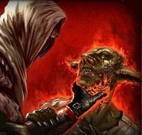 |
Quando il mago lancia questa magia la sua mano, che viene circondata da una pericolosa aura rossastra e fumosa, infonde nella creatura toccata un flusso di pura energia negativa. L'energia negativa sprigionata da questo incantesimo causerà alle creature aventi corpo organico basato sull'energia positiva 1d6+1 danni a causa dell'irradiamento di letale energia negativa. I non morti e gli esseri la cui esistenza si basa sull'energia negativa, invece, saranno curati del medesimo ammontare. Questa magia, inoltre, non avrà alcun effetto sulle creature inanimate (si pensi ad una comune pianta) e sulle creature non dotate di un corpo organico basato sull'energia positiva (si pensi, ad esempio, alla categoria dei costruiti ed agli elementali). L'alone di energia negativa perdura intorno alla mano del mago per due round ma, una volta toccata una qualsiasi creatura l'energia si dissiperà e la magia terminerà immediatamente. Il componente materiale di questo incantesimo è rappresentato da una dose di unguento creato con corpi di non morti dissolti in polveri alchemiche che si consumano quando il mago unge la sua mano nel corso del lancio della magia. Questo unguento è conservato solitamente in barattoli di metallo. Il peso di ogni dose, nel barattolo, è pari a 0,1 libbre ed il suo valore è pari a 10 monete d'oro. |
Little Vaporizer (Evocation)
Range: Touch Components: V, S Duration: 1 hour per level Casting Time: 5 Area of Effect: One object Saving Throw: None
Quando il mago lancia questo incantesimo su un oggetto che rientri massimo in un cubo di 10 cm. di lato per livello di lancio lo stesso viene circondato da spruzzi di vapore in grado di riscaldarlo fino a una temperatura di 90° celsius. Il mago può utilizzare questa magia per varie finalità come per cucinare per rendere oggetti bollenti al tocco e così via. Il mago può far terminare la magia quando vuole anche prima della fine della durata dell’incantesimo.
Little Vortex of Fire (Evocation)
Range: 9 metri
Components:
V, S
Duration: 3 rounds
Casting Time: 3
Area of Effect: One creature
Saving
Throw: ½
Il mago fa circondare un singolo bersaglio che si trovi entro il raggio della magia da alcune fiamme vorticose. Alla fine del round di lancio ed alla fine dei due rounds successivi la vittima subirà 1 danno da fuoco magico per livello di lancio della magia fino ad un massimo di 8 danni all'ottavo livello di lancio. Danni dimezzabili con un tiro salvezza contro incantesimi (in ogni caso la vittima subirà almeno 1 danno da fuoco). Occorre un unico tiro salvezza per dimezzare tutti i danni provocati ogni round dalla magia. Le fiamme seguiranno la vittima sei suoi spostamenti. Se la creatura si immerge interamente in un liquido non infiammabile la magia termina istantaneamente.
Long Range Arrows (Enchantment)
Range: Tocco Components: V, S, M Duration: 1 day Casting Time: 1 round Area of Effect: One arrow every two levels Saving Throw: None
Questo incantesimo permette di incantare fino a 1 dardo di balestra o freccia di arco per ogni due livelli di esperienza del mago oltre il primo (1 al 1° livello, 2 al 3° livello, 3 al 5° livello e così via) in modo tale da raddoppiare il loro raggio di gittata. La freccia se recuperata potrà essere riutilizzata.
Magic Arrow (Enchantment)
Range:
Tocco
Components: V, S, M
Duration: 10 round
Casting Time: 1 round
Area of
Effect: One arrow or bolt
Saving Throw: None
Attraverso questa magia il mago è in grado di incantare un qualsiasi dardo per balestra o una qualsiasi freccia per arco che non siano già magici. In questo modo il proiettile incantato diventerà per i successivi 10 round (durante il quale potrà essere lanciato) incantato come se fosse un proiettile magico +1 a tutti gli effetti (potrà colpire ad esempio una creatura colpibile solo da armi magiche). Al termine dei 10 round, però, il proiettile (che sia stato utilizzato o meno) si sgretolerà e verrà ridotto in polvere per l’eccessiva energia magica che non era in grado di contenere.
Magic Missile (Evocation Air)
Range: 24 metri + 6 metri per livello (max 78 metri)
Components: V, S
Duration: Istantanea
Casting Time: 1
Area of Effect: One or more creature
Saving Throw: None
Quando il mago lancia questo incantesimo dei missili di gelida aria compressa,
dal colore blu, provenienti dal piano materiale dell'aria colpiscono i suoi
avversari. In particolare il mago potrà lanciare un missile al primo livello di
lancio + un missile supplementare ogni due ulteriori livelli di lancio della
magia (2 missili al 3° livello di lancio, 3 missili al 5° livello di lancio, 4
missili al 7° livello di lancio) fino ad un massimo di 5 missili al 9* livello
di lancio. Il mago potrà direzionare ogni singolo missile su un qualsiasi
bersaglio a sua scelta (determinandosi, ovviamente, nella fase delle
intenzioni). Ogni missile penetrerà nella corpo della vittima provocando 1d3+1
danni da perforazione.
Magic Motes (Evocation, Abjuration)
Range: 0
Components: V, S
Duration: 1 turno per livello
Casting Time: 1
Area of Effect: The Caster
Saving Throw: None
Quando un mago lancia questa magia appare 1 sfera di luce + 1 sfera ogni due livelli di lancio (2 sfere al 3° livello, 3 sfere al 5° livello, ecc…) fino ad un massimo di 5 sfere al 9° livello. Le sfere illuminano di luce bluastra fino a 6 metri di distanza dal caster. Se il mago è attaccato, una sola sfera si dirigerà verso ogni singolo attacco fisico assorbendo fino a 1-4+1 danni provocati dallo stesso per poi svanire immediatamente. Il mago, dunque, si ferirà eventualmente per i danni ulteriori provocati dall'attacco. L'intervento della sfera non impedirà comunque che l'attacco colpisca il mago che potrà, quindi, subire gli eventuali effetti secondari dello stesso anche qualora la sfera abbia assorbito interamente il danno (si pensi ad es. al veleno od al risucchio di energia). Qualora, invece, il mago subisca danni ad area tutte le sfere si attiveranno, in ogni caso, per assorbire il danno provocato svanendo immediatamente dopo l'intervento. Si noti che, utilizzando il medesimo criterio utilizzato dagli anelli magici di protezione, i danni che non si sostanziano in aggressioni fisiche esterne non possono essere assorbiti dalle sfere (si pensi ad es. ad incantesimi od a poteri che attaccano il fisico della vittima dall'interno come Blood Burn o che producono danno ad area direttamente nel corpo della vittima come Death Star). Se non sono utilizzate, le sfere svaniranno comunque dopo che sia trascorso 1 turno per livello di lancio dell'incantesimo.
Magic Wands Improver (Enchantment)
Range:
Tocco
Components: V,S,M
Duration: Speciale
Casting Time: 1 round
Area of Effect: Una bacchetta magica
Saving Throw: None
Questo incantesimo amplifica la magia contenuta in una qualsiasi bacchetta magica (link). In particolare, dopo il lancio dell'incantesimo, per un numero di utilizzi dipendente dal livello di lancio della magia gli effetti magici prodotti dalla bacchetta saranno implementati in maniera tale che gli eventuali danni prodotti saranno incrementati del 20 % (con risultato arrotondando per eccesso) e le vittime degli effetti magici della bacchetta otterranno una penalità di –1 agli eventuali tiri salvezza previsti per evitarli o ridurli. Tale effetto sarà applicato ad un utilizzo ogni 3 livelli di lancio dell'incantesimo effettuati nell'arco di 24 ore (un utilizzo dal 1° livello, due utilizzi dal 3° livello, tre utilizzi dal 6° livello) fino ad un massimo di quattro utilizzi al 9° livello. Si noti che l'effetto sarà automaticamente applicato ai primi utilizzi consecutivi effettuati della bacchetta dopo il lancio di questo incantesimo non potendo il mago selezionare quando utilizzare il potenziamento. In ogni caso, trascorse 24 ore dal lancio della magia la stessa terminerà indipendentemente dagli utilizzi residui eventualmente rimasti. Una bacchetta magica non può ricevere utilmente più di uno di questi incantamenti nell'arco di 24 ore. Il componente materiale è una manciata di purissima polvere d’oro da 10 monete d'oro. Un ammontare di 50 g.p. di polvere d'oro pesa 1/10 di libbra. La polvere si consuma al momento del lancio dell'incantesimo.
Magical Appraising (Divination)
Range: Tocco
Components: V, S
Duration: Istantanea
Casting Time: 1 round
Area of Effect: Un oggetto
Saving Throw: None
Quando il mago lancia questo incantesimo toccando un oggetto costui potrà determinarne il valore medio di mercato. Il mago sarà consapevole anche del possibile valore storico od artistico dell'oggetto. Per quanto attiene in particolare alle gemme costui conoscerà i carati e la qualità delle stesse. La possibilità di determinare correttamente il valore dell'oggetto è pari al 45% + 5% per livello di lancio della magia fino ad una possibilità massima pari al 95% a partire dal 10° livello di lancio. Se la prova fallisce il mago non potrà utilizzare questo incantesimo sul medesimo oggetto fino al superamento di un nuovo livello di esperienza.
Magma Fall (Evocation Magma)
Range: 15
metri
Components: V, S, M
Duration: Speciale
Casting Time: 4
Area of Effect: Una creatura
Saving Throw: Negates
Quando il mago lancia questo incantesimo su una creatura dalle sue mani partirà una piccola massa informe di materia lavica rovente. La vittima ha diritto ad un tiro salvezza (modificato dalla destrezza) per evitare di essere colpito. Le creature Large ottengono una penalità di -1 al tiro salvezza, quelle Huge di -2, quelle Gargantuan di -4. Se il tiro salvezza è fallito la vittima sarà colpita dal magma subendo 1d6+4 danni. A partire dal round successivo, inoltre, la vittima subirà 4 danni supplementari da calore a fine round fino a che non si scrollerà di dosso il materiale rovente che, in ogni caso, svanirà trascorsi cinque round (oltre al round di lancio). La vittima potrà liberarsi dal magma scollandoselo di dosso con un 'azione complessa volta a tal fine. Il componente materiale di questo incantesimo è una pietra lavica dal peso di 1 lb. e dal costo di 1 moneta d'oro che si consuma al lancio della magia.
Mending (Alteration)
Range: Tocco
Components: V, S, M
Duration: Istantanea
Casting Time: 1 round
Area of Effect: 1 object
Saving Throw: None
Con questo incantesimo il mago può provare a riparare alcune tipologie di danni subiti dagli oggetti. La magia non può in alcun caso essere utilizzata per riparare oggetti magici. Il mago, in particolare, potrà riparare oggetti comuni che si siano rotti e di cui possiede tutti i pezzi (si pensi ad un vaso di ceramica od ad un calice di cristallo). Quando la magia è lanciata in questo modo l'oggetto sarà ricomposto come se non si fosse mai rotto. Perché funzioni l'incantesimo il mago deve disporre di tanti pezzi dell'oggetto originale che corrispondano alla maggior parte di esso, altrimenti la magia non potrà essere lanciata. Se manca anche un solo pezzo dell'oggetto rotto la magia funzionerà ma il pezzo mancante non apparirà. Inoltre, la magia non funzionerà qualora l'oggetto o parte di esso sia stato distrutto o abbia cambiato caratteristica fisica (sia stato incenerito o polverizzato). Questa magia, ad esempio, può essere utilizzata su un libro strappato di cui si possiedono tutte le pagine ma non sulla cenere di un libro bruciato. Questa magia può essere utilizzata anche sulle armi che avendo fallito un tiro salvezza si siano rotte. In questo caso, perché la magia possa essere lanciata, il mago deve disporre di tutti i pezzi dell'arma. Quando la magia viene lanciata il mago avrà l'80% di possibilità di riuscire a riparare un'arma di fattura comune, il 65% di possibilità di riuscire a riparare un'arma di fattura buona, il 40% di possibilità di riuscire a riparare un'arma di fattura eccellente ed il 25% di possibilità di riuscire a riparare un'arma di fattura superba. Se il tiro percentuale riesce l'arma sarà riparata ma dovrà essere nuovamente riaffilata (la magia non incide sull'affilatura della stessa), se il tiro fallisce il danno prodotto all'arma sarà stato così grave da non poter essere riparato tramite l'uso di questo incantesimo. Questa magia può essere utilizzata, infine, sugli scudi e sulle corazze danneggiate. La magia non può essere utilizzate sugli scudi e le corazza rotte ma solo su quelle che abbiano subito la perdita di punti corazza per i danni subiti. Ogni lancio della magia, infatti, permetterà di recuperare fino a 5 punti corazza che sarebbe possibile aggiustare presso un qualsiasi corazziere. La magia non permetterà, in alcun caso, di recuperare punti corazza persi definitivamente. Il componente materiale di questa magia è un piccolo pezzo di magnete dal costo di 5 corone e dal peso di 1/5 di libbra che si consuma al lancio dell'incantesimo.
Mental Notepad (Alteration)
Range: 0
Components: V, S, M
Duration: Permanent
Casting Time: 1 round
Area of Effect:
The caster
Saving Throw: None
Questo incantesimo permette al mago di immagazzinare informazioni dettagliate in una parte non utilizzata del proprio cervello. Le informazioni così conservate potranno essere quindi riportate alla memoria del mago in un qualsiasi momento futuro in modo tale che costui le rammenti dettagliatamente al termine di un round di concentrazione. Il mago può immagazzinare qualsiasi tipo di informazione, come nomi, numeri, tabelle, storie ecc... In particolare il mago rammenterà le informazioni sulle quali fissi l'attenzione il round immediatamente successivo a quello di lancio di questa magia. Una volta immagazzinate in questo modo le informazioni potranno essere riportate alla memoria dal mago un numero indefinito di volte. Si noti, però, che questa magia non funziona con formule magiche di alcun tipo. Lanciando nuovamente questa magia il mago potrà decidere di cancellare definitivamente le informazioni immagazzinate e/o sostituirle con nuove diverse informazioni. Uno solo di questi incantesimi, infatti, può essere attivo nella mente del mago nel medesimo periodo di tempo. Il componente materiale di questo incantesimo è un foglio di carta dal valore di 3 g.p. e dal peso di 1/10 di lb. che si consuma al lancio della magia.
Minor Absorber Shield (Abjuration)
Range:
Touch
Components: V, S
Duration: ½ hour
Casting Time: 1
Area of Effect: One
creature
Saving Throw: None
Questo incantesimo è stato sviluppato come incantesimo di prova della potente serie di magie dedicate alla creazione di scudi di energia invisibile capaci di assorbire danni fisici al posto del caster, queste magie sono conosciute sotto la sigla ESDA ( Scudi Energetici per l’Assorbimento di Danni ). Questo incantesimo essendo di 1° livello di potere si differenzia dai normali ESDA (il primo dei quali è del 3° livello di potere) per cui non è stato inserito nella loro serie. Nonostante ciò è comunque molto utile, infatti quando questo incantesimo è lanciato il mago circonda se stesso o un’altra creatura di uno scudo di energia che si forma a 2-3 millimetri dalla sua pelle e lo avvolge completamente. Questo scudo energetico non interferisce minimamente con nessun movimento o azione il mago voglia compiere, eppure è capace di fermare fino a 10 punti di danno. Una volta assorbito tale danno lo spell finisce anche se non ne è finita la durata e il caster subisce i danni ulteriori. Lo scudo non difende dai gas e dai veleni che sono ugualmente in grado di danneggiare il caster (un dardo avvelenato non provocherà danni da punta ma il veleno potrà fare effetto) inoltre non difende in nessun caso da attacchi del tipo soffocamento e stritolamento. Non è possibile lanciare questo incantesimo cumulandone gli effetti o sommandoli a quelli di un'altra magia del tipo ESDA.
Minor Annoyance (Illusion)
Range: 5 feet per level Components: V, S Duration: 1 round per level Casting Time: 1 Area of Effect: One creature Saving Throw: Negates
This spell creates the illusion (in both sound and feel) of a mosquito flying into the victim's ear. The victim will then act appropriately, which usually means stopping and trying to get the illusionary mosquito out of his ear, until either a successful saving throw versus spell is made, or the spell expires. The spell can be used to interrupt casting of a spell. It will also increase the victim's chance of spell failure by 10% for every round the spell is effective after the first to a maximum of 50 % ) . The victim gets a saving throw at the time of the casting, and at the end of each round thereafter. For every level the victim is above the caster, it gets a +1 bonus on the saving throw. The illusionary mosquito does not stop the victim from fighting, it does give it a -2 to hit, however.
Minor Burning Hands (Alteration)
Range: 0 Components: V, S Duration: Instantaneous Casting Time: 2 Area of Effect: Special Saving Throw: 1/2
Once cast, a fan of flame shoots from the wizard's touching thumbs and outstretched hands. The fan reaches three feet forward from the thumbs, and extends 60° to the right and left, gradually shortening until the fan slopes into the wrists. The flames change color depending on the power the wizard is able to put into them, and follow this chart:
Wizard's Color of Damage Level Flames per level Will Ignite 1-2 Yellow 1 easily flammables (paper, thin cloth) 3-5 Orange 1½ flammables (cloth, hair, kindling) 6-8 Red 2 difficult flammables (wood) 9 + Violet 3 semi flammables (wet wood)
The verbal component of this spells are syllables of power, the somatic ones are touching your thumbs and spreading the fingers of each hand. The damage max. is 30 hp.
Minor Negative Weapon (Enchantment)
Range:
Tocco
Components: V, S, M
Duration: 10 round
Casting Time: 1 round
Area of Effect: One weapon
Saving Throw: None
Quando il mago lancia quest’incantesimo costui incanta un'arma in modo tale da far emettere dalla stessa una leggera radiazione negativa. Per tutta la durata della magia, quindi, ogni volta che chi impugna l’arma colpisce un avversario costui provocherà allo stesso un danno di energia negativa supplementare per ogni colpo inferto. Il componente materiale per quest’incantesimo è una manciata di polvere d’argento mista a polvere di tomba dal peso 0,1 e dal costo di 5 g.p. che si consuma al lancio della magia.
Minor Fright (Charm)
Range:
15 metri
Components: V, S
Duration: 2 rounds + 1 round/2 levels
Casting Time: 2
Area of Effect: One
creature
Saving Throw: Negates
Quando il mago lancia questo incantesimo su una creatura, la stessa dovrà superare un tiro salvezza contro incantesimi mentali. Se il tiro salvezza è fallito la vittima sarà colpita da terrore e resterà sul posto paralizzata dalla paura (fear). In particolare, la vittima non potrà effettuare attacchi, lancio di incantesimi od altre azioni complesse, inoltre la stessa non potrà spostarsi dalla posizione occupata. Costei potrà unicamente restare sulla difensiva senza subire per questo alcuna penalità alla propria classe armatura (senza, però, potersi mettersi in parata, senza poter utilizzare manovre di combattimento e senza poter spendere alcun punto combattimento). La magia termina una volta decorsi 2 rounds + 1 round ogni 2 livelli di lancio della magia (2 rounds al 1° livello di lancio, 3 rounds al 2° livello di lancio, 4 rounds al 4° livello di lancio, e così via). Si noti che le creature immuni alla paura (ivi comprese le creature che abbiano un valore di morale pari a fearless-20) non subiranno gli effetti di questo incantesimo, inoltre, l'incantesimo non avrà effetto su creature che abbiano un ammontare di dadi vita/livelli superiori a 2 + la metà del livello di lancio di questa magia. Questa magia, quindi, avrà effetto su creature che abbiano fino a 2 dadi vita se lanciata al 1° livello, su creature che abbiano fino a 3 dadi vita se lanciata al 2° livello, su creature che abbiano fino a 4 dadi vita se lanciata al 4° livello, e così via. Si noti che saranno considerati ai fini di questo incantesimo unicamente i dadi vita pieni posseduti dalla creatura, indipendentemente dagli eventuali bonus di costituzione.
Minor Rock Precipitation (Evocation)
Range: 15 metri + 3
metri per 2/levels > 1°
Components: V, S, M
Duration: Istantanea
Casting Time: 5
Area of Effect: Special
Saving Throw: Special
Quando il mago lancia questo incantesimo costui evoca la caduta di alcuni grossi massi dal piano materiale della terra. Il raggio della magia, ossia la distanza massima alla quale il mago potrà piazzare il centro dell'area d'effetto della magia, è pari a 15 metri + 3 metri ogni due livelli lancio oltre il 1° (18 metri al 3° livello di lancio, 21 metri al 5° livello di lancio, ecc...) fino ad un massimo di 24 metri al 7° livello di lancio. I massi cadono a caso nell'area d'effetto, una zona circolare di 15 metri di diametro. Ogni creatura colpita da un masso subisce 2d6 danni da botta se fallisce un tiro salvezza contro pietrificazione modificato dal reaction adjustmnent della destrezza, altrimenti, se il tiro salvezza è superato con successo la stessa subisce 1d6 danni da botta. Il mago potrà determinare a piacimento il luogo di caduta del primo masso (sempre all'interno dell'area d'effetto) laddove i successivi massi cadranno casualmente nell'area d'effetto. Per simulare la caduta casuale dei massi nell'area d'effetto si tiri 1d20 e si consulti il seguente schema di caduta. Il tiro va ripetuto per ogni sasso caduto ignorando ogni risultato già verificatosi (non può cadere più di un masso nella medesima posizione). Se il mago effettua un 20, costui potrà decidere il luogo di caduta del masso fra tutte le posizioni nelle quali non è caduto alcun masso fino a quel momento (compreso il primo che è caduto nella posizione scelta dal mago). Creature di dimensioni particolarmente grandi (come di size huge) occupando più di una posizione (di 3 metri) possono essere colpite da più di un masso (dovendo effettuare un tiro salvezza per ognuno di essi). Il mago evocherà 3 massi + 1 masso supplementare ogni due livelli di lancio oltre il primo (4 massi al 3° livello di lancio, 5 massi al 5° livello di lancio, ecc...) fino ad un massimo di 6 massi al 7° livello di lancio. Si noti che i sassi devono precipitare da almeno 3 metri di altezza per tale motivo potranno essere evocati solo in zone che abbiano un soffitto alto almeno 3 metri. Se la magia viene lanciata in una zona con ostacoli o di dimensioni minori dell'area d'effetto saranno comunque tirati tutti i massi casualmente e quelli che sarebbero precipitati in zone non ammissibili saranno considerati perduti (la loro evocazione sarà fallita). Il componente materiale di questa magia è una piccola roccia bagnata nell'argento dal peso di 1/2 libbra e dal costo di 1 g.p. che si consuma al lancio dell'incantesimo.
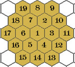
Minor Sigil (Abjuration)
Range: Tocco
Components: S, M
Duration: Speciale
Casting Time: 1 round
Area of Effect: Una porta od un contenitore
Saving Throw: None
Attraverso questo incantesimo il mago può applicare un sigillo magico difensivo su una qualsiasi porta o contenitore sia possibile aprire e chiudere che abbia come dimensioni massime 3 metri di diametro. In particolare, per "porta" potranno intendersi le porte, le finestre, le grate, i cancelli, i pannelli scorrevoli e segreti, ed ogni altro serramento, per lo più a uno o due ante, di un'apertura attraverso la quale si entra in una stanza, in un edificio od in un altro luogo recintato. Per "contenitore" potranno intendersi, le casse, gli scrigni, le ceste, i cassetti, le bottiglie, ed ogni altro recipiente sia possibile aprire e chiudere rimuovendone o facendone scorrere una parte (per tale motivo una faretra od un fodero, essendo comunemente contenitori aperti, non potranno ricevere questo incantesimo). Si noti che il contenitore deve essere costruito in origine come apribile e chiudibile, per tale motivo questa magia non potrà essere utilizzata su un sacco (che è in origine aperto) chiuso poi con una corda oppure su una tasca che è stata cucita od alla quale è stato apposto un bottone od una spilla. La magia potrà essere lanciata sull'oggetto solo quando lo stesso è chiuso. Quando l'incantesimo è lanciato, dunque, apparirà un sigillo circolare rosso del diametro di 5 centimetri ben visibile sull'oggetto nei pressi dell'apertura. Da quel momento in poi, la prima creatura (ivi compreso il mago) che apra l'oggetto in presenza del sigillo lo farà attivare subendo 1d4 danni elementali +1 ogni due livelli di lancio dell'incantesimo oltre il primo della tipologia scelta da chi lo ha lanciato (1d4 al 1° e 2° livello, 1d4+1 al 3° e 4° livello, 1d4+2 al 5° e 6° livello, e così via) fino ad un massimo di 1d4+4 al 9° livello di lancio. Al momento del lancio della magia, infatti, il mago potrà specificare se far produrre al sigillo danni magici da fuoco, da freddo o da elettricità. Una volta attivato il sigillo svanirà definitivamente. Il mago può, impiegando un'azione complessa che necessita di componenti somatici nonché del mantenimento della concentrazione, rimuovere definitivamente, in ogni momento, un sigillo apposto in precedenza. Su ogni oggetto può essere apposto validamente un unico sigillo. Il componente materiale di questo incantesimo è una piccola chiave di bronzo dal peso di 1/10 di libbra e dal costo di 2 monete d'oro che si consuma al lancio dell'incantesimo.
Mirror of Death (Necromancy)
Range:
Special
Components: V, S, M
Duration: Special
Casting Time: 3
Area of Effect:
One person
Saving Throw: Negates
Per usare questa magia il mago deve trovarsi a distanza da corpo a corpo con la vittima (nello stesso melee). Lanciando la magia estrarrà uno specchio speciale nel quale la vittima vedrà riflessa la sua immagine. Possono subire gli effetti di questa magia solo gli umani, i semi-umani e gli umanoidi, viventi del primo piano materiale. L’immagine riflessa nello specchio sarà maledetta, quando la creatura si guarderà vedrà la propria immagine invecchiare fino a deturparsi corrompersi fino alla morte. Questa scena è talmente terrificante che la vittima dovrà superare un tiro salvezza contro raggio della morte. Se il tiro fallisce la vittima sarà impaurita e subirà una penalità di –1 a tutti i suoi tiri per colpire e tiri salvezza per le successive 24 ore, solo se ha fallito il primo tiro dovrà, inoltre, superare un ulteriore tiro salvezza contro morte, se anche questo tiro salvezza fallisce la vittima oltre a subire le suddette penalità sarà paralizzata dalla paura per 1d3 rounds. Per poter aver effetto occorre che la vittima possa vedere la propria immagine (situazioni di buio, cecità ed altro impediscono gli effetti della magia). Il componente materiale è uno specchio antico rifinito in argento intarsiato e bagnato con l’acqua santa di Karan dal peso di 3 libbre e dal costo di 200 g.p. che non si consuma al lancio della magia.
Mist (Evocation Smoke)
Range: 18
metri
Components: V, S
Duration: 2 rounds per livello
Casting Time: 2
Area of
Effect: 6 sfere da 3 metri di diametro + una sfera per livello
Saving Throw: None
Questa magia
crea nell'area d'effetto un fumo bianco che infastidisce la vista. L'area
dall'incantesimo corrisponde ad un numero di sfere (esagoni) di 3 metri di
diametro corrispondenti al livello di lancio della magia più tre. Il mago può
disporre queste aree a piacimento purché almeno una sfera sia posizionata
all'interno del raggio dell'incantesimo, le stesse siano disposte senza
soluzione di continuità tra di loro e siano tutte allo stesso livello di altezza
dal suolo (non potendosi disporre una sull'altra). Il fumo, quindi, renderà più
difficile vedere attraverso di esso. In particolare ogni tre sfere (esagoni) o
frazione di essi tutti gli attacchi a distanza riceveranno una penalità di -1 al tiro per colpire e tutte le
magie lanciate otterranno il 10% di possibilità di
fallimento. Si noti che un ammontare di 12 o più sfere (esagoni) impediranno
totalmente la vista attraverso le stesse. Questa penalità è cumulabile con altre penalità dovute a coperture
come ad esempio la presenza di una zona di foresta (non però ai fini della
mancanza di visibilità). Si tenga presente che la nebbia presente nell'esagono
occupato da una creatura non sarà considerata ai fini di determinare la
visibilità della medesima (mentre tale nebbia sarà considerata per valutare la
visibilità delle altre creature nei confronti di quella occupante l'esagono di
nebbia, eccezion fatta per le creature posizionate negli esagoni immediatamente
adiacenti [melee]). Un vento forte od effetti magici assimilabili faranno
terminare immediatamente l'incantesimo. Per schematizzare su mappa esagonale
l'effetto della
Mist
si consulti il seguente schema. 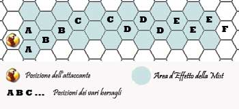
In questo esempio l'eventuale
attaccante non subirebbe alcuna penalità ad attaccare nelle posizioni in corpo a
corpo contrassegnate dalla lettera A (si noti, però, che qualora l'attaccante
fosse posizionato un esagono indietro, essendo un attacco a distanza lo stesso
avrebbe ottenuto una penalità di -1 già nei confronti delle creature posizionate
all'interno del primo esagono di nebbia); otterrebbe -1 al tiro per colpire
contro creature collocate nelle posizioni contrassegnate dalla lettera B;
otterrebbe -2 al tiro per colpire contro creature collocate nelle posizioni
contrassegnate dalla lettera C; otterrebbe -3 al tiro per colpire contro
creature collocate nelle posizioni contrassegnate dalla lettera D;
otterrebbe -4 al tiro per colpire contro creature collocate nelle posizioni
contrassegnate dalla lettera E; non avrebbe alcuna visibilità della
creatura collocata nella posizione contrassegnata dalla lettera F.
Morrison's Tavern Locator (Divination)
Range: 0 Components: V, S Duration: Instantaneous Casting Time: 5 Area of Effect: One mile per level Saving Throw: None
This spell is meant to be used by a wizard who is looking for a good place to have a blast and get blasted. The spell seeks out all establishments within range and instantly gives the caster a mental impression of the best place, with regards to its location, name, general appearance, and taste of the wizard. The spell determines which is the "best" location by considering the following factors, in descending order of importance: strength and quality of drinks served, wildness factor, size of bar, and inexpensiveness.
Mud in the Eyes (Evocation)
Range: 15
metri
Components: V, S
Duration: Istantanea
Casting Time: 2
Area of
Effect: Una creatura
Saving Throw: Negates
Quando il mago utilizza
questa magia costui lancia un ammasso di fango negli occhi della sua vittima.
Questo incantesimo non può essere lanciato validamente su creature non dotate di
organi visivi comuni di tipo organico (occhi). La vittima ha diritto a superare
un tiro salvezza su riflessi per evitare il getto di fango. Se il tiro salvezza
fallisce la vittima sarà colpita dal fango ed accecata di conseguenza fino a che
non si pulirà gli occhi. La vittima potrà liberarsi dal fango pulendosi con
un'azione complessa utilizzata solo per questo scopo. In particolare, pulendosi
la prima volta, avrà comunque la vista parzialmente offuscata dal residuo
fangoso vedendosi applicare ancora un modificatore di -2 al tiro per colpire e
del 20% di fallire nel lancio delle magie a distanza; pulendosi una seconda
volta, invece, riacquisterà la normale vista. Si noti che se la creatura ha a
disposizione acqua per pulirsi, con una sola azione complessa potrà liberarsi
interamente dal fango riacquistando subito la vista normale. Le creature di
dimensioni Huge o Gargantuan saranno solo parzialmente accecate dal fango
ricevendo da subito le penalità come vista appannata (-2 al tiro per colpire e
del 20% di fallire nel lancio delle magie a distanza). Costoro, quindi, potranno
riacquistare la normale vista attraverso l'utilizzo di una sola azione
complessa.
Murder Weapon
(Divination, Necromancy)
Range: 0 Components: V, S, M Duration: 1 turn Casting Time: 1 round Area of Effect: Weapon touched Saving Throw: None
The caster of this spell can check one weapon per round to determine if it was used to kill a specific corpse, of whom he has a blood sample. A murder weapon is one that reduced the victim to zero hit points, or delivered the poison which did so. The material component of this spell is a drop of blood from the caster.
Narhwal's Blistering Pain (Necromancy)
Range: 0 Components: V, M Duration: Special Casting Time: 1 Area of Effect: Person touched Saving Throw: Negates
This is a particularly annoying and potentially disgusting spell. The caster places his hands upon the bare flesh of the victim and immediately the victim takes 1d4-1 damage per level of the caster (a successful saving throw negates the effect). Large, pussy blisters grow from the place the victim was touched. This can have any number of ill effects upon the victim depending upon the location and the creativity of the DM. The material component of this spell is some lamp oil rubbed on the hands of the caster.
Owl Companion (Summoning)
Range: 3 metri
Components: V, S, M
Duration:
Speciale
Casting Time: 1 day
Area of Effect:
Speciale
Saving Throw:
None
|
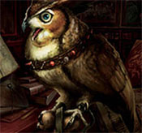 |
Questo potente incantesimo consiste in una magia di convocazione di tipo
reale che unisce elementi della magia del nuovo metodo con elementi di magia
rituale del vecchio metodo. Per lanciare questo incantesimo, infatti, il mago
deve porre in essere un vero e proprio piccolo rituale. Il mago deve disporre di
un circolo evocativo e di candele rituali per un valore pari a 100 monete d'oro.
Il mago, quindi, effettuerà un intero giorno di lavoro ininterrotto pronunciando
le formule magiche dell'incantesimo ripetutamente. Se, per qualsiasi motivo, il
mago interrompe il rituale prima della sua scadenza lo stesso si considererà
fallito ed il mago perderà i punti magia ed i materiali senza ottenere alcun
risultato. Al termine del rituale apparirà nel circolo evocativo
posizionato entro 3 metri dal mago un
Gufo Sapiente
(link).
Prima di completare il rituale il mago dovrà utilizzare parte del suo potere
magico per legare a se questa creatura e donarle affinità magica. In pratica il
mago dovrà destinare a tale scopo 5 punti magia generici del primo livello di
potere. Questi punti saranno sottratti al mago fino a che si servirà del gufo e
saranno recuperati solo una volta trascorso un anno dal momento in cui il legame
magico con il gufo sarà stato rimosso.
Questo uccello, molto raro ed assai intelligente, considererà il mago come
proprio padrone e sarà in grado di comprendere la lingua parlata dallo stesso (il
mago può decidere quale lingua il gufo deve saper comprendere tra quelle che
conosce nel corso del rituale). Da allora in poi, il gufo, sarà un valido
servitore per il mago e cercherà di coadiuvarlo al meglio. Attraverso il rituale,
inoltre, il mago instaura con il gufo un'affinità magica. Per questo motivo
costui riceve i seguenti benefici quando si trova vicino al suo
Gufo
Sapiente:
|
Pack Mule (Summoning)
Range:
9 metri
Components: V, S, M
Duration: Speciale
Casting Time: 1 round
Area of Effect: Speciale
Saving Throw: None
|
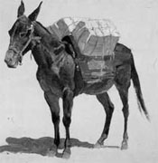 |
Con questa magia di convocazione
spazio/temporale il mago fa apparire un mulo da trasporto alla sua presenza. Si
tratta di un mulo da soma (link) che ha ricevuto
addestramento specifico per trasportare merci e/o creature. Al lancio
dell'incantesimo il mago deve decidere con quale tipologia di attrezzatura vuole
richiamare ad esistenza il mulo tra le seguenti due opzioni: |
Painful Wounds (Necromancy)
Range: 9
metri
Components: V, S, M
Duration: 1 round + 1 round per 3 levels
Casting Time: 3
Area of
Effect: One creature
Saving Throw: Negates
Questo incantesimo può essere lanciato validamente solo su creature "ferite" ossia su creature che abbiano subito almeno il 26% dei danni oppure che abbiano subito gli effetti della magia necromantica Bleeding Wounds. Quando la magia è lanciata la vittima potrà superare un tiro salvezza su energia vitale per evitarne gli effetti. Se il tiro salvezza è fallito le ferite della vittima diventeranno incredibilmente dolorose e la stessa sarà considerata impedita a causa della sofferenza per tutta la durata della magia. Creature immuni al dolore non subiscono questo effetto dell'incantamento, mentre le creature che posseggono la competenza Pain Tollerance possono effettuare una prova nella stessa ogni round per essere considerate incapacitate anziché impedite per quello specifico round). La magia termina una volta trascorsi 1 round + 1 round ogni tre livelli di lancio della stessa (2 round al 1° e 3° livello, 3 rounds al 4° e 6° livello, e così via) fino ad un massimo di 5 rounds al 10° livello di lancio. Il componente materiale di questa magia è una manciata di polvere di quarzo dal peso di 1/10 di libbra e dal costo di 12 monete d'oro che si consuma al lancio dell'incantesimo.
Painting (Illusion/Phantasm)
Range: 12 feet Components: V Duration: Concentration Casting Time: 1 Area of Effect: 2 foot long cube Saving Throw: Negates
By the means of this spell the wizard can create an illusion of whatever he wants, as long as he concentrates and the illusion remains in the area of effect. It is usually easy to recognize what the illusion is supposed to be of, but any creature that can do so can also recognize that it is an illusion.
Paralizing Order (Charm)
Range: 9
metri + 3 metri/2 livelli
Components: V, S
Duration: 2 rounds + 1 round/2 livelli
Casting Time: 3
Area of Effect: One creature
Saving Throw: Negates
Questa magia può essere lanciata su una qualsiasi creatura si trovi entro il raggio dell'incantesimo (9 metri al 1° livello di lancio, 12 metri al 2° ed al 3° livello di lancio, 15 metri al 4° ed al 5° livello di lancio, e così via). La vittima dovrà, quindi, superare un tiro salvezza contro incantesimi mentali. Se questo primo tiro salvezza ha successo la magia non avrà alcun effetto, altrimenti la creatura resterà paralizzata sul posto senza poter effettuare alcuna azione (hold) per tutto il resto del round. Inoltre, per l'intera durata dell'incantesimo (2 rounds al primo livello di lancio, 3 rounds al 2° ed al 3° livello di lancio, 4 rounds al 4° e 5° livello di lancio, e così via) la vittima dovrà effettuare un nuovo tiro salvezza per poter agire all'inizio di ogni round successivo al primo, ricevendo un bonus cumulativo di +1 ad ogni singolo tiro salvezza. Se il tiro salvezza è fallito la vittima resterà paralizzata senza poter agire per l'intero round, se invece tale tiro salvezza è superato la vittima potrà agire liberamente e l'incantesimo terminerà.
Power Word, Attention (Evocation)
Range: 0 Components: V Duration: Instantaneous Casting Time: 1 Area of Effect: All creatures in a 50 foot radius Saving Throw: None
This is an ancient spell of unknown origins that has been in common use for untold centuries. As the name implies, the utterance of power word, attention will get, with the use of a thunder, the attention of any and all creatures within a 50 foot radius, regardless of any languages they may speak. It is the caster's responsibility to make use of the temporary situation, for the creatures affected by this spell will resume their normal activities within a single round. Repeated use of this spell in a short time span is poorly received in many (if not all) locales. Creatures involved in spellcasting, combat, deafened, under the effect of a silence spell or involved in any other pursuit requiring concentration are not affected by power word, attention.
Protection from Chaos (Abjuration) Reversible
Range: 0 Components: V, S, M Duration: 2 rounds per level Casting Time: 1 Area of Effect: Creature touched Saving Throw: None
This spell is basically identical to protection from evil, save that, in addition to protecting against summoned and conjured creatures, it protects against all chaotic creatures in the same manner as the other spell protects against evil creatures. The reverse of this spell is protection from law. To complete this spell, the caster must trace a 3 foot diameter circle upon the floor with powdered obsidian for protection from law and powdered glass for protection from chaos.
Protection from Evil (Abjuration)
Range:
Tocco
Components: V, S, M
Duration: 2 rounds per livello
Casting
Time: 1
Area of Effect: Creatura toccata
Saving Throw: None
Questo
incantesimo protegge la creatura che lo riceve in due diverse modalità:
1) Tutte le creature di indole malvagia (allineamento evil)
che attaccano chi è protetto da questo incantesimo ricevono -2 ai loro tiri per
colpire. Inoltre, qualora creature della medesima indole impongano in via
diretta (ad esempio attraverso un incantesimo od un'abilità speciale) a chi è
protetto da questa magia il superamento di un qualsiasi tiro salvezza
quest'ultimo riceverà un bonus di +2 al tiro per superarlo.
2) La protezione magica previene il contatto fisico tra il corpo di chi riceve
questo incantesimo ed il corpo di qualsiasi creatura di origine extraplanare (si
pensi ad esempio ad un elementale od ad un essere demoniaco) nonché con quello
di creature "richiamate" nel Primo Piano Materiale tramite magie della scuola
Summoning
od effetti magici e rituali ad esse equivalenti. Si noti che la protezione
magica previene solo il contatto fisico diretto tra i due corpi impedendo ad
esempio l'utilizzo di attacchi fisici naturali o di poteri attivabili a tocco.
Non saranno, invece, impediti attacchi che avvengono attraverso l'uso di armi
nonché ogni forma di attacco o di utilizzo di potere a distanza. Se chi è
protetto da questa magia, però, effettuerà una qualsiasi forma di attacco nei
confronti di una creatura che era impossibilitata a toccarlo questa seconda
forma di protezione sarà immediatamente interrotta esclusivamente nei confronti
della specifica creatura attaccata.
Il componente materiale di questo incantesimo è rappresentato da una dose di
polvere di argento purissima che si consuma quando l’incantesimo viene lanciato.
Solitamente questa polvere è contenuta in un piccolo corno svuotato e chiuso con
un tappo di cuoio. Nel corno sono contenute 10 dosi di questa polvere. Il peso
del corno è di 1,5 libbre (ogni dose pesa 1/10 di libbra) ed il suo costo
complessivo è di 55 monete d'oro (una dosa singola ha un costo pari a 5 monete
d'oro). Esiste anche un corno di dimensioni maggiori indossabile a tracolla (1
slot alle spalle) che contiene fino a 30 dosi di questa polvere (peso
complessivo 4 libbre e costo complessivo pari a 160 monete d'oro)
Preserve Corpse (Necromancy)
Range:
Tocco
Components: V, S, M
Duration: 1d4 days +1 day per lvl
Casting Time: 1 turn
Area of Effect: 1 corpse
Saving Throw: None
Con questa magia il necromante pervade un corpo di un leggero influsso di energia negativa che impedisce a batteri e parassiti di decomporlo ulteriormente. Il corpo, dunque, resterà nel medesimo stato di decomposizione in cui si trovava al momento del lancio della magia. Il corpo si considererà conservato anche nei confronti degli incantesimi che hanno effetto su questo. Ad esempio i giorni trascorsi sotto l’influsso di questa magia non si considereranno come trascorsi per in corpo ai fini della magia raise dead (chierici, 5° livello di potere). Si noti, però, che questo incantesimo non avrà alcun effetto su quelle magie che interagiscono con lo spirito del defunto e per le quali le condizioni del cadavere non sono rilevanti (ad es. speak with dead). Il componente materiale di questo incantesimo è una manciata di cenere di un corpo cremato da conservare in una piccola urna d’argento dal peso di 2 libbre e dal costo di 15 g.p. che contiene fino a 10 dosi di cenere (la quale può essere acquista ad 1 g.p. e 0,1 libbre a dose qualora verificata).
Protective Amulet (Abjuration)
Range:
Tocco
Components: V, S, M
Duration: Permanente
Casting Time: 1 day
Area of Effect: Amulet touched
Saving Throw: Special
Con questa magia il mago incanta un amuleto a forma di foglia di quercia, riccamente adornato affinché questo lo protegga da un determinato incantesimo sia di natura magica che clericale di cui il mago sia a conoscenza avendo subito in via diretta gli effetti. L’amuleto può difendere solo da incantesimi che danno diritto ad un tiro salvezza per essere evitati (non funziona ad esempio con magie come magic missile). Una volta che questo amuleto è indossato e il mago subisce questo incantesimo l’amuleto si attiverà qualora il mago fallisca il tiro salvezza contro la magia. Si noti che l'amuleto risulterà incantato come se fosse un oggetto magico minore dal valore di 150 punti esperienza (minor enchantment) indipendentemente dal livello di potere dell'incantesimo dal quale protegge. In questo caso si considererà il tiro salvezza come riuscito ma l’amuleto si spaccherà e non potrà più essere riutilizzato. Solo un amuleto di questo tipo può essere indossato alla volta, indossarne più di uno annullerà tutti gli effetti precedenti. Si noti, infine, che questo amuleto, difendendo dalla magia come formulata con il nuovo metodo, protegge unicamente da incantesimi lanciati direttamente da utenti di magia e da chierici (anche attraverso l'utilizzo di oggetti magici), laddove non fornisce alcuna difesa contro effetti dovuti a poteri magici naturali anche qualora totalmente ricalcanti gli effetti di un incantesimo conosciuto. Il costo dell’amuleto dipende dalla natura della magia (magica o clericale) e dal livello dell’incantesimo dal quale l’amuleto deve proteggere, come indicato nella seguente tabella:
|
LIVELLO DI POTERE DELL'INCANTESIMO |
COSTO IN MONETE
D'ORO PER INCANTESIMI DEI MAGHI |
COSTO IN MONETE
D'ORO PER INCANTESIMI CLERICALI |
| 1° Livello di Potere | 15 monete d'oro | 20 monete d'oro |
| 2° Livello di Potere | 30 monete d'oro | 40 monete d'oro |
| 3° Livello di Potere | 60 monete d'oro | 80 monete d'oro |
| 4° Livello di Potere | 120 monete d'oro | 160 monete d'oro |
| 5° Livello di Potere | 240 monete d'oro | 320 monete d'oro |
| 6° Livello di Potere | 480 monete d'oro | 640 monete d'oro |
| 7° Livello di Potere | 960 monete d'oro | 1280 monete d'oro |
| 8° Livello di Potere | 1920 monete d'oro | - - - - - |
| 9° Livello di Potere | 3840 monete d'oro | - - - - - |
Persistent Dry (Abjuration)
Range: 0 Components: S, M Duration: 1 hour per level Casting Time: 1 Area of Effect: The caster Saving Throw: None
After casting this spell, the wizard will remain dry even if standing in the midst of a torrent. The wizard is protected from splashes and falling drops, but he is not protected from more concentrated bodies such as puddles. The water will simply bead and flow down an invisible field which surrounds the wizard and his clothing at a distance of about one inch. An oiled leather rag is the material component of this spell.
Putrify Wounds (Necromancy)
Range: Tocco Components: V, S Duration: 1 mese Casting Time: 2 Area of Effect: One creature Saving Throw: Negates
Quando il
mago tocca una creatura lanciando questa magia la stessa deve effettuare un tiro
salvezza contro morte magica oppure per la durata di 1 mese non potrà
rimarginare con metodi naturali le ferite subite fino a quel momento. Una magia
di cure disease interrompe immediatamente gli effetti di questo incantesimo che
non può essere eliminato con dispel magic. Le cure magiche avranno i normali
effetti ma la malattia perdurerà anche se la vittima sarà curata totalmente in
questo modo. Creature immuni alle malattie non sono affette da questa magia (ad
es. non-morti e paladini). Blocca, invece, tutte le forme di rigenerazione non
magiche (come quelle dei trolls).
Quantas's Target Bow (Enchantment)
Range: 0 Components: V, S, M Duration: 2d4 rounds + 1 round per level Casting Time: 2 Area of Effect: Bow touched Saving Throw: None
While this spell is in effect, any arrows fired from the bow (which may not be a crossbow) are +2 to hit a specific target. The wizard must be able to see the target, and call his shot. The +2 only affects hits on the target, not on someone or something that gets in the way. If the target is in melee, the target gets a +2 to it's size rating when the DM determines the odds of hitting the target as opposed to those around it. For example, if firing on a size six giant who is in melee with a size two elf, there would normally be a one in three chance to hit the elf. With target bow in effect, the giant would be raised to size eight, giving only a one in four chance to hit the elf. Should the arrow go at the elf anyway, it would not get its +2 to hit (since the giant is the target). Note that the arrow fired from the target bow is in no way magical. The material component is a feather from a bird of prey, rubbed against the bow string.
Question (Charm)
Range: 9
metri
Components: V, S
Duration: Istantanea
Casting Time: 4
Area of Effect: One creature
Saving Throw: Negates
Lanciando questa magia il mago cerca di obbligare la mente della vittima a rispondere sinceramente su una domanda da costui effettuata. Per tale motivo, quando il mago lancia questo incantesimo su una creatura, costui deve formulare una domanda alla quale possa essere data una risposta unicamente in senso affermativo o negativo. Perchè questa magia abbia effetto, quindi, occorre che la creatura vittima dell'incantesimo comprenda la domanda come formulata dal mago. Nella normalità dei casi, infatti, occorre che il mago e la creatura parlino la stessa lingua dovendo costui rivolgere la domanda alla creatura in via diretta senza poter utilizzare un interprete (si noti, però, che qualora il mago possa comunicare in altro modo con la creatura, ad esempio telepaticamente, costui potrà effettuare in tal modo la relativa domanda). Deve osservarsi che questa magia può essere lanciata solo su creature che abbiano un'intelligenza minima pari a 5 (low intelligence) ed una seppur minima capacità linguistica. Pertanto, qualora la creatura comprenda la domanda la stessa dovrà superare un tiro salvezza contro incantesimi mentali. Se il tiro salvezza fallisce, alla fine del round di lancio dell'incantesimo, la vittima dovrà obbligatoriamente rispondere alla domanda con un "si" o con un "no" (oppure con un gesto equivalente a tali risposte). Si noti che, in ogni caso, la vittima risponderà in base alle proprie conoscenze effettive, anche qualora la risposta data non corrisponda in concreto alla realtà, ciò poiché questa magia non ha alcun contenuto di tipo divinatorio (se, ad. esempio, una creatura ritenga non presente una trappola su una porta la stessa risponderà di "no" ad una eventuale domanda sulla sua presenza anche qualora in realtà sulla porta è stata apposta una trappola a sua insaputa). Qualora la vittima fallisca il tiro salvezza il mago sarà consapevole dell'esito positivo del proprio incantesimo. Se, invece, il tiro salvezza ha successo il mago non potrà più rivolgere alla medesima creatura la stessa domanda prima di aver raggiunto un nuovo livello di esperienza. Si noti che il mago non può superare questo limite usando giri di parole od altre tecniche di proposizione della domanda essendo rilevante la sostanza della richiesta e non il modo in cui questa è stata effettuata. La magia fallirà ugualmente anche nei seguenti casi: qualora il mago formuli una domanda alla quale non è possibile rispondere con una semplice negazione od affermazione; qualora la vittima non conosca la risposta alla domanda formulata dal mago; qualora il mago formuli una domanda alla quale la vittima non può dare una risposta affermativa o negativa certa (ad esempio nel caso in cui il mago chieda alla vittima di effettuare una valutazione od un'opinione alla quale la risposta da dare sarebbe un "forse" oppure un "può essere"), ciò in quanto questa magia può ottenere solo informazioni sicure dalla vittima senza forzarla a ragionare od a compiere valutazioni. Se, ad esempio, il mago chiede alla vittima se su uno scrigno è presente una trappola la stessa risponderà in base alla sua conoscenza laddove, invece la magia fallirà se il mago chiede alla vittima se secondo lui la trappola possa ucciderlo qualora sia attivata (a meno che la vittima non ritenga certa la morte o la sopravvivenza del mago). Si noti che qualora la magia fallisca il mago non potrà sapere per quale motivo la stessa è fallita.
Ray of Debilitation (Necromancy)
Range: 9
metri + 3 metri ogni 2 livelli oltre il 1° (max. 21 metri al 9° livello)
Components: V, S
Duration: 3 round + 1 round ogni 2 livelli oltre il 1°
Casting Time: 2
Area of Effect: One creature
Saving Throw: Negates
Quando il mago lancia questo incantesimo un raggio di luce violacea parte dalle sue mani e colpisce la vittima la quale può superare un tiro salvezza su energia vitale per evitare gli effetti dell'incantesimo. Al momento del lancio dell'incantesimo la La vittima deve trovarsi ad una distanza massima dal mago pari a 9 metri + 3 metri ogni due livelli di lancio della magia oltre il 1° (entro 9 metri al 1° ed al 2° livello di lancio, entro 12 metri al 3° ed al 4° livello di lancio, e così via...) fino ad una distanza massima di 21 metri a partire dal 9° livello di lancio. Se il tiro salvezza fallisce il corpo della vittima sarà debilitato e la stessa riceverà una penalità di -1 al tiro per colpire, di -1 a tutti i danni che prevedono normalmente l'applicazione del bonus di forza (mantenendo un minimo danno di 1 punto ferita) e di +1 alla propria classe armatura. Inoltre, la vittima vedrà ridursi il proprio fattore movimento potendo muoversi di un esagono (3 metri) in meno nel corso di ogni singolo round. Questa magia ha effetto solo su creature animali dotate di un corpo di tipo organico. L'effetto della magia dura 3 round + 1 round ogni due livelli di lancio della stessa oltre il 1° (3 round al 1° ed al 2° livello di lancio, 4 round al 3° ed al 4° livello di lancio, e così via...).
Read Magic (Divination)
Range: 0
Components: V, S, M
Duration: 2 round/livello
Casting Time: 1 round
Area of Effect: The caster
Saving Throw: None
Attraverso l'uso di questa magia il mago è in grado di comprendere il significato delle formule magiche presenti nei più svariati contesti. Si pensi alle formule magiche con le quali gli utenti di magia scrivono le magie sui loro libri, quelle con le quali sono scritti gli incantesimi sulle pergamene magiche dei maghi, quelle con le quali sono incise le parole magiche di attivazione sugli oggetti incantati aventi origine magica. Si noti che, una volta decifrata la formula magica, il mago sarà in grado di comprenderne il significato successivamente senza lanciare nuovamente questo incantesimo. Deve osservarsi che decifrare le formule magiche su una pergamena nella maggioranza dei casi non comporta l'attivazione della magia, un'eccezione è rappresentata però dalle maledizioni presenti sulle pergamene magiche dei maghi che sono attivate proprio allorquando una creatura ne prova a decifrare il significato. La durata di questa magia è pari a due round per livello di lancio dell'incantesimo ed il mago potrà decifrare, nel corso di ogni singolo round, formule magiche tali da riempire una regolare pagina di un comune libro degli incantesimi. Il componente materiale di questo incantesimo è una lente di cristallo di roccia dalla forma ovale dal peso di 0,2 libbre e dal valore di 100 monete d'oro che non si consuma al lancio della magia.
Ray of Frost (Evocation)
Range: 3 metri per livello
(15 metri massimo)
Components: V, S
Duration: Istantaneo
Casting Time: 2
Area of Effect: One creature
Saving Throw: Negates
Attraverso questa magia il mago evoca un getto di liquido gelido e schegge di ghiaccio con il quale cerca di colpire una creatura. La vittima potrà evitare totalmente il getto con un tiro salvezza su riflessi superato con successo, qualora però non riesca a schivarlo subirà 1-6 danni da taglio + 1 danno da freddo ogni due livelli di lancio (1 al 1° e 2° livello, 2 al 3° e 4° livello, e così via) fino al massimo di +5 danni da freddo al 9° livello di lancio (entrambi i danni si considerano di natura magica).
Roland's Disrobement (Conjuration)
Range: 1 yard per level Components: V, S, M Duration: Instantaneous Casting Time: 1 Area of Effect: The caster Saving Throw: None
This spell allows the caster to remove all of his clothing and replace it with another set of clothing in an instant. This clothing can be normal or magical, metal armour or leather, anything the wizard is currently wearing. However, the spell cannot place armour onto the caster's body. The clothes to be donned must be within the spell range. The material component for this spell is a piece of parchment with the word "wardrobe" written in elvish. The somatic and material components consist of the cast pointing at himself and saying the magic word "Hannskrischenandersun!". Origins: a grey elf mage/thief once lived in Furyondy and was apprenticed at his uncle's, the magister of a castle deep in the heart of the country. He was always having to take off his leather armour in order to cast spells, so he decided to research a spell that would allow him to change out of it in an instant. Unfortunately for poor Roland, he was executed by the new magister who hated elves. However, it was fortunate that he did not research it because it wouldn't have worked the way he wanted it to. You see, having a 4 Wisdom, Roland never figured out that you can't ever cast this spell in armour.
Rune of Copper Defence (Alteration)
Range: Tocco
Components: V, S, M
Duration: 24 ore
Casting Time: 1 round
Area of Effect: Una veste
Saving Throw: None
Attraverso l’uso di questa magia il mago altera la consistenza di un capo di vestiario (deve trattarsi di un capo di vestiario che avvolga almeno il 60 % del corpo di chi lo indossa) in modo tale da renderlo estremamente resistente. Sul capo di vestiario apparirà una runa di rame e colui che lo indossa avrà una Classe Armatura pari ad AC 8. Il capo di vestiario manterrà però la propria leggerezza ed elasticità originaria non impedendo in alcuna maggiore misura i movimenti di chi lo indossa (e conseguentemente il lancio delle magie). Sotto tutti gli altri aspetti chi indossa questa veste si considererà come una creatura che indossa una corazza magica (ad esempio al fine dei colpi critici e di compatibilità con altri oggetti magici ed incantesimi). Il componente materiale di questo incantesimo è una dose di purissima polvere di rame da utilizzare per incidere la runa sulla veste dal valore di 2 g.p. e dal peso di 1/10 di libbra che si consuma al lancio della magia.
Sand Glass (Alteration)
Range: 1 foot Components: V, S, M Duration: Permanent Casting Time: Special Area of Effect: Special Saving Throw: None
This simple spell allows wizards to create small glass objects (up to 3 pounds) out of sand. If used creatively, it is a handy spell for many situations. The caster can shape the glass in any way he wants, but trying to duplicate an existing object or creating something complex or valuable will require the proper artistic proficiencies. The caster can produce either transparent or translucent glass. Common products of this spell are cups, bowls, vials, small windows, crystal bullets, cutting shards, and so on. The spell itself doesn't produce sharp enough edges for cutting, but this can be done after the glass is made. It takes at least one round to prepare the glass, plus a variable time for the shaping, dependant on the object's complexity (DM's discretion). The material component of this spell is a small crystal lens to concentrate any light source stronger than torchlight on the sand. The lens is not expended.
Sand in the Eyes (Evocation)
Range: 15
metri
Components: V, S
Duration: 1 round per level
Casting Time: 3
Area of Effect: One creature
Saving Throw: Negates
Questa magia getta negli occhi di un avversario che non superi un tiro salvezza su riflessi una fastidiosa sabbia che, per la durata della magia, infastidisce la sua vista dandogli una penalità di –2 a tutti i tiri per colpire ed il 20% di fallire nel lancio delle magie. Se la vittima è dotata di mani, impiegando un'azione complessa con iniziativa pari a quella di movimento, può provare a liberarsi dalla sabbia. Ad ogni tentativo costei potrà effettuare un nuovo tiro salvezza per eliminare anticipatamente gli effetto dell'incantesimo. Questa magia può essere lanciata solo su creature che usino occhi come sistema sensoriale principale visivo, inoltre le creature dotate di un solo occhio subiscono una penalità di –2 al tiro salvezza.
Sandskin (Conjuration)
Range: 0
Components: V, S, M
Duration: Special
Casting Time: 1 round
Area of Effect: The
caster
Saving Throw: None
Con questo incantesimo il mago ricopre la sua pelle con uno strato di sabbia magica in grado di assorbire 8 punti danno +1 per livello di lancio dell’incantesimo fino ad un massimo di 20 punti ferita al 12° livello di lancio. Saranno assorbiti unicamente danni fisici (taglio, botta e perforazione). Non saranno assorbiti, quindi, danni di altro tipo come ad esempio i danni dovuti ad esposizione ad elementi (come ad es. fiamme, calore, gelo ecc..). Si noti che, quando il danno è totalmente assorbito, è totalmente impedita la lesione della pelle del mago per cui, ad esempio, veleni ad iniezione che presuppongono la penetrazione della carne non potranno essere iniettati. Svolgeranno, invece, pienamente i loro effetto i veleni a contatto e tutti gli effetti dei tocchi che non richiedano la lacerazione della carne per avere effetto (si pensi al tocco risucchio di un non morto). In ogni caso però, la pelle sabbiosa concede un bonus di +2 ai tiri salvezza nei casi di danni provocati dall'esposizione ad elementi (anche di natura magica, si pensi ad una palla di fuoco) nonché in tutti i casi di effetti provocati da un tocco (si pensi appunti ai veleni a contatto). Tale bonus al tiro salvezza, quindi, sarà applicato nei confronti di qualsiasi magia scagli elementi addosso al mago (si pensi a magie come Fireball). Non si applicherà, invece, per tutti quegli effetti che non prevedono un contatto con materiale di sorta. Per lo stesso criterio non si ottiene alcun beneficio ai tiri salvezza nei confronti di sostanze presenti nell'elemento in cui ci si trova (si pensi ad un gas tossico od alla magia Stinking Cloud). Come criterio generale, quindi, il bonus al tiro salvezza potrà applicarsi solo nei casi in cui, ragionando ipoteticamente, la presenza di un corpo fisico tra il soggetto e l'effetto che deve essere evitato avrebbe aiutato la creatura a proteggersi da quest'ultimo. In ogni caso il mago non è protetto in alcun modo (escludendo quindi anche il bonus ai tiri salvezza) da danni provocati da stritolamento o da attacchi similari. La pelle sabbiosa è visibile per il colore giallastro tipico della sabbia. La pelle sabbiosa perdura fino a che non ha assorbito tutti i danni previsti (si noti che i danni non assorbiti lasciano intatta la pelle sabbiosa). Questa magia non può essere lanciata, fallendo immediatamente, su una creatura che già è sotto gli effetti della stessa o di un qualsiasi incantesimo similare (si pensi alla magia Stoneskin ed alla magia Rockskin). Il componente materiale è una manciata della migliore sabbia bianca o dorata. Ogni dose di tale finissima sabbia ha un costo pari a 1,5 monete d'oro ed un peso pari ad 1/10 di libbra.
Sanh's Ray of Light (Evocation)
Range: 6 yards + 1 yard per level Components: V, S Duration: Instantaneous Casting Time: 3 Area of Effect: One creature Saving Throw: ½
Con questo incantesimo il mago lancia un raggio di luce bianca incandescente sul nemico. Il raggio provoca danni da calore pari ad 1d3 danni + 1 danno per livello di lancio della magia, inoltre se utilizzato contro creature del piano negativo (come i non morti) provoca ulteriori danni da energia positiva pari ad 1 danno per livello di lancio della magia. Inoltre vi è il 3% per livello di lancio della magia che la creatura resti accecata dal raggio di luce per 1d2+1 round (sempre che la creatura vittima della magia sia dotata di normali organi visivi).
Sara's Searing Skean (Summoning)
Range: 21 metri
Components: V, S, M
Duration: Special
Casting Time: 3
Area of Effect: Una creatura
Saving Throw: ½
Questo incantesimo richiama ad esistenza una creatura elementale del piano del fuoco che si manifesta come una piccola sfera dorata circondata da una fiamma ardente che appare fluttuante sopra la testa del mago. La creatura sarà considerata a tutti gli effetti una creatura richiamata con una magia di summonazione spazio-temporale al fine di verificare se il mago riesca a mantenerne il controllo. Questa creatura, dunque, scaglierà immediatamente una sfera infuocata sul bersaglio indicato dal mago al momento del lancio. La sferà provocherà 2d3 danni da fuoco magico +2 danni per livello di lancio dell'incantesimo fino ad un massimo di 2d3+14 danni al 7° livello di lancio. La vittima avrà, quindi, diritto ad un tiro salvezza su riflessi per dimezzare i danni subiti. Costituendo l'attacco un potere speciale della creatura richiamata, al tiro salvezza non saranno applicati modificatori dipendenti dal livello di lancio e dal grado di conoscenza posseduto dal mago. Nella normalità dei casi, dopo l'attacco, la creatura elementale torna nel suo piano dimensionale. Alla fine del round, però, il mago dovrà effettuare un tiro percentuale in quanto vi è una possibilità pari al 5% +1% per livello di lancio della magia che la creatura resti, anche per il round successivo, nel luogo ove il mago l'ha richiamata. Se ciò si verifica la stessa effettuerà, ad un fattore iniziativa pari a +3, un ulteriore attacco contro la medesima creatura. La permanenza dell'elementale non impedisce al mago di effettuare una qualsiasi altra azione nel medesimo round. Se ciò si verifica il mago potrà effettuare un nuovo tiro percentuale per verificare se la creatura resti anche nei successivi rounds. Fino a che resta nel primo piano materiale la creatura si considererà sempre sotto il controllo del mago. Se, al momento in cui la creatura deve effettuare il suo attacco, il bersaglio della stessa muore o si trova a più di 21 metri di distanza la creatura svanirà e la magia terminerà definitivamente (indipendentemente dal risultato del tiro percentuale). Qualora il mago perda il controllo della creatura la stessa considererà il mago il suo nuovo bersaglio. Qualora debba verificarsi se la creatura resista a danni od attacchi la stessa si considererà avere AC 4, 1/2 DV e 3 punti ferita per ogni livello di lancio della magia nonché una totale immunità alle armi normali, al fuoco ed al calore. In ogni caso, questa creatura è così piccola che non impedirà il movimento delle altre creature né si considererà tra una creatura colpibile ai fini della determinazione di un random shot od altro effetto analogo. Il componente materiale di questo incantesimo è una piccola sfera di zolfo e polvere d'oro dal valore di 5 monete d'oro e dal costo di 0,2 libbre che si consuma al lancio della magia.
Shadows (Illusion/Phantasm)
Range: 0 or 6 yards (see below) Components: V, S Duration: Special Casting Time: 1 Area of Effect: Special Saving Throw: None
This spell has three different potential functions, the choice of which may be made at the time of casting: Hide. The wizard may cast shadows upon himself, with this covering giving him a chance of hiding in shadows as that for a thief of equal level. The wizard can take advantage of (or is penalised by) Dexterity and racial adjustments. This form of the spell is only shadow enhancing, so an effort must still be made to hide. It can be cast only on the wizard's person (a range of 0 for this function), and the wizard must remain still and concentrate faintly to maintain the shadows. This can only be of use where shadows already exist. If the wizard is also a thief, this spell can be used to either give the chance of hiding as described above or add a 2% per level (wizard's level) to the character's normal thief chances of hiding in shadows. Distract. This version causes a number of shadowy forms to dart about up to 6 yards distant in a 2 yard square area, until the spell expires. This could be most distracting, for it appears as though there are humanoid and possibly animal forms moving about. These shadows cannot exist in sunlight or a continual light, but could still be seen jumping between areas of cover. Scare. This version creates the illusion of a number of humanoid forms, appearing exactly as the undead shadow. Up to 1 form per level can be made, appearing in a 10 feet + 1 foot per level square area. The wizard has control over each form's actions. While they may look like shadows, they are completely powerless (with the exception, perhaps, of causing fear or uncertainty - a normal reaction for one confronted with this situation). The wizard must maintain concentration, and even then the maximum duration of 3 rounds per level still applies. If he breaks concentration, the shadows will last 1d2 rounds longer before fading away.
Sharpen (Alteration)
Range:
Tocco
Components: V, S, M
Duration: Permanente
Casting Time: 1 turn
Area of Effect: One weapon
Saving Throw: None
Questo incantesimo permette di affilare nuovamente armi che durante i vari combattimenti abbiano perso la loro affilatura. Il componente materiale di questo incantesimo è una piccola pietra abrasiva dal costo di 1 g.p. e dal peso di 1/10 di libbra che si consuma al lancio dell'incantesimo.
Sharpnel Shot (Conjuration)
Range: 0
Components: V, S, M
Duration: Instantaneous
Casting Time: 2
Area of Effect: Cilindro 3 m. diametro, lungo 9 m. + 3 m./3 levels
Saving Throw: ½
Quando il mago lancia questo incantesimo una pioggia di detriti acuminati (chiodi, schegge di vetro e ferro, ecc... ecc...) sono richiamate ad esistenza in un cilindro dal diametro di 3 metri che partendo dal mago si dirige in linea dritta nella direzione prescelta dallo stesso raggiungendo una distanza di 9 metri + 3 metri ogni tre livelli di lancio dell'incantesimo (9 metri al 1° e 2° livello di lancio, 12 metri dal 3° al 5° livello di lancio) fino ad un massimo di 15 metri a partire dal 6° livello di lancio. Tutte le creature che si trovano all'interno del cilindro sono travolte dai detriti acuminati e subiscono 1d8 danni da punta + 1 danno per livello di lancio dell'incantesimo fino ad un massimo di +6 al sesto livello di lancio. Costoro possono superare un tiro salvezza su riflessi per dimezzare i danni subiti. Si noti che appena una creatura di taglia Huge o superiore, trovandosi nella traiettoria del cilindro, è colpita dai detriti la stessa arresterà la sua corsa e che ogni bersaglio di dimensioni Medium o Large che è colpito durante la traiettoria dal cilindro di detriti garantisce rispettivamente alle successive creature colpite un bonus cumulativo di +1 e +2 al tiro salvezza per dimezzare i danni. Si noti, infine, che trattandosi di comuni detriti, richiamati con un magia di conjuration, gli stessi non produrranno danno alla creature colpibili sono da armi magiche ma, al tempo stesso, potranno ferire senza limitazioni le creature dotate di anti-magia. I detriti svaniscono alla fine del round di lancio dell'incantesimo. Il componente materiale di questo incantesimo è un chiodo arrugginito dal peso di 1/10 di libbra e dal costo di 0.1 monete d'oro.
Shield (Evocation / scuola secondaria Abjuration)
Range: 0
Components: V, S
Duration: 5 rounds per level
Casting Time: 1
Area of Effect: The caster
Saving Throw: None
Quando il mago lancia questo incantesimo evoca uno scudo di aria compressa e vorticosa che, invisibile ad occhio nudo, lo protegge dagli attacchi frontali. Lo scudo difende il mago come se fosse uno scudo medio quindi solo ed unicamente dagli attacchi che lo colpiscono nelle tre posizioni frontali (non quindi dagli attacchi che provengono dai lati, dalle spalle, dall'alto e dal basso). In tali posizioni, lo scudo fornisce al mago una classe armatura pari ad AC 4 contro ogni forma di attacco, AC 3 contro attacchi effettuati con armi da lancio ed AC 2 contro attacchi effettuati con proiettili scagliati con armi da tiro. Si noti che questa classe armatura non è in alcun modo migliorabile con altri bonus, sia dovuti alla destrezza che ad oggetti magici, qualora il mago possegga da solo una classe armatura migliore si applicherà direttamente quella. Lo scudo, inoltre, ha una possibilità pari al 50% (si effettui un solo tiro per ogni incantesimo) di neutralizzare tutti gli attacchi di incantesimi che si basino sull'evocazione dell'aria (sempre che colpiscano il mago da una delle posizioni frontali) come ad esempio quelli provocati dalla magia magic missile.
Skeletal Grasp (Necromancy) Scuola secondaria Conjuration
Range: 10 metri + 5 ogni 2 liv. Components: V, S, M Duration: 2 rounds + 1 ogni 2 liv. Casting Time: 4 Area of Effect: One creature Saving Throw: Negates
Con questo incantesimo il mago crea intorno ad una vittima che si trovi entro il raggio di azione della stessa (10 metri al 1° e 2° livello di esperienza, 15 metri al 3° e al 4° livello, ecc...) una moltitudine di mani scheletriche che si animano e cercano di afferrarla e bloccarla. La vittima ha diritto ad un tiro salvezza contro incantesimi per evitare gli effetti di questa magia, creature di dimensioni large ottengono un bonus di +2 al tiro salvezza, mentre creature di dimensioni huge o gargatuan sono immuni a questa magia. Se la vittima fallisce il tiro salvezza sarà bloccata dalle mani scheletriche e si considererà come stunned per tutta la durata dell’incantesimo (3 rounds al 1° e 2° livello di esperienza, 4 rounds al 3° e al 4° livello, ecc...). Il componente materiale per questo incantesimo è una piccola mano di legno in ebano nero dal peso di ½ libbra e dal costo di 5 g.p. che si consuma al lancio della magia. , oltre alle ossa del cadavere che deve essere animato, delle candele nere rituali da 50 corone.
Skeleton (Necromancy)
Range: Tocco Components: V, S, M Duration: Permanent Casting Time: 1 hour Area of Effect: Corpse touched Saving Throw: None
Con questo incantesimo il mago può animare lo scheletro di un umanoide di dimensioni medium. Al termine della magia il cadavere diventerà uno skeleton. Attraverso questo incantesimo il mago può mantenere animato contemporaneamente un solo non morto per cui lo potrà riutilizzarlo solo dopo che il primo non morto abbia cessato di esistere. Si tratterà in ogni caso di un non morto comune indipendentemente dal livello che aveva colui al quale il cadavere apparteneva. Il componente materiale per questo incantesimo sono, oltre alle ossa del cadavere che deve essere animato, delle candele nere rituali da 50 corone.
Skip Object (Alteration)
Range: 15
yards
Components: V, S
Duration: Special
Casting Time: 2
Area of Effect: 1
oggetto
Saving Throw: Negates
Questo incantesimo può essere lanciato su un qualsiasi oggetto non vivente il cui peso sia al massimo pari a ½ libbra per livello del mago. Non può essere lanciato su oggetti magici o incantati. L’effetto della magia è quello di fare sparire l’oggetto (che viene teletrasportato temporaneamente entro 1 km. di distanza dal caster in un locazione casuale). L’oggetto riapparirà nello stesso luogo che spazialmente occupava al momento del lancio (se questo è occupato, apparirà nelle immediate vicinanze) un numero di round successivi pari al livello di lancio dell’incantesimo. Se l’oggetto è posseduto o indossato da una creatura questa ha diritto a un tiro salvezza contro incantesimi per evitare che l’oggetto svanisca.
Skulkskin (Illusion/Phantasm)
Range: 0 Components: S, M Duration: 1 turn per level Casting Time: 1 Area of Effect: Creature touched Saving Throw: None
Similar to the effect of the skulk's renowned ability, this spell enables the recipient to change color so as to blend with his background; however, unlike the skulk's ability, it changes not only the skin color, but the color of any items worn or carried also. The chance of successfully hiding depends on the activity of the recipient, as shown on the following table:
Movement Rate Chance of Success 0 (stationary) 80% + 2% per level Up to 1 60% + 2% per level Up to 3 40% + 2% per level Up to 6 20% + 2% per level Faster 2% per level
The recipient may attack without ruining the spell, and will surprise on a 1-4 in 6 if successfully hidden from view. Once seen, a creature cannot successfully hide from an observer until first moving out of its line of sight. Note that chances to detect invisibility (see the Dungeon Master's Guide, page 60) apply against this spell. The material component is a bit of skin from a color changing creature (such as a chameleon, troglodyte, skulk, pseudo dragon, etc.).
Sleep (Charm)
Range: 30
metri
Components: V, S, M
Duration: 5 rounds per level
Casting Time: 1
Area of Effect: Speciale
Saving Throw: None
Quando il mago lancia questo
incantesimo lo stesso può far si che un certo numero di creature cadano in un
sonno profondo. L'incantesimo può coinvolgere fino a 2d4 di dadi vita o livelli
di creature. Creature fino a 4+2 dadi vita o livelli subiranno automaticamente
gli effetti dell'incantesimo senza aver diritto ad alcun tiro salvezza, laddove
creature con un ammontare di 4+3 dadi vita/livelli o superiore saranno immuni
agli effetti di questo incantesimo. Si noti che il mago non può selezionare
direttamente le creature su cui ha effetto l'incantesimo trattandosi di una
magia ad area. La magia ha effetto su un'area di 21 metri di diametro il cui
centro si trova entro il raggio di azione dell'incantesimo. Subiranno gli
effetti dell'incantesimo le creature presenti nell'area a partire da quelle
aventi dadi vita o livelli inferiori e proseguendo su quelle con un maggior
numero di dadi vita (fra creature di pari ammontare di dadi vita la scelta sarà
effettuata a sorte). Subiranno gli effetti solo le creature i cui dadi vita
siano interamente rientranti nel tiro effettuato dal mago e tutti gli eventuali
dadi vita residui saranno perduti. Si consideri, ad esempio, che il mago lanci
una magia in un'area nella quale stanno combattendo uno gnoll
da 2 dadi vita, un bugbear
da 3 dadi vita ed un guerriero di 3° livello alleato del mago. Il mago, quindi,
lanciando 2d4 coinvolge 6 dadi vita. Subiranno gli effetti della magia lo gnoll
ed una creatura a sorte tra il guerriero ed il bugbear per un totale di 5 dadi vita. Si
noti che alcune creature, come gli elfi, hanno una particolare resistenza
considerata in percentuale agli effetti di questo incantesimo. Le creature che
subiscono gli effetti di questo incantesimo si adagiano al suolo finendo knockdown
in uno stato di sonno magico (creature in volo planano al suolo senza
schiantarsi). Le creature addormentate continueranno a dormire non essendo
svegliate da normali rumori (anche da frastuoni dovuti alla battaglia). Ognuna
di queste creature potrà essere svegliata fisicamente con un'azione complessa
(consistente in un energico scuotimento). Danni fisici o intensi cambiamenti di
stato (si pensi all'immersione in acqua della creatura) sveglieranno sicuramente
la creatura. In ogni caso, la creatura si sveglierà alla fine del round in corso
potendo agire solo a partire dal successivo round. Costei, inoltre, sarà ancora
parzialmente stordita dalla sonnolenza magica nei due rounds successivi a quello
in cui si è svegliata e subirà le seguenti penalità (gli avversari non avranno
benefici al loro tiro per colpire):
1° round : -2 ai tiri per colpire, -6 % ai tiri salvezza e 20% di possibilità di
fallire la concentrazione per il lancio della magia;
2° round : -1 ai tiri per colpire, -3 % ai tiri salvezza e 10% di possibilità di
fallire la concentrazione per il lancio della magia.
Il componente materiale di questo incantesimo è una manciata di sabbia finissima
dal peso di 1/10 di libbra e dal costo di 1 monete d'oro che si consuma al
lancio dell'incantesimo.
Smelt (Alteration)
Range: 0 Components: V, S, M Duration: Permanent Casting Time: 2 rounds Area of Effect: Special Saving Throw: None
This spell reduces a quantity of metal ore to the pure metal it represents. No slag is left, as it is consumed to provide energy for the spell. A wizard may reduce an amount of metal, per level, as shown by the table below:
Ore Amount Metal Resulting Lead 80 pounds 60 pounds Copper 50 pounds 30 pounds Bronze 40 pounds of copper + 30 pounds 10 pounds of tin Brass 40 pounds of copper + 30 pounds 10 pounds of zinc Tin 50 pounds 30 pounds Iron 20 pounds 10 pounds Steel 10 pounds of steel + 5 pounds 1 pound of charcoal Silver 30 pounds 20 pounds Gold 50 pounds ¼ pound Mithril 1 pound 1 ounce Mercury1 pound 1 ounce
By this method, low level wizards should be able to smelt the daily products of a small mine. DMs should assign values to other metals based on their rarity, value, and usefulness as above. When the spell is cast, the caster must place a small amount (a coin, drop, or small bar) of refined metal of the appropriate type on top the pile of ore. Then, as he speaks the words and makes motions of pumping a bellows or hammering, a bright light surrounds the ore, blinding all who look at it and fail to save versus paralysation for 1d6 rounds. No heat is produced by this. When the light fades, a block of the pure metal of the indicated weight is seen resting on the same surface the ore was on. In the case of mercury, the caster must place the ore in a bowl before casting, or the fluid runs off.
Snapshot (Divination/Alteration)
Range: 0 Components: V, S Duration: Instantaneous Casting Time: 0 Area of Effect: One page Saving Throw: None
With this spell, the wizard causes an image of whatever he sees, even thermal images and magical auras, to appear on a sheet of parchment or vellum.
Sphere of Warm (Enchantment)
Range: Tocco Components: V, S, M Duration: 8 hours Casting Time: 1 round Area of Effect: One copper sphere Saving Throw: None
Attraverso questo incantesimo il mago incanta e riscalda una sfera di rame in modo tale da farle emettere un forte calore. La sfera così incantata sarà in grado di riscaldare anche in zone molto fredde (fino a – 10° celsius) entro un raggio di azione pari a 10 metri. Inoltre la sfera cambierà temperatura a seconda dell’intensità del freddo che occorre contrastare. La sfera non brucia e non emette alcun bagliore. Il componente materiale di questo incantesimo è una sfera di rame vuota al suo interno dal peso di 3 libbre e dal costo di 50 gp. che non si consuma al lancio della magia.
Spider Climb (Alteration)
Range: Tocco
Components: V, S, M
Duration: 3 round + 1 round per level (max. 10)
Casting Time: 5
Area of Effect: Una creatura
Saving Throw: Negates
Quando il mago lancia questo incantesimo le mani ed i piedi (o le zampe) della creatura toccata saranno ricoperte da una secrezione estremamente appiccicosa. Se la magia è lanciata su un soggetto che non presta consenso a riceverla, costui potrà evitarne gli effetti superando un tiro salvezza su magia. Per tutta la durata della magia la creatura può arrampicarsi su superfici ripide anche lisce od addirittura sottosopra. La creatura potrà muoversi a fattore movimento 2 (12 metri di movimento totale al round) impiegando necessariamente tutti i suoi arti. Si noti che creature che indossano calzature devono rimuoverle per poter fare aderire i loro piedi alla superficie. Creature che aderiscono alla superficie con gli arti appiccicosi non potranno in alcun caso spostarsi ad una velocità superiore a fattore movimento 2. Per tutta la durata dell'incantesimo, inoltre, qualora la creatura impugni un qualsiasi oggetto (od indossi calzature) la stessa dovrà superare una prova di forza (cumulando 1 punto fatica) ed impiegando un'azione complessa per provare a liberarsi dell'oggetto impugnato. Per il medesimo motivo non è possibile lanciare incantesimi aventi componenti materiali sotto gli effetti di questo incantesimo. Il componente materiale di questa magia è una pallina di cera mista a zampe di ragno dal peso di 1/10 di libbra e dal costo di 1 moneta d'oro che si consuma al lancio della magia.
Staff of Light (Enchantment)
Range:
Tocco
Components: V, S, M
Duration: 1 hour per level
Casting Time: 1 round
Area of Effect: Una verga della stregoneria od una staffa speciale
Saving Throw: None
|
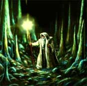 |
Attraverso questa magia l’incantatore è in grado di rendere luminosa la parte superiore di una staffa appositamente preparata o di una qualsiasi verga della stregoneria (link). La staffa emanerà una luce dai riflessi verdi in grado di illuminare una zona di 9 metri di raggio. Si tratta di una luce non molto intensa ma ugualmente in grado di far ottenere una visione adeguata (è l’intensità della luce del tramonto). La parte luminosa della staffa non brucia e non emette calore, inoltre il mago può a piacere, durante l’effetto della magia, ordinare alla staffa (si consideri un’azione complessa con componente verbale) di spegnersi o di accendersi. Questa magia può essere lanciata su qualsiasi verga della stregoneria oppure su una particolare staffa da mago, dal peso di 4 lbs., di legno di quercia finemente lavorata lunga un metro dal valore minimo di 50 monete d'oro e culminante in una gemma del tipo diopside (verde brillante e trasparente) dal valore minimo di 150 monete d'oro incastonata nella parte superiore e ben visibile. La staffa può essere riutilizzata dopo il lancio della magia. |
Static Charge (Enchantment)
Range: 0 Components: V, S, M Duration: 4 rounds per level Casting Time: 2 Area of Effect: Creature touched Saving Throw: Negates
This spell causes the victim to have a serious static charge for the duration of the spell. The static charge causes the affected creature to be very edgy and irritable. The saving throw is at +1 per level (or Hit Die) of the victim - but at -1 per level of the wizard. The material components are a glass rod and wool.
Streams of Fire (Evocation Fire)
Range: 9
metri + 3 metri/2 livelli (max. 18 metri)
Components: V, S
Duration: Instantaneous
Casting
Time: 3
Area of Effect: One creature
Saving Throw: ½
Quando il mago lancia questo incantesimo un fascio di fiamme vorticose parte dalle sue mani e colpisce la creatura selezionata entro il raggio d'azione della magia (9 metri al 1° livello, 12 metri al 2° e 3° livello, 15 metri al 4° e 5° livello, e così via) fino ad un massimo di 18 metri a partire dal 6° livello. La vittima subirà, dunque, danni da fuoco magici pari ad 1d3 danni ogni due livelli di lancio + 1 danno per livello di lancio (1d3+1 danni al 1° livello di lancio, 1d3+2 danni al 2° livello di lancio, 2d3+3 danni al 3° livello di lancio, 2d3+4 danni al 4° livello di lancio, 3d3+5 danni al 5° livello di lancio, 3d3+6 danni al 6° livello di lancio) fino ad un massimo di 4d3+7 danni al 7° livello di lancio. La vittima ha diritto a superare un tiro salvezza su riflessi per dimezzare i danni subiti.
Summon Axe Beak (Summoning)
Range: 9 metri
Components: V, S, M
Duration: Speciale
Casting Time: 1
round
Area of Effect:
Special
Saving Throw: None
|
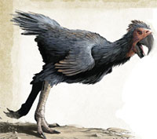 |
Questa magia è di tradizione gnomica
Svirfneblin. Con questa magia di convocazione
spazio/temporale il mago fa apparire un Becco d'Ascia da trasporto alla sua presenza. Si
tratta di un comune Becco d'Ascia (link) che ha ricevuto
addestramento specifico per trasportare merci e/o creature. Al lancio
dell'incantesimo il mago deve decidere con quale tipologia di attrezzatura vuole
richiamare ad esistenza il Becco d'Ascia tra le seguenti due opzioni: |
Summon Gnoll (Summoning)
Range: 21 metri
Components: V, S, M
Duration: 6 rounds +
1 round ogni 2 livelli
Casting Time: 1
round
Area of Effect:
Special
Saving Throw: None
|
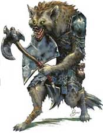 |
Questo incantesimo permette al Summoner di chiamare al suo comando uno Gnoll (link). Quando il mago impara questo incantesimo costui deve determinare anche l'equipaggiamento dello stesso tirando nella tabella che si trova nella sezione Combat della descrizione della creatura. Lo gnoll si limiterà a combattere per il mago attaccando qualunque bersaglio il mago desideri per tutta la durata della magia che è pari a 6 rounds + 1 round ogni 2 livelli (7 rounds al 1° e 2° livello, 8 rounds al 3° e al 4°, ecc...) o fino alla sua morte. Il componente materiale sono 3 monete d’oro che simboleggiano la paga dell'umanoide e si consumano al lancio della magia. |
Summon Goblin (Summoning)
Range: 21 metri
Components: V, S, M
Duration: 6 rounds +
1 round ogni 2 livelli
Casting Time: 1
round
Area of Effect:
Special
Saving Throw: None
|
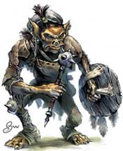 |
Questo incantesimo permette al Summoner di chiamare al suo comando uno Goblin. Il goblin che sarà armato con una small mace (mazza) ed uno scudo piccolo di legno avrà le seguenti caratteristiche: AC 5 , DV 1-1, Thac0 20, Att. 1, Ferite 1d4 (danno da botta), Iniziativa +3 (small mace), Move 9, Size Small). Il goblin si limiterà a combattere per il mago attaccando qualunque bersaglio il mago desideri per tutta la durata della magia che è pari a 6 rounds + 1 round ogni 2 livelli (7 rounds al 1° e 2° livello, 8 rounds al 3° e al 4°, ecc...) o fino alla sua morte. Il componente materiale è una moneta d'oro che simboleggia la paga dell'umanoide e si consuma al lancio della magia. |
Summon Orc (Summoning)
Range: 21 metri
Components: V, S, M
Duration: 6 rounds +
1 round ogni 2 livelli
Casting Time: 1
round
Area of Effect:
Special
Saving Throw: None
|
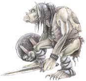 |
Questo incantesimo permette al Summoner di chiamare al suo comando un Orc. L'orchetto che sarà armato con una mazza (mace) ed uno scudo piccolo di legno avrà le seguenti caratteristiche: AC 5 , DV 1+1, Thac0 19, Att. 1, Ferite 1-6 (danno da botta), Iniziativa +5 (mace), Move 9, Size Medium). L'orchetto si limiterà a combattere per il mago attaccando qualunque bersaglio il mago desideri per tutta la durata della magia che è pari a 6 rounds + 1 round ogni 2 livelli (7 rounds al 1° e 2° livello, 8 rounds al 3° e al 4°, ecc...) o fino alla sua morte. Il componente materiale è una moneta d'oro che simboleggia la paga dell'umanoide e si consuma al lancio della magia. |
Summon Kobold (Summoning)
Range: 21 metri
Components: V, S, M
Duration: 6 rounds +
1 round ogni 2 livelli
Casting Time: 1
round
Area of Effect:
Special
Saving Throw: None
|
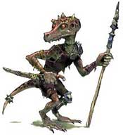 |
Questo incantesimo permette al Summoner di chiamare al suo comando un kobold armato con un ferro appuntito. Il kobold avrà le seguenti caratteristiche: AC 7 , DV ½, Thac0 20, Att. 1, Ferite 1-4 (danno da punta), Iniziativa +3 (punteruolo) Move 6, Size Small). Il kobold si limiterà a combattere per il mago attaccando qualunque bersaglio il mago desideri per tutta la durata della magia che è pari a 6 rounds + 1 round ogni 2 livelli (7 rounds al 1° e 2° livello, 8 rounds al 3° e al 4°, ecc...) o fino alla sua morte. Il componente materiale è una moneta d'oro che simboleggia la paga dell'umanoide e si consuma al lancio della magia. |
Summon Kobold Warband (Summoning)
Range: 21 metri
Components: V, S, M
Duration: 6 rounds +
1 round ogni 2 livelli
Casting Time: 1
round
Area of Effect:
Special
Saving Throw: None
|
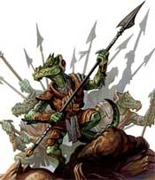 |
Questo incantesimo permette al Summoner di richiamare al suo comando un gruppo da guerra di coboldi. Ogni kobold che sarà con un ferro appuntito avrà le seguenti caratteristiche: AC 7 , DV ½, Thac0 20, Att. 1, Ferite 1-4 (danno da punta), Iniziativa +3 (punteruolo) Move 6, Size Small). I coboldi attaccheranno (limitandosi a combattere) qualunque bersaglio il mago desideri, fino alla fine della magia (che dura 7 rounds al 1° e 2° livello, 8 rounds al 3° e al 4°, ecc...) o fino alla loro morte. Il mago richiamerà ad esistenza tre coboldi più un coboldo ogni due livelli di lancio dell'incantesimo oltre il primo (tre coboldi al 1° e 2° livello, quattro coboldi al 3° e 4° livello, e così via) fino ad un massimo di 7 kobold al 9° livello di lancio. Il componente materiale è una moneta d'oro per ogni coboldo richiamato che simboleggia la paga dell'umanoide e si consuma al lancio della magia. |
Summon Skeleton (Summoning)
Range: 21 metri
Components: V, S, M
Duration: 6 rounds +
1 round ogni 2 livelli
Casting Time: 1
round
Area of Effect:
Special
Saving Throw: None
|
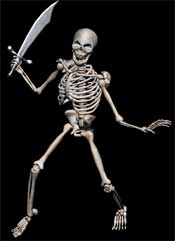 |
Questo incantesimo permette al Summoner di chiamare al suo comando uno skeleton umano armato con una scimitarra. Lo skeleton avrà le seguenti caratteristiche: AC 7, DV 1, Thac0 19, Att. 1, Ferite 1-8 (danno da taglio), Iniziativa +6 (scimitarra) Move 12, Size Medium). Potere Speciale: Lo scheletro gode di tutte le immunità e le vulnerabilità tipiche dei non morti, inoltre questo non morto subisce solo la metà dei danni da punta e da taglio ed è immune ai danni da freddo. Lo scheletro si limiterà a combattere per il mago attaccando qualunque bersaglio il mago desideri per tutta la durata della magia che è pari a 6 rounds + 1 round ogni 2 livelli (7 rounds al 1° e 2° livello, 8 rounds al 3° e al 4°, ecc...) o fino alla sua morte. Il componente materiale è un piccola teschio d'osso in miniatura con incisa sulla fronte una runa della scuola summoning dal valore di 4 g.p. e dal peso di 0.2 libbre che si consuma al lancio della magia. |
Superior Senses (Alteration)
Range: Tocco
Components: V, S, M
Duration: 1 hour
Casting Time: 1
round
Area of Effect:
One creature
Saving Throw: None
Quando il mago lancia questo incantesimo il senso dell'olfatto e dell'udito della creatura diventano molto più acuti come quelli posseduti da alcuni animali. Si noti che questo incantesimo non può essere lanciato su creature che non posseggono normali sensi quali, ad esempio, costruiti, elementali e non morti. Per tutta la durata della magia, quindi, la creatura dotata di sensi superiori sarà in grado di percepire la presenza di un essere anche non vedendolo purché possa avvertirne l'odore od i rumori da questo emessi. Le creature dotate di sensi superiori sono in grado di percepire la presenza di un essere anche non vedendolo purché possano avvertire il suo odore od i rumori da questo emessi. Per tale motivo, si consideri che una creatura che ha sensi superiori ottiene il 33% di possibilità di individuare la presenza di creature che non percepisce già con i normali sensi (ad esempio in quanto non sono in vista, sono nascoste, invisibili o mimetizzate) quando le stesse si trovino entro 50 metri di distanza dalla creatura. Tale tiro sarà ripetuto per ogni creatura presente nell'area ma una sola volta per ognuna di esse. La prova avviene ad inizio round in modo automatico prima della dichiarazione delle intenzioni. Se il tiro percentuale ha successo la creatura sarà a conoscenza della presenza di tali soggetti senza individuare però la loro direzione, posizione, tipologia. A questo punto, con una free action, la creatura può cercare di fiutare una singola traccia scoperta dovendo tirare un nuova prova percentuale. La creatura ottiene il 50% di possibilità di capire la direzione generale di provenienza della traccia all'interno dei 180° dell'arco frontale ed il 25% di venire a conoscenza della distanza ed ubicazione dell'essere rintracciato (queste due percentuali di successo sono valutate sul singolo tiro del dado percentuale effettuato). Qualora il tiro effettuato sia abbastanza basso da permette l'individuazione della posizione della creatura sarà possibile individuare solo il suo attuale posizionamento (esagono) non anche la creatura stessa che dovrà essere concretamente individuata con i comuni sensi. Se tra chi ha sensi superiori e le creature presenti vi sono ostacoli fisici o altre circostanze atte a confondere od attenuare i sensi sarà applicata a tutte le prove una penalità tale da ridurre tutte le percentuali alla metà (per eccesso). Si noti che le creature incorporee non possono essere individuate attraverso questi sensi. Inoltre quando agiscono in condizioni di luminosità ridotta contro avversari che si trovano entro 15 metri di distanza, costoro annullano rispettivamente di un punto e del 10% le penalità previste al tiro per colpire e di fallire nel lancio nel lancio delle magie (questo beneficio non è concesso quando si combatte contro creature incorporee). Nel caso in cui il beneficiario di questa magia attacca un essere, che si trova entro 15 metri di distanza, utilizzando i sensi superiori ma senza poterlo vedere, costui riceve una penalità di -2 ai tiri per colpire. Quando combatte accecato utilizzando i sensi superiori, inoltre, chi è sotto effetto di questa magia riduce i normali bonus previsti per gli avversari che attaccano una creatura accecata, per tale motivo gli avversari che lo attaccano ricevono un bonus di +2 al tiro per colpire e +1 al punteggio sul dado base delle ferite (un bonus che quindi migliora esclusivamente il tiro effettuato con il dado entro il risultato massimo previsto dal dado stesso) inoltre non si considererà il bonus della destrezza e dello scudo alla classe armatura. Si noti che questo beneficio non si applica qualora la creatura attaccante è anch'essa accecata. Il componente materiale di questo incantesimo è un'effige di lupo scolpita nell'argento dal peso di 1/2 libbra e dal costo di 75 monete d'oro che non si consuma al lancio dell'incantesimo.
Targon's Accuracy (Enchantment)
Range: 0 Components: V, S Duration: 1 day per level Casting Time: 1 round Area of Effect: One weapon Saving Throw: None
When cast
upon a missile weapon, the weapon becomes more accurate. It gains a +1 bonus to
hit, and an additional +1 for every 4 levels of the caster. For example, a 4th
level wizard confers a +2 bonus. The maximum bonus is +5. It may only be used on
normal missile weapons. In the case of fired weapons, it is cast on a single
piece of ammunition. If the weapon can be used as a melee weapon, it confers no
bonus in melee combat. The weapon gains no bonus to damage, speed factor, or
ability to hit creatures only hit by enchanted weapons. Once the weapon has been
shot, the bonus is lost, thus ending the spell.
Taunt (Charm)
Range: 12
metri + 1 metro per livello
Components: V, S
Duration: 1 round + 1 round per 2 levels
Casting Time: 2
Area of Effect:
One creature
Saving Throw: Negates
Quando il mago lancia questo incantesimo la vittima dovrà superare un tiro salvezza contro incantesimi mentali. Se il tiro salvezza fallisce, la stessa sarà presa da un odio incontrollabile per il mago e dovrà dirigere tutte le proprie azioni offensive verso costui per l'intera durata dell'incantesimo. Ogni round, quindi, la vittima potrà scegliere unicamente tra non agire lottando contro questo innaturale stato d'ira (senza, però, subire alcuna penalità alla propria classe armatura ed ai propri tiri salvezza in quanto costei potrà comunque continuare a difendersi passivamente), oppure effettuare attacchi od altre azioni offensive rivolgendole contro il mago. Ciò, in quanto, l'odio incontrollato nei confronti del mago impedisce comunque alla vittima di compiere azioni diverse da quelle che risultino offensive per il primo, ad eccezione di muoversi dirigendosi verso costui. Nel caso in cui la vittima decida di muoversi verso il mago, costei dovrà effettuare necessariamente tutto il suo movimento in direzione di quest'ultimo, potendo effettuare un'azione di mezzo movimento solo nel caso in cui questa possa essere seguita da un attacco diretto contro il mago stesso. Se la vittima possiede attacchi speciali o magie in grado di nuocere contemporaneamente sia al mago che ad altre creature (si pensi ad un attacco ad area) costei potrà effettuarli purché il mago rientri tra le creature aggredite. La magia terminerà una volta decorsi 2 rounds + 1 round per ogni 2 livelli di lancio della stessa (2 rounds al 1° livello di lancio, 3 rounds al 2° livello di lancio, 4 rounds al 4° livello di lancio, e così via). Si noti che se per qualsiasi motivo la vittima di questa magia è impossibilitata a muoversi od ad avvicinarsi al mago in quanto il percorso è bloccato (anche dalla presenza di altre creature) la magia terminerà alla fine del round in cui tale impedimento si verifica. Deve osservarsi che non si considererà bloccato un percorso che preveda la possibilità di avvicinarsi al mago effettuando un giro più largo purché il percorso sia visibile da parte della vittima dell'incantesimo.
Telltale Feet (Alteration)
Range: Throwing distance Components: V, S, M Duration: 1 turn per 2 levels Casting Time: 1 Area of Effect: One person Saving Throw: None
This spell creates a glowing footprint to appear wherever the victim steps. The footprints can only be seen by the caster (there is also a fifty percent chance that creatures with infravision may see them as well). The footprints will last for the full spell duration (changing shoes doesn't help). A dispel magic will remove the footprints. The material component for this spell is a single berry. The berry must be thrown at the victim immediately following the vocal component for this spell. The berry must strike the victim for the spell to work.
Tenser's Floating Disk (Abjuration)
Range:
3 metri
Components: V, S, M
Duration: 1 ora per livello (max. 12 ore)
Casting
Time: 1 round
Area of Effect: Speciale
Saving Throw: None
Quando il mago lancia questo incantesimo crea un disco dorato di energia magica largo 1 metro che lo seguirà levitando ad 1 metro d'altezza dalla superficie per tutta la durata dell'incantesimo. Il disco può portare un peso massimo pari a 50 libbre per livello di lancio dell'incantesimo. Il disco seguirà il mago restando a 3 metri di distanza dallo stesso ad un fattore movimento massimo pari a 12. Qualora il disco sia caricato per un peso superiore al massimo che può trasportare, il mago si muova ad un fattore movimento a quello del disco o si sposti con modalità tali da impedire al disco di seguirlo (ad es. volando o usando forme di teletrasporto) e comunque alla fina della durata della magia il disco di energia svanirà lasciando cadere al suolo quello che trasportava. Si noti, però, che il mago potrà, prima dello scadere della durata, lanciare nuovamente la magia semplicemente rinnovando la magia di quella precedente per evitare che ciò che trasportava il disco sia lasciato cadere al suolo. Il componente materiale di questo incantesimo è una goccia di mercurio che si consuma al momento del lancio.
Thieves Enchanted Tools (Enchantment)
Range: Tocco Components: V, S, M Duration: 1 day per level Casting Time: 1 turn Area of Effect: One tool Saving Throw: None
Questa magia incanta gli attrezzi da scasso di un ladro rendendoli temporaneamente magici. Per tutta la durata dell’incantesimo il ladro otterrà un bonus ad aprire serrature pari ad un 1% per livello di lancio della magia. Non possono essere incantati attrezzi da scasso già magici o precedentemente incantati.
Time of Death (Divination, Necromancy)
Range: 0 Components: V, S Duration: Instantaneous Casting Time: 9 Area of Effect: Corpse touched Saving Throw: None
This spell allows the wizard to estimate the time of death of the recipient's corpse to within 5% if the corpse has been dead no more than one day per level of the wizard, to within 20% otherwise.
Touch of Sleeping (Charm)
Range:
Tocco
Components: S
Duration: 2 round + 1 round per level > 1° (max. 6 round al 5° livello)
Casting Time: 3
Area of Effect:
Creature touched
Saving Throw: Speciale
Quando il mago lancia questo incantesimo costui deve toccare la propria vittima, se il tiro per colpire ha successo la vittima potrà cadere a terra addormentata in un sonno magico. In particolare, le creature che hanno un totale di livelli/dadi vita pari od inferiore a 2 cadranno addormentate automaticamente, le creature che hanno un totale di livelli/dadi vita superiore a 2 ma inferiore a 6 hanno diritto ad un tiro salvezza su mente per evitare gli effetti di questa magia; le creature che hanno un totale di livelli/dadi vita pari o superiore a 6 sono, invece, immuni agli effetti di questa magia. Si noti che saranno considerati ai fini di questo incantesimo unicamente i dadi vita pieni posseduti dalla creatura, indipendentemente dagli eventuali bonus di costituzione.
Tree Swipe (Alteration)
Range: 3 yards + 1 yard per level Components: V, S, M Duration: 1 round + 1 round per 3 levels Casting Time: 1 Area of Effect: One fully grown tree Saving Throw: None
By use of this spell, the wizard can control a tree branch for the duration of the spell. The wizard can make the branch wave, attack, fan a small breeze, etc. If the branch attacks, it does so as a fighter of the same level as the wizard and inflicts 2d6 points of damage. This spell works only on full size trees. The material components needed are a handful of leaves, a verbal "smack" and a swing of the arm.
Urlic's Unwholesome Meal (Illusion/Phantasm)
Range: 0 Components: V, S, M Duration: 1 turn + 1 turn per level Casting Time: 5 Area of Effect: Two portions + one portion per level Saving Throw: Negates
This spell is used to disguise existing food or to create a completely illusionary meal. The illusion will have full visual, thermal, touch and smell components. With the former usage, a bland meal can be made to appear in all respects as a royal feast (or vice versa), and even spoiled food or poison can seem irresistible. The serving vessels and utensils can also be disguised. Spoiled foods will often cause nausea, and as a general rule, if a saving throw versus poison is failed, a character will be incapacitated for 3d6 rounds following a 2d8 round onset time. Allow a 25% or greater chance (depending upon what was eaten) for more serious poisoning lasting 4d12 hours. Both slow poison and neutralise poison would be effective in countering these symptoms). A saving throw versus spell is not given until the creature actually begins to consume the affected meal, and it is made at -4 unless a close examination of the food is made. If failed, the diner will believe the illusion to be real, and will have no cause for alarm. If the saving throw is successful, the creature will see the meal's true form, and will be aware of the presence of an illusion. If a complete illusionary meal is consumed, a victim will believe that his hunger and thirst have been satiated, but only for as long as the spell's duration. A saving throw is allowed, being the same as that of the former application of the spell. The spell requires the wizard to sprinkle a pinch of gold dust over the food (or air) where the illusion is to be created.
Vanquil's Clinging Pockets I (Alteration)
Range: 0 Components: V, S, M Duration: 1 hour + 1 turn per level Casting Time: 1 round Area of Effect: Special Saving Throw: None
By casting this spell, the caster causes the objects inside a small soft container carried by him (like a backpack or the pockets in a piece of clothing) to stick together and to the inside of the container. The caster is not affected by this "clinging" (there is no resistance for him), but others must give a strong pull to remove the items. The result is that a thief's chance to pick pockets decreases by 5% per level of the caster, but the caster's chance of noticing a pick pockets attempt doubles (whether it was successful or not). The material component is a bit of glue and some lint.
Vital Coverage (Abjuration)
Range:
Tocco
Components: V, S, M
Duration: 1 hour per level
Casting Time: 1 round
Area of Effect: One creature
Saving Throw: None
Lanciando questa magia il mago crea piccoli ed invisibili campi di forza che circondano le parti vitali della creatura difendendole. Tali campi di forza possono ridurre i rischi relative ai colpi critici subiti. Se la creatura protetta subisce un colpo critico, durante l’efficacia della magia, il tiro per determinare l’intensità del critico sarà ridotto del 5%. Si noti che questa riduzione non può cumularsi con altre riduzioni dovute sia alla magia (come ad oggetti magici) che a protezioni fisiche (come coperture delle zone vitali), qualora il personaggio disponga di più protezioni sarà applicata sola quella che fornisce il bonus migliore. Appena la creatura subisce un tiro critico la magia finirà immediatamente indipendentemente dal risultato del tiro per determinare l’intensità dello stesso. Il componente materiale di questo incantesimo è un grosso guscio di lumaca laccato d’argento dal peso di 1/10 di lb. e dal costo di 3 g.p., questo componente si consuma al lancio della magia.
Vortex of Splinters (Evocation)
Range: 9 yards + 3 yard per 2/levels
Components: V, S, M
Duration: 1 round per level (max. 8)
Casting Time: 1 round
Area of Effect: Special
Saving Throw: ½
|
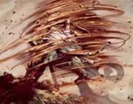 |
Con questo incantesimo il mago evoca un vortice roteante di schegge rocciose larga 1,5 metri ed alta fino a 3 metri. La colonna può apparire ad una distanza di 9 metri + 3 metri ogni due livelli di lancio (12 metri al 2° livello, 15 metri al 4° livello) fino ad un massimo di 21 metri all'8° livello di lancio. In ogni round di durata della magia, chiunque entra in contatto con il vortice di schegge subisce 1d6+1 danni da taglio, +1 ogni due livelli di lancio (1d6+2 al 2° livello di lancio, 1d6+3 al 4° livello di lancio, 1d6+4 al 6° livello di lancio) fino ad un massimo di 1d6+5 all'8° livello di lancio. La vittima può dimezzare i danni superando un tiro salvezza contro incantesimi. Concentrandosi il mago può spostare il vortice di schegge che avanza muovendosi per 3 metri al round. Il vortice si muoverà ad un fattore iniziativa pari a +6 (il mago dunque deve, per impartire l'ordine di movimento alla colonna, rimanere concentrato fino a che la colonna non si sia mossa, se perde la concentrazione precedentemente l'ordine non si considererà impartito). A meno che nell'ordine di movimento impartito nel round il mago non stabilisca che la colonna si fermi o che la colonna si muova di tre metri e poi si fermi, il vortice di schegge procede automaticamente nella direzione verso la quale era stata mossa l'ultima volta dal mago. Il mago può impartire un primo ordine di movimento già durante il lancio della magia. In tal caso il vortice si sposterà nel round successivo a quello di lancio. Si noti che il vortice di schegge deve rimanere obbligatoriamente su una superficie solida o svanire nel nulla. La magia terminerà una volta trascorsi un round per livello di lancio della stessa fino ad un massimo di 8 rounds. Il componente materiale di questo incantesimo è una piccola selce affilata dal peso di 1/2 libbra e dal costo di 2 g.p. che si consuma al lancio della magia. |
Wall of Darkness (Necromacy)
Range: 60 yards Components: V, S, M Duration: 1 round per level Casting Time: 2 Area of Effect: 10 feet per level long square Saving Throw: None
This spell brings into being a wall of blackness which cannot be seen through, even with infravision or ultravision. It is dispelled instantly by a light or continual light (q.v.) spell. It has no physical existence, and does not hinder nor harm those passing through it. It does, however, block the passage of sound from one side to the other, assuming that the spell is not cast in such a way (such as in a field of grass) which would otherwise allow sound to move around the edges of the wall. The material component is some pitch and soot, or a lump of coal.
Wall of Fog (Evocation)
Range: 30 yards
Components: V, S, M
Duration: 2d4 rounds + 1 round per level
Casting Time: 1
Area of Effect: 2 sfere di 3 metri di diametro + 1 sfera ulteriore per livello
Saving Throw: None
Lanciando questo incantesimo il mago evoca un muro di denso fumo bianco. Il mago può creare il fumo in un'area corrispondente a 2 sfere di 3 metri di diametro + 1 sfera ulteriore per livello di lancio della magia. Il mago può posizionare le sfere a piacimento purché tutte poggino su una superficie solida o liquida, si trovino tutte posizionate entro il raggio della magia e siano tutte disposte in modo tale che nel muro non vi sia alcuna soluzione di continuità. Il muro di nebbia oscura tutti i tipi di vista delle creature, ivi compresa l'infravisione. Chi si trova da un lato del muro e non sia più alto di 3 metri, quindi, non riuscirà a vedere quello che si trova dall'altra parte, riuscirà, invece, a vedere quello che si trova immediatamente all'interno del muro anche se la sua vista sarà disturbata dalla nebbia. Parimenti, chi si trova all'interno del muro (sempre che non abbia altre sezioni di muro di nebbia dinanzi a sé) riuscirà a vedere ciò che si trova all'esterno ma la sua vista sarà disturbata. Chi desidera colpire qualcosa che si trovi immediatamente all'interno del muro otterrà una penalità di -2 al tiro per colpire (ed il 20% di fallire gli incantesimi), medesima penalità sarà applicata a chi si trova all'interno del muro e desideri colpire qualcosa che si trovi oltre lo stesso. Qualora, invece, una creatura che si trovi all'interno del muro di nebbia desideri colpire una creatura anch'essa all'interno del muro di nebbia e situata in una posizione adiacente alla stessa, nonostante la veda la visione sarà molto ostruita dalla nebbia e quindi costei otterrà una penalità di -4 al tiro per colpire (ed il 40% di fallire gli incantesimi). Nell'esempio su mappa esagonale è indicata la visuale della Creatura B, con un cerchietto giallo sono indicati gli esagoni che costei vede in modo offuscato, mentre con un cerchietto rosso sono indicati gli esagoni che la creatura non vede in quanto coperti dalla cortina di fumo del muro di nebbia. La Creatura B, quindi, da quella posizione, vedrà male la Creatura A che si trova immediatamente all'interno del muro (ottenendo -2 ai tiri per colpire) mentre non vedrà la Creatura C coperta dal muro di nebbia. In caso di presenza di vento moderato la durata del muro sarà dimezzata (per eccesso), laddove del vento forte, invece, spazzerà via il muro di nebbia alla fine del round in corso. Il componente materiale di questo incantesimo è una manciata di piselli secchi.
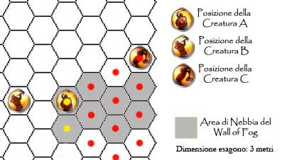
Water Film (Evocation/Abjuration)
Range: Tocco Components: V, S Duration: 3 round per level Casting Time: 1 round Area of Effect: 1 creatura Saving Throw: None
Attraverso questo incantesimo il mago evoca una sottile pellicola d’acqua trasparente protettiva intorno alla creatura toccata (spessa 2,5 cm.). La pellicola protegge la creatura dai colpi in arrivo, in particolare coloro desiderino colpire la creatura protetta con armi da botta (e attacchi fisici assimilabili, ad es. colpo di coda di un drago) avranno una penalità di –2 al tiro per colpire, con armi da taglio (e attacchi fisici assimilabili, ad es. artigli e morsi) avranno una penalità di –1 al tiro per colpire, non subiranno invece penalità coloro attacchino con armi da punta (e attacchi fisici assimilabili). Inoltre la pellicola proteggerà la creatura contro tutti gli attacchi basati sul fuoco, vedrà applicarsi, infatti, un bonus ai tiri salvezza di + 3 e una riduzione del danno da fuoco di 1 punto per dado di danno.
Water Floor (Evocation)
Range: 21
metri + 3 metri per livello
Components: V, S
Duration: Istantanea
Casting Time:
3
Area of Effect: 3 m quadri per livello
Saving Throw: Special
Con questa magia il mago crea improvvisamente una pellicola d’acqua su una qualsiasi superficie solida che funge da pavimento (non, quindi, su soffitto o mura perimetrali) in modo da renderla scivolosa. Tutte le creature all’interno dell’area di effetto dovranno superare un tiro salvezza contro paralisi o cadere a terra (knockdown), potendosi rialzare solo nel round successivo. Le creature con almeno quattro arti di appoggio otterranno un bonus di +1 al tiro salvezza, mentre creature che strisciano con il proprio corpo al suolo non subiranno alcun effetto. Il mago può creare la pellicola su una superficie pari a tante zone di 3 metri quadrati quanto è il livello di lancio della magia. Il mago può posizionare tali zone come meglio ritiene purché siano tutte in contatto tra loro. Il DM potrà modificare il tiro salvezza delle vittime della magia a seconda della natura del terreno su cui la stessa è stata lanciata applicando un bonus/malus massimo di +/-2.
Weasel Wire (Enchantment)
Range: Tocco
Components: V, S, M
Duration: Speciale
Casting Time: 1 round
Area of Effect: Un pezzo di ferro
Saving Throw: None
Quando il mago lancia questo incantesimo costui riesce ad incantare un piccolo e sottile pezzo di ferro. Il pezzo di ferro incantato potrà, quindi, essere utilizzato da una qualsiasi creatura come se fosse un attrezzo da scasso al fine di aprire o chiudere una qualsiasi serratura o lucchetto con meccanismo. In pratica, il pezzo di ferro incantato conferirà a chi lo utilizza l'abilità open lock con una percentuale di successo base pari al 10% per livello di lancio della magia fino ad un massimo dell'80% all'8° livello di lancio (percentuale che dovrà poi essere modificata dai modificatori dovuti al lucchetto). Si noti che non trattandosi, comunque, di attrezzi da scasso, i vagabondi non potranno utilizzare questo pezzo di ferro incantato con la loro abilità di aprire le serrature. Una volta utilizzato, indipendentemente dal risultato, il pezzo di ferro si sgretolerà in polvere e la magia terminerà immediatamente, ciò si verificherà anche in caso di mancato utilizzo una volta trascorse 24 ore dall'incantamento. Il componente materiale di questo incantesimo è il pezzo di ferro da incantare dal valore di 2 monete d'oro e dal peso di 0,2 libbre che si consuma alla fine della durata della magia.
Web Strand (Conjuration)
Range: Tocco
Components: V, S, M
Duration: Speciale
Casting Time:
3
Area of Effect: Una creatura
Saving Throw: Negates
Quando il mago lancia questa magia deve toccare (effettuando un normale tiro per colpire) la creatura che desidera imprigionare nella ragnatela. Se il mago riesce a colpire l'avversario costui avrà diritto a superare un tiro salvezza su magia (ed eventualmente ad un tiro per la magic resistance posseduta) per evitare gli effetti dell'incantesimo. Qualora la vittima fallisca il tiro salvezza la stessa si troverà avviluppata da una densa ragnatela che la bloccherà parzialmente. La creatura, infatti, non potrà spostarsi dalla zona occupata e si considererà incapacitata ai fini dell'applicazione delle altre penalità ottenute nel combattimento. In particolare, la creatura riceve una penalità di -2 a tutti i suoi tiri ed il 20% di non riuscire a concentrarsi nel lancio delle magie con componente somatico. Se costretta ad effettuare un tiro (ad es. un tiro salvezza) riceve una penalità di -2 (-10% ai tiri salvezza) su tutti i tiri contro effetti che sarebbero stati più facili da evitare qualora costei fosse stata in grado di muoversi normalmente. Gli avversari che attaccano la creatura ricevono un bonus di +2 al tiro per colpire. Per liberarsi dalla ragnatela prima della fine della durata dell'incantesimo la vittima potrà unicamente cercare di liberarsi con la forza. Tale azione che richiede un intero round e comporta l'accumulo di un punto fatica provocherà alla ragnatela danni pari al valore numerico per la creatura è riuscita in una prova di forza (con un tiro pari o superiore alla propria forza, quindi, non provocherà alcun danno alla ragnatela). Le creature di taglia large riceveranno un bonus di +2 alla prova di forza. La ragnatela può subire fino a 6 punti danno + 2 per livello di lancio dell'incantesimo prima di essere lacerata fino ad un massimo di 20 punti danno al 7° livello di lancio. I danni sono effettuati alla fine del round per cui la creatura sarà libera di agire solo nel round successivo alla distruzione della ragnatela. Terze creature possono, se munite di armi da taglio, aiutare a rompere la ragnatela. Costoro dovranno effettuare per ogni attacco una prova di destrezza (con –1 di penalità se usano armi medium e -3 se usano armi large). Se la prova è effettuata con successo l’attacco (senza necessità di alcun tiro per colpire) danneggerà solo la ragnatela provocandole normali danni, se invece la prova fallisce la ragnatela e la creatura bloccata si divideranno i danni provocati con l'attacco (la ragnatela subirà danni per eccesso). In ogni caso, al termine della magia, che dura 5 round la ragnatela svanirà. Le creature di taglia huge o gargantuan non sono bloccate da questa ragnatela. Il componente materiale di questo incantesimo è un piccolo ragno imbalsamato dal valore di 2 g.p. e dal peso di 0.1 libbra che si consuma al lancio della magia.
Whisper's Hands of Darkness (Necromancy)
Range: Touch Components: V, S Duration: 3 round per level Casting Time: 1 Area of Effect: The caster Saving Throw: Negate
This spell is very dangerous. When the spell is cast the wizard hands are surrounded by a black force field of negative energy. If a creature in touched during the duration of the spell and falls a saving throw against death the wizard drain 2 hp per level. This damage is difficult to heal. Only 1 hp per 10 days is restored (it isn’t necessary to rest). This happens because is difficult to regain the positive energy lost. Only when the spell ends or a creature fails the saving throw the wizard hands return normal.
Wimbly's Wonderful Web (Conjuration)
Range: 6 metri + 3 metri /
2 livelli (max. 18 metri)
Components: V, S, M
Duration: 4 rounds + 1 round ogni 2 livelli
Casting Time: 2
Area of Effect: One creature
Saving Throw: Negates
Questa magia può essere lanciata su qualsiasi creatura si trovi nel raggio di
azione della stessa (6 metri al 1° livello, 9 metri al 2° e 3° livello, 12 metri
al 4° e 5° livello, e così via fino ad un massimo di 18 metri a partire dall'8°
livello di lancio).
Quando questo incantesimo viene lanciato sulla vittima la stessa ha diritto ad
un tiro salvezza su magia (ed eventualmente ad un tiro per la
magic
resistance posseduta) per evitarne gli effetti.
Qualora la vittima fallisca il tiro
salvezza la stessa si troverà avviluppata da una densa ragnatela che la
bloccherà parzialmente. La creatura, infatti, non potrà spostarsi dalla zona
occupata e si considererà incapacitata ai fini dell'applicazione delle altre
penalità ottenute nel combattimento. In particolare,
la creatura riceve una penalità di -2 a tutti i suoi tiri ed il 20% di non
riuscire a concentrarsi nel lancio delle magie con componente somatico. Se
costretta ad effettuare un tiro (ad es. un tiro salvezza) riceve una penalità di
-2 (-10% ai tiri salvezza) su tutti i tiri contro effetti che sarebbero stati
più facili da evitare qualora costei fosse stata in grado di muoversi
normalmente. Gli avversari che attaccano la creatura ricevono un bonus di +2 al
tiro per colpire. Per liberarsi dalla ragnatela prima della fine della
durata dell'incantesimo la vittima potrà unicamente cercare di liberarsi con la
forza. Tale azione che richiede un intero round e comporta l'accumulo di un
punto fatica provocherà alla ragnatela danni pari al valore numerico per la
creatura è riuscita in una prova di forza (con un tiro pari o superiore alla
propria forza, quindi, non provocherà alcun danno alla ragnatela). Le creature
di size large riceveranno un bonus di +2 alla prova di forza. La ragnatela può
subire fino a 10 punti danno + 2 per livello di lancio dell'incantesimo prima di
essere lacerata fino ad un massimo di 30 punti danno al 10° livello di lancio. I
danni sono effettuati alla fine del round per cui la creatura sarà libera di
agire solo nel round successivo alla distruzione della ragnatela. Terze creature
possono, se munite di armi da taglio, aiutare a rompere la ragnatela. Costoro
dovranno effettuare per ogni attacco una prova di destrezza (con –1 di penalità
se usano armi medium e -3 se usano armi large). Se la prova è effettuata con
successo l’attacco (senza necessità di alcun tiro per colpire) danneggerà solo
la ragnatela provocandole normali danni, se invece la prova fallisce la
ragnatela e la creatura bloccata si divideranno i danni provocati con l'attacco
(la ragnatela subirà danni per eccesso). In ogni caso, al termine della magia,
che dura 4 rounds + 1 ogni due livelli (5 rounds al 1° e 2° livello, 6 rounds al
3° e 4° livello, ecc...) la ragnatela svanirà. Le creature di taglia huge o
gargantuan non sono bloccate da questa ragnatela.
Il componente materiale di questo incantesimo è un piccolo ragno imbalsamato dal
valore di 2 g.p. e dal peso di 0.1 libbra che si consuma al lancio della magia.
Wither (Necromancy)
Range: 30 yards Components: V, S, M Duration: Instantaneous Casting Time: 1 Area of Effect: 100 square feet per level Saving Throw: Special
This spell kills all normal vegetation within an area of 100 square feet per level of the wizard, who determines the shape of that area at the time of casting. Trees receive a saving throw of 11, and special plants such as treants suffer but 1d6 points of damage. The material component is acid, sprinkled over the whole area of effect. Casting time is exclusive of this administration.
Wizard Glue (Enchantment)
Range: 0 Components: S, M Duration: Permanent Casting Time: 1 Area of Effect: Surfaces touched, 20 square feet per level Saving Throw: None
Wizard glue will hold one relatively flat surface to another, such as a mirror to a wall. The strength of the bond is 10 pounds per level of the caster. Removing two objects separated by this spell requires a dispel magic, or a Strength that, multiplied by ten, is equal to or greater than the bond strength. The material component of this spell is some honey mixed together will tree sap (wizards call this mixture an epoxy resin).
Zolthan Lesser Mist (Evocation Smoke)
Range: 0
Components: V, S
Duration: 5 rounds
Casting Time: 4
Area of Effect:
The Caster
Saving Throw: None
Quando il mago landcia questa magia intorno alla sua figura appare una leggera coltre nebbiosa che lo segue per tutta la durata della magia. La nebbiolina, che è presente unicamente nella posizione occupata dal caster, renderà leggermente più difficile vedere lo stesso. In particolare tutti gli attacchi a distanza rivolti contro il mago riceveranno una penalità di -1 al tiro per colpire e tutte le magie lanciate direttamente contro lo stesso otterranno il 10% di possibilità di fallimento. Questa penalità è cumulabile con altre penalità dovute a coperture come ad esempio la presenza di una zona di foresta (non però ai fini della mancanza di visibilità). Un vento forte od effetti magici assimilabili fanno terminare immediatamente l'incantesimo come pure l'immersione del corpo del caster in una qualsiasi sostanza liquida.
Zombie (Necromancy)
Range:
Tocco
Components: V, S, M
Duration: Permanent
Casting Time: 1 hour
Area of
Effect: Corpse touched
Saving Throw: None
Con questo incantesimo il mago può animare un cadavere di un qualsiasi umanoide di dimensioni medium. Al termine della magia il cadavere diventerà uno zombie. Attraverso questo incantesimo il mago può mantenere animato contemporaneamente un solo non morto per cui potrà riutilizzarlo solo dopo che il primo non morto abbia cessato di esistere. Si tratterà in ogni caso di un non morto comune indipendentemente dal livello (o dai dadi vita) che aveva colui al quale il cadavere apparteneva. Il componente materiale per questo incantesimo sono, oltre al cadavere che deve essere animato, delle candele nere rituali dal valore di 50 corone che si consumano durante il lancio dell'incantesimo.